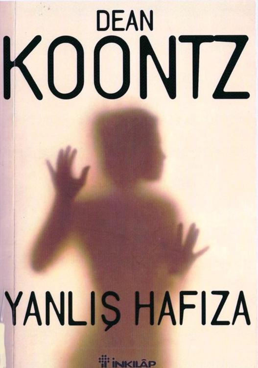

1
Hayatının sonsuza kadar değiştiği ocak ayının o salı gü-
nünde Martine Rhodes baş ağrısı ile uyandı; greyfurt suyu ile iki tane aspirin içtikten sonra midesi ekşimeye başladı.
Kendi şampuanı yerine yanlışlıkla Dustin'in şampuanını kullandı ve böylece kötü saçlarıyla zorlu bir gün geçirmeyi garantilemiş oldu. Tırnağını kırdı; tostunu yaktı ve mutfak tezgâhının altındaki dolaptan sürü halinde akın eden karıncaları fark etti. Uzaydan gelen yaratık filmlerinden birinde Sigourney Weaver'm kullandığı alev makinesi kadar etkili bir kutu böcek ilacını üzerlerine boşaltıp baş belası karıncaları öldürdü; sebep olduğu katliamı kâğıt havlularla temizledi.
Küçük vücutları ciddi bir biçimde çöp kutusuna atarken Bach'm Ölüm Marşı'nı mırıldanıyordu; tam o sırada düğü-
nün üzerinden üç yıl geçtiği halde hâlâ Martie'nin evliliğinin sona ermesi için dua eden annesi Sabrina telefon etti. Tüm bu olanlara rağmen Martie, önünde uzanan gün hakkında gayet iyimser -hatta ümitliydi- çünkü Martie, mavi gözleri, simsiyah saçları ve çirkin ayak parmaklarına ek olarak, iyimser yapısını, güçlüklerle başa çıkma yeteneğini ve yaşam sevgisini rahmetli babası Robert "Güler Yüzlü Bob" Woodhouse'dan almıştı.
Teşekkürler Baba.
Umudunu hiç kaybetmeyen annesini, Rhodes çiftinin çok mutlu olduğuna ikna ettikten sonra, deri bir ceket giydi ve sarı renkli av köpeği Valet'ı sabah yürüyüşüne çıkardı.
Başının ağrısı yavaş yavaş geçmeye başlamıştı.
Güneş, berrak gökyüzünde pırıl pırıl parlıyordu. Fakat batıdan esen serin rüzgâr, uğursuz siyah bulut kümelerini de beraberinde getiriyordu.
Köpek, kaygılı bir biçimde gökyüzüne baktı, ihtiyatlı bir biçimde havayı kokladı ve rüzgârın hareketlendirdiği palmiye yapraklarından çıkan ıslık sesini ve etraftaki gürültüyü daha iyi duymak için sarkık kulaklarını dikti. Fırtınanın yaklaştığını biliyor olmalıydı.
Valet, sakin ve neşeli bir köpekti. Sanki bir önceki yaşa-mında bir askermiş ve top ateşi ile yıkılan savaş meydanla-rının hatıraları onu rahatsız ediyormuş gibi yüksek sesler-den korkuyordu.
Allahtan, güney Kaliforniya'nın kötü havalarında gök gürültüsü nadiren duyulurdu. Yağmur genellikle varlığını belli etmeden, sokaklar üzerinde hafifçe ıslık çalarak ve yapraklar arasında fısıldayarak yağardı ve bunlar Valet'in bile rahatlatıcı bulduğu seslerdi.
Çoğu sabahlar, Martie, köpeğini Corona Del Mar'm üç şeritli dar sokaklarında bir saat gezdiriyordu ama salı ve per-
şembe günleri gezintilerini on beş dakika ile sınırlamasına neden olan özel bir nedeni vardı. Valet'in tüylü kafasının içinde bir takvim olmalıydı, çünkü salı ve perşembe gezile-rinde hiç oyalanmıyor ve tuvaletini eve yakın bir yerde yapı-
yordu.
Bu sabah, evlerinden sadece bir blok ötede, kaldırım ve yol arasında uzanan çimenlik alanda köpek ürkek ürkek etrafına bakındı, tedbirli bir biçimde sağ bacağım kaldırdı ve her zamanki gibi, mahremiyet olmadığı için utanıyormuşçasma yaptı çişini.
Henüz ikinci bloka gelmemişlerdi ve Valet sabah tuvaletinin ikinci bölümünü yapmaya hazırlanıyordu. Tam o anda yoldan geçen çöp kamyonunun motoru geri tepti ve onu ür-küttü. Büyük bir palmiyenin arkasına saklandı; onu korkutan aracın gittiğinden emin olmak için ağacın gövdesinin ön-ce sağ tarafından sonra da sol tarafından ihtiyatlı bir biçim-de sokağa bakıyordu
Martie, "Problem yok," diyerek onu rahatlattı. "Büyük kötü kamyon gitti. Her şey yolunda. Artık burası tuvaletini yapabileceğin güvenli bir yer. "
Valet ikna olmamıştı. Tedbirli halini korudu.
Martie, Güler Yüzlü Bob'un sabrına da sahipti; özellikle de Valet'la ilgilenirken. Valet'ı çocuğuymuş gibi seviyordu.
Valet, iyi huylu ve güzel bir köpekti: Rengi açık sarıydı ve bacaklarında altın rengi ve beyaz, poposunda ise yumuşak kar beyazı tüyler ve gür bir kuyruk vardı.
Tabii ki, köpek şimdiki gibi tuvaletini yapmakla meşgul iken, Martie asla ona doğru bakmıyordu; çünkü Valet, üst-süzler barmdaki bir rahibe kadar utangaçtı. Beklerken yu-muşak bir sesle Jim Croce'nin, Valet'i her zaman rahatlatan,
'Time in a Bottle" şarkısını söyledi.
İkinci dizeye başladığında, sırtında, susmasına neden olan ani bir ürperti hissetti. Önsezileri olan bir kadın değildi ama buz gibi bir titreme hissi ensesine doğru yükseldiğinde içini bir tehlike duygusu kapladı.
Arkasını döndüğünde yaklaşan bir saldırgan ya da araba görmeyi bekliyordu ama bu sessiz sokakta tek başınaydı.
Öldürmek amacıyla kendisine doğru koşan hiçbir şey yoktu. Sadece rüzgârın gücüyle sarsılan nesneler hareket ediyordu. Ağaçlar ve çalılar hafifçe sallanıyordu. Kurumuş
birkaç kahverengi yaprak kaldırım boyunca hafifçe oynuyordu. Geçen yılki tatilden kalma gümüşi şeritler ve Noel süsleri yandaki evin saçakları altında hışırdıyor ve takırdıyordu.
Kendini hâlâ huzursuz ama bir yandan da aptal gibi hisseden Martie, tutmakta olduğu nefesini bırakıverdi. Dişlerinin arasından dışarı çıkan nefesinin sesini duyduğunda, çenesinin kilitlenmiş olduğunu fark etti.
Muhtemelen, gece yarısından sonra uyanmasına neden olan rüyanın ürkütücü etkisinden hâlâ kurtulamamıştı. Bu, son birkaç gecedir gördüğü rüyanın aynısıydı. Ölü, çürümüş
yapraklardan oluşan bir adam. Bir kâbus figürü. Fırıl fırıl dönüyor, öfkeyle bağırıyor.
Daha sonra, bakışları kısa kesilmiş çimenler boyunca uzanan, kaldırımın kenarını örten ve kırık beton kaldırımın üzerinde kıvnmlanan gölgesine yöneldi. Huzursuzluğu, açıklanamaz bir şekilde arttı ve korkuya dönüştü.
Geriye doğru bir adım attı ve sonra bir adım daha; ve tabii ki, gölgesi de onunla birlikte hareket etti. Geriye doğru üçüncü adımını atarken onu korkutan şeyin bu siluet oldu-
ğunu anladı.
Gülünç. Rüyasından bile saçma. Ama, gölgesinde tuhaf olan bir şeyler vardı; korkutucu bir his uyandıran bir çarpık-lık, garip bir şey.
Kalbi, kapıyı yumruklayan bir el gibi güçlü çarpıyordu.
Sabah güneşinin vuruş açısı nedeniyle evlerin ve ağaçların da gölgeleri çarpık görünüyordu ama Martie, onların uzayan ve kamburlaşan gölgelerinde korkunç bir yan görmüyordu -
sadece kendi gölgesi korku vericiydi.
Korkusunun gülünç olduğunu fark etti ama bu endişesini yok etmedi. Korku ona eşlik ediyor ve panik halde orada duruyordu. Kendi yavaş ama sık kalp atışları ile birlikte göl-ge de küt küt atıyormuş gibi görünüyordu. Martie, gölgesine bakarken bayılacak gibi oldu.
Gözlerini kapadı ve kendini sakinleştirmeye çalıştırdı.
Bir an için kendini o kadar hafif hissetti ki, rüzgâr onu yukarı kaldıracak ve hiç durmaksızın hareket eden bulutlar-la birlikte içerilere, soğuk mavi gökyüzünün küçülerek kaybolduğu noktaya götürecek kadar güçlüymüş düşüncesine kapıldı. Fakat, birkaç kere derin derin nefes aldıktan sonra ağırlığı yavaş yavaş normale döndü.
Gölgesine tekrar bakmaya cesaret ettiğinde anormal herhangi bir durumun mevcut olmadığını gördü. Rahatlamış
olarak derin bir nefes aldı.
Kalbi küt küt atmaya devam etti ama bunun nedeni mantık dışı korku değil, bu tuhaf olayın nedenine ilişkin yerinde bir kaygıydı. Daha önce başına hiç bu tür bir durum gelmemişti.
Başını kaldırdığında yüzünde sorgulayıcı bir ifade vardı ve Valet ona bakıyordu.
Valet'in tasma kayışını düşürmüştü. Elleri terden sırıl-sıklamdı. Avuç içlerini kot pantolonuna silerek kuruttu.
Köpeğin tuvaletini yapmış olduğunu görünce sağ elini, ev hayvanlarının pislikleri için kullanılan plastik torbaya geçirdi ve onu bir eldiven gibi kullandı. İyi bir komşu olduğu için Valet'in pisliğini düzgün bir biçimde aldı ve parlak mavi torbayı ters yüz etti, bükerek ağzını kapattı ve iki düğüm attı.
Av köpeği, onu kabahatinden dolayı utanmış bir biçim-de seyrediyordu. "Eğer sana duyduğum sevgiden şüphe du-yarsan tatlım" dedi Martie "bu işi her gün yaptığımı hatırla."
Valet, minnettar görünüyordu. Ya da belki sadece rahatlamıştı. Bu, her zamanki mütevazı işi yapmak akıl dengesini yeniden bulmasını sağlamıştı. Küçük mavi torba ve onun sı-
cak muhteviyatı Martie'nin gerçeğe sıkıca tutunmasına neden olmuştu. Esrarengiz olay rahatsızlık vermeye ve merakı-
nı uyandırmaya devam etti ama artık onu korkutmuyordu.
2
Skeet, kasvetli gökyüzünün altındaki çatıya bir silüet gi-bi oturmuş, halüsinasyonlar görüyor ve intihar etmeyi planlıyordu. Üç şişman karga, sanki çürümüş et kokusu almış
gibi başının altı yedi metre üzerinde daireler çiziyordu. Aşa-
ğıda, Motherwell, evin garajını sokağa bağlayan yolda, kocaman ellerini yumruk yapıp beline dayamış şekilde ayakta duruyordu. Caddeden uzak olduğu için yüz ifadesi anlaşılmasa da, kızgınlığı duruşundan belli oluyordu. Kafa kırma modundaydı.
Dusty, minibüsünü, üzerinde bu pahalı ve lüks evlerde oturan insanlara hizmet veren özel güvenlik şirketinin adı yazılı olan bir devriye arabasının arkasına, kaldırımın yanı-
na park etti. Üniforma giymiş uzun bir adam, arabanın ya-nında duruyor ve aynı anda hem güvenilir hem de lüzumsuz görünmeyi başarabiliyordu.
Skeet Caulfield'm üzerinde oturduğu ve hayatın faniliği-ni düşündüğü üç katlı ev, yaklaşık dokuz yüz elli metre karelik bir alan üzerine kurulmuş, dört milyon dolarlık iğrenç bir yerdi. Ya çok kötü bir eğitim almış ya da espri yönü oldukça gelişmiş bir mimar, evi yaparken birkaç Akdeniz üslu-bunu -modern İspanyol, klasik İtalyan, yeni Yunan ve erken Taco Bell- birleştirmişti. Binanın kendisi tam bir stil karma-
şasıydı; üstüne üstlük, gereğinden fazla baca ve çan kulesi vardı. Zavallı Skeet, bu çan kulelerinin en çirkin görünüşlü olanının yanma, çatının en tepesine tünemişti.
Belki de bu durumda oynaması gereken rolden çok emin olmadığı ve bir şeyler yapma ihtiyacı duyduğu için bekçi, "Si-ze nasıl yardım edebilirim bayım?" diye sordu.
"Ben boya işleriyle ilgileniyorum," diye cevap verdi Dusty.
Yanık tenli bekçi ya Dusty'den şüphelenmişti ya da gözleri doğuştan kısıktı. Adamın yüzünde o kadar çok çizgi vardı ki bir origami parçası gibi görünüyordu. Şüphe içinde "Bo-ya işleri ha?" dedi.
Dusty'nin üzerinde pamuklu beyaz bir pantolon, beyaz bir kazak, beyaz bir kot ceket vardı ve başına, üzerinde ma-vi harflerle RHODES BOYACILIK yazan beyaz bir şapka takmıştı. Bu şapka, iddiasına biraz inandırıcılık katmış olmalıy-dı. Kuşkucu bekçiye semtin boyacı, tesisatçı ve baca temiz-leyicisi kılığına girmiş profesyonel hırsızlar tarafından kuşa-tılıp kuşatılmadığım sormayı düşündü ama onun yerine sadece "Ben Dustin Rhodes," dedi ve şapkasının üzerindeki ya-zıyı gösterdi. "Yukarıdaki adam benim tayfamdan biri."
'Tayfa mı?" Bekçi kaşlarını çattı. "Siz ona tayfa mı diyorsunuz?"
Belki alaycı davranıyordu belki de sorun insan ilişkilerinin çok iyi olmamasıydı.
El sallayan Skeet'e bakarken Dusty, "Boyacılık işinde patronların çoğu işçilerine tayfa der, evet," dedi. "Eskiden iş-
çilerimizden saldın gücü diye bahsediyorduk ama bu bazı ev sahiplerini korkuttu çünkü kulağa çok agresif geliyordu; bu nedenle, diğer herkes gibi biz de onlara sadece tayfa diyoruz."
"Öyle mi!," dedi bekçi. Kısık gözü daha da kısıldı.
Dusty'nin söylediklerini çözmeye çalışıyor ya da suratına bir yumruk atıp atmayacağına karar veriyor olabilirdi. "Merak etme, Skeet'i aşağı indireceğiz," diyerek bekçiyi rahatlatmaya çalıştı.
"Kimi?" Garajı caddeye bağlayan yoldan Motherwell'e doğru yürürken "Çatıdan atlayacak olan kişiyi," diyerek açıklamada bulundu Dusty.
Onu takip eden bekçi "Sizce itfaiyeyi aramalı mıyım? "
diye sordu.
"Hayır. Atlamadan önce kendini yakmayacaktır."
"Burası iyi bir semttir."
"İyi mi? Lanet olsun burası mükemmel."
"Burada gerçekleşen bir intihar semt sakinlerimizi üze-cektir."
"Bağırsakları kepçe ile kaldırırız, kalanları torbalara dol-dururuz, kanı hortumla yıkarız ve semt sakinleri intihan hiçbir zaman öğrenmez. "
Komşuların, bu trajik olayı seyretmek için toplanmadığı-
nı gören Dusty rahatlamış ve şaşırmıştı. Sabahın bu erken saatinde belki de hâlâ havyarlı çörek yiyip, altın kadehlerde şampanya ve portakal şüyu içiyorlardı. Allahtan, Dusty'nin müşterileri olan ve Skeet'in çatılarında ölümle dalga geçtiği Sorensonlar Londra'da tatildeydiler.
Dusty, "Günaydın Ned," dedi
"Serseri," diye cevap verdi Motherwell.
"Ben mi?"
Çatıdaki Skeet'i göstererek "O," dedi Motherwell.
Bir doksan boyunda ve 130 kilo ağırlığında olan Ned Motherwell, Dusty'den on beş santim daha uzundu ve yaklaşık elli kilo daha ağırdı. Kolları, yarış atlarının bacakları kadar kaslıydı. Kısa kollu bir tişört giyiyordu ve soğuk havaya rağmen üzerinde ceket yoktu; Motherwell soğuk havadan Paul Bünyan'ın granit heykelinin etkilendiği kadar etkileni-yordu.
Kemerine iliştirilmiş telefona hafifçe vurarak "Lanet olsun patron, seni arayalı neredeyse yıllar oldu. Nerde kaldın?"
"Sen bana telefon edeli sadece on dakika oldu; nerde kaldığım sorusuna gelince buraya gelebilmek için kırmızı ışıkta geçtim ve neredeyse yaya geçitlerindeki okul çocuklarını eziyordum. "
Bekçi ciddi bir biçimde "Bu bölgede saatte kırk kilometre hız limiti var," dedi.
Motherwell, Skeet Caulfield'a ters ters bakarak yumru-
ğunu salladı, "Ben bu serseriyi çekiçle dövmek istiyorum,"
dedi.
"O kafası karışmış bir çocuk," dedi Dusty.
Motherwell, "O uyuşturucu kullanan bir pislik," diyerek Dusty'e katılmadığını belirtti..
"Son zamanlarda kullanmıyordu."
"O bir lağım faresi."
"O kadar büyük bir kalbin var ki Ned."
"Önemli olan şey, bir beynimin olması ve ben onu uyuş-
turucu ile mahvetmeyeceğim; ayrıca, onun gibi kendi kendini mahveden insanların etrafımda dolaşmasını istemiyorum."
Ekibin ustabaşısı olan Ned, Straight Edger'*' hareketinin üyesiydi. Başarılı olma olasılığı olmasa da, ergenlik çağındaki ve yirmili yaşlarındaki insanlar -kadınlardan çok erkekler-arasında hâlâ büyüyen hareket, taraftarların uyuşturucudan, aşırı alkolden ve düzensiz seksten vazgeçmelerini gerektiriyordu. Bu hareketin üyeleri, kafa sallayan, rock'n roll ve pogo dansı yapan, kendi kendini kontrol edebilen ve kendine saygısı olan gençlerdi. Eğer hareketin liderleri sistemden nefret etmeselerdi ve her iki büyük politik partiyi de küçümse-meselerdi, hareketin herhangi bir öğesi onlar için kültürel bir akıma dönüşebilirdi. Bazen, bir klüpte veya konserde iken aralarında bir uyuşturucu bağımlısı olduğunu anladıkların-da, onu uyuşturucudan vazgeçirene dek dövüyor ve buna ha-
şin sevgi demekten rahatsızlık duymuyorlardı. Bu aynı zamanda onları politik akımlardan uzak tutuyordu.
Dusty, farklı nedenlerden olsa da hem Motherwell! hem de Skeet'i seviyordu. Motherwell zeki, komik ve güvenilirdi, muhtemelen kendi isteklerini frenleyemediği neşesiz bir ya-
(*) A B D ' d e , uyuşturucu, alkol, özgür seks ve adi t e l e v i z y o n magazin prog r a m l a r ı n a karşı olanların oluşturduğu hareket. Hareket üyeleri, bu tür alışkanlıkların kendilerini A B D ' n i n geleceği hakkında önemli konuları d ü ş ü n m e k t e n a l ı k o y d u ğ u n a inanırlar, (r.n.) şama, amaçsız günlere ve yalnız geçen gecelere mahkûm olmasına karşın, Skeet kibar ve sevimliydi
Motherwell, ikisinden de daha iyi bir işçiydi. Eğer Dusty akıllı iş yönetimi kitabının kurallarını tam olarak uygulasay-dı, Skeet'i uzun süre önce ekipten atmış olurdu. Eğer sağdu-yu egemen olsaydı yaşam çok kolaylaşacaktı ama bazen kolay yol doğru yol olmuyordu.
"Muhtemelen yağmur yağacak," dedi Dusty. "O halde neden onu ilkönce çatıya gönderdin?"
"Ben göndermedim. Ona, pencerelerdeki çerçeveleri ve yerdeki döşemeyi zımparalamasını söyledim. Sonra bir baktım, yukarıya çıkmış, kafaüstü g a r a j yoluna atlayacağını söylüyor."
"Onu aşağı indireceğim."
"Ben denedim. Ben yaklaştıkça daha da histerikleşti. "
"Muhtemelen senden korkmuştur," dedi Dusty.
"Lanet olası herif korksa iyi olur. Eğer onu ben öldürürsem, kafatası betonda parçalandığında duyduğu acıdan da-ha fazlasını duyacaktır."
Bekçi cep telefonunu çıkardı "Belki de polisi arasam iyi olur."
"Hayır!" Sesinin çok sert çıktığını fark eden Dusty, derin bir nefes aldı ve daha sakin bir şekilde, "Böyle nezih bir semtte oturan insanlar, önlenebilecek ufak meseleler yüzünden yaygara kopmasını istemezler," dedi.
Polisler Skeet'i güvenli bir biçimde aşağı indirebilirlerdi ama sonra onu, orada en az üç gün kalmasını gerektirecek bir psikiyatri kliniğine yatıracaklardı. Bu süre muhtemelen daha uzun olacaktı. Skeet'in ihtiyacı olan en son şey, kişiyi kısa vadede sakinleştiren ama sonunda onu şu an olduğundan çok daha kötü bir duruma düşüren ve avuçlar dolusu meyva aromalı sinir ilaçlan tedavisi uygulayan bir kafa dok-torunun eline düşmekti. "Bu tür semtler," dedi Dusty, "gösteri sevmezler." Sokak boyunca uzanan büyük evleri, muhte-
şem palmiyeleri ve görkemli çam ağaçlannı, bakımlı çimen-leri ve çiçek bahçelerini gözden geçirdikten sonra bekçi, "Si-ze on dakika vereceğim." dedi.
Motherwell sağ yumruğunu kaldırdı ve Skeet'e doğru salladı. Tepesinde dönen kargalann halesi altında oturan Skeet de ona el salladı. Bekçi, "Her neyse, intihar edecek gi-bi görünmüyor," dedi. "Küçük serseri, Ölüm Meleği yanında oturduğu için ve ona diğer tarafta olmanın nasıl bir şey ol-duğunu gösterdiği için mutlu olduğunu söylüyor.," diye açıkladı Motherwell "ve söylediğine göre, o taraf gerçekten muhteşemmiş."
"Gidip onunla konuşacağım," dedi Dusty. Motherwell kaşlannı çattı. "Konuş. O lanet olası herifi kov."
Y a n l ı ş H a f ı z a , F : 2
3
İçinde birikmiş yağmurla kabarmış olan bulutlu gökyü-
zü yere doğru yaklaştığında ve rüzgâr kuvvetlendiğinde Martie ile köpek koşarak eve geldiler. Martie, hızla eve doğru yü-
rürken sürekli olarak aşağıya, kendisiyle birlikte yürüyen gölgesine bakmıştı ama kısa bir süre sonra fırtına bulutlan güneşin önünü kapattığından, gizemli arkadaşı sanki topra-
ğın altına sızarak yeraltı dünyasına geri dönmüş gibi ortadan kaybolmuştu.
Pencerede olup da onun tuhaf davranışını gören var mı diye merak ederek yanından geçtiği evleri incelemiş, bir yandan da düşündüğü kadar tuhaf görünmediğini umut etmişti.
Çok hoş ayrıntılara ve Martie'nin tanıdığı insanların ya-nsından daha fazla cazibeye ve karaktere sahip olsa da, bu pitoresk semtte evler genellikle eski ve küçüktü. Evlerin ço-
ğuna İspanyol mimarisi hakimdi ama aynı zamanda Cots-wold evleri, Fransız chaumiere'leri, Alman Hauschen'leri ve Art Deco bungalow'lan da vardı. Defneler, palmiye ağaçları, mis kokulu okaliptüsler, eğrelti otlan ve şelale gibi çağlayan begonyalann yeşil nakışı ile işlenmiş çeşitli mimarilerin karması çok hoş görünüyordu.
Martie, Dusty ve Valet, mükemmel tasarlanmış, Kraliçe Viktoıya dönemi evlerini hatırlatan iki katlı minyatür bir ev-de oturuyorlardı. Dusty, binayı San Francisco'nun belli cad-delerinde bulunan bu tür evlerin renkli ama zevk sahibi ki-
şilere hitap eden geleneğini dikkate alarak boyamıştı: Açık san fon; mavi, gri ve yeşil süslemeler. Saçaklar, pencere per-vazlan ve çerçeveler ise, doğru bir kararla, pembe renge boyanmıştı.
Martie, evlerini seviyordu ve onun, Dusty'nin yeteneğini ve sanatını yansıttığını düşünüyordu.
Fakat nedense annesi evin boyasını ilk gördüğünde, "Ev-de sanki palyaçolar oturuyormuş hissini uyandmyor," de-mişti.
Martie, evin kuzey tarafındaki ahşap kapıyı açarken ve arka bahçeye giden dar tuğla patika boyunca Valet'i izlerken, mantıklı bir açıklaması olmayan korkusunun annesinden al-dığı can sıkıcı telefondan kaynaklanıp kaynaklanmadığını merak etti. Ne de olsa, hayatındaki en büyük stres kaynağı, Sabrina'nm Dusty'i kabul etmeyi reddetmesiydi. Bu iki kişi onun en sevdiği varlıklardı ve aralannda banş olsun istiyordu.
Dusty, savaşın taraflarından biri değildi. Bu üzücü sa-vaştaki tek savaşçı Sabrina'ydı. Ne yazık ki, Dusty'nin sava-
şa katılmayı reddetmesi düşmanlığı sadece daha da güçlendiriyordu.
Martie, evin arka tarafında bulunan çöp konteynerleri-nin yanında durarak konteynerlerden birinin kapağını açtı ve içinde Valet'in kakasının bulunduğu mavi plastik torbayı içine bıraktı.
Belki de ani ve açıklanamaz korkusunun nedeni, annesinin, Dusty'nin başanlı olma hırsının sözüm ona yetersizli-
ğine ve Sabrina'nm yeterli eğitim addettiği eğitimi almamış
olmasına ilişkin sızlanmalanydı. Martie, annesinin bu tavn-nm bir gün evliliklerini etkilemesinden korkuyordu. Kendine engel olamayıp, Dusty'e annesinin eleştirel gözlerinden bakmaya başlayabileceğinden korkuyordu. Ya da belki Dusty, Sabrina kendisini küçük gördüğü için Martie'ye içerlemeye başlayacaktı.
Aslında Dusty, Martie'nin tanıdığı en bilgili insandı. Ku-laklannm arasındaki makine, babasmmkinden bile iyi çalı-
şıyordu -ki Güler Yüzlü Bob gerçekten de zeki bir adamdı.
Hırslı olmaya gelince... kendisi de hırslı bir koca yerine nazik bir kocaya sahip olmayı tercih ederdi; ve Dusty'de Ve-gas'taki açgözlülükten daha fazla merhamet vardı.
Dahası, Martie'nin kendi kariyeri de annesinin onunla ilgili kariyer beklentilerini karşılamamıştı. Üniversite diploması aldıktan -işletmeyi asıl branş, pazarlamayı yardımcı branş
olarak seçmişti- ve yüksek lisansını tamamladıktan sonra, onu genel müdür olma şerefine eriştirecek olan yolu tercih etmemişti. Onun yerine, serbest çalışan video oyunu tasarımcısı olmuştu. Her şeyini kendisinin yarattığı birkaç başa-rılı oyun satmıştı ve başkalarının fikirlerine dayanan senaryolar, karakterler ve fantezi dünyaları tasarlamıştı. Çok fazla olmasa da, iyi para kazanıyordu ve erkek egemen bir dünyada kadın olmanın çok büyük bir avantaj olduğunu düşü-
nüyordu; çünkü onun bakış açısı farklıydı. İşini seviyordu ve kısa bir süre önce, J.R.R. Yüzüklerin Efendisi üçlemesine dayanan tamamen yeni bir oyun yaratmak için bir anlaşma imzalamıştı. Belki bu, Scrooge McDuck'ı etkilemeye yetecek oranda patent ücreti almasını sağlayabilirdi. Yine de annesi, onun yaptığı işi hor görüyor ve "karnaval saçmalığı" olarak tanımlıyordu; çünkü Sabrina, video oyunlarını atari salonları ile, atari salonlarını eğlence yerleri ile ve eğlence yerlerini karnavallarla ilişkilendiriyordu. Martie, annesinin bir adım daha ileri gidip onu fuarlarda şov yapan hilkat garibesi olarak tanımlamadığı için kendisini şanslı hissediyordu.
Valet, arka merdivenleri çıkarken ve verandayı geçerken Martie'ye eşlik ediyordu. Martie, "Belki de psikanalist, birkaç dakika önce beni korkutan gölgemin, annemin ve onun ne-gatifliğinin bir sembolü olduğunu söyleyecektir." dedi.
Valet, ona gülümsedi ve tüylü kuyruğunu salladı. "Belki, benim kısa korku nöbetim, annemin ... bir gün kafamı karış-
tırabileceğine ve zehirli tutumuyla beni zehirleyebileceğine ilişkin bilinçsiz bir kaygıyı ifade ediyordu."
Martie, ceketinin cebinden anahtarlarını çıkardı ve kapı-
yı açtı.
'Tanrım, Temel Psikoloji dersinin yarısına gelmiş ikinci sınıfa giden kolej öğrencileri gibi hissediyorum kendimi."
Köpeğiyle sık sık konuşuyordu. Köpek dinliyor ama asla cevap vermiyordu ve onun sessizliği, mükemmel ilişkilerinin temel direklerinden biriydi.
Valet onu mutfağa doğru takip ederken Martie, "Başıma gelen olayda büyük bir ihtimalle psikolojik bir sembolizm yoktu ve ben deliriyorum." dedi.
Valet, delilik teşhisine katılıyormuş gibi hırladı ve kase-sindeki suyu istekle içti.
Haftada beş gün, uzun bir yürüyüşten sonra ya Martie ya da Dusty yarım saatlerini arka verandada köpeğin bakımı için harcıyorlar, köpeğin tüylerini tarayıp fırçalıyorlardı. Salı ve perşembe günleri, bakım öğle gezintisinden sonra yapılı-
yordu. Evlerinde çok fazla köpek tüyü yoktu ve Martie bu düzeni devam ettirmeyi düşünüyordu.
"Bir sonraki bildiriye kadar tüy dökmemekle yükümlü-
sün," diye hatırlattı Valet'a. "Ve unutma—bizim burada olmamamız ve senin neler yaptığını görmememiz, sana aniden mobilyaların üzerine çıkma ayrıcalığı ve buzdolabına sınırsız erişim hakkı vermez."
Martie ona güvenmediği için kırılmış olduğunu söylemek istercesine Valet, gözlerini Martie'ye doğru çevirdi. Ardından suyunu içmeye devam etti.
Martie, mutfağın bitişiğindeki küçük tuvaletin ışığını yaktı. Amacı makyajını kontrol etmek ve rüzgârdan dağılmış
saçlarını fırçalamaktı.
Lavaboya doğru yaklaştığında içini yeniden garip bir korku kapladı ve kalbi sıkışıyormuş hissine kapıldı. Bu de-fa, daha önce olduğu gibi arkasında ölümlü bir tehlikenin belirdiği duygusuna kapılmamıştı. Şu anda aynaya bakmaya korkuyordu.
Sanki sırtına tonlarca taş yüklenmiş gibi aniden gücü kesildi ve omuzlarını kamburlaştırarak öne doğru eğildi. İki eliyle lavabonun kenarlarına tutunarak aşağıdaki boş evye-ye baktı. Mantıkdışı korku ile o kadar çok eğilmişti ki, yukarıya bakmasının fiziksel olarak imkânı yoktu.
Kendi saçından kopmuş siyah bir tel, beyaz porselenin kıvrımına düşmüştü ve bir ucu açık olan pirinç giderin altından kıvrılan bu saç teli uğursuz bir şey gibi görünüyordu. Yukarı bakmaya cesaret edemediği için, musluğu el yordamıyla aradı ve sıcak suyu açıp saçın gitmesini sağladı.
Suyun akmasına izin vererek yükselen buharı içine çek-ti ama bu, Martie'nin yeniden hissettiği ürpertiyi ortadan kaldırmadı. Ellerinin arasındaki lavabonun kenarları yavaş
yavaş ısındı ama elleri hâlâ buz gibiydi.
Ayna bekliyordu. Martie, artık onu sadece cansız bir varlık ve arka yüzü yaldızlı zararsız bir cam parçası olarak dü-
şünemiyordu. Ayna bekliyordu.
Ya da aynanın içindeki bir şey onunla göz göze gelmek için bekliyordu. Bir yaratık. Bir varlık.
Başını kaldırmadan sağma baktı ve Valet'in kapı aralı-
ğında durduğunu gördü. Normalde, köpeğin yüzündeki şaş-
kın ifade onu güldürürdü; şu anda, gülmek için özel bir ça-ba göstermesi gerekecekti ve onun ağzından çıktığında kahkaha, kahkahaymış gibi gelmeyecekti.
Aynadan korkuyorsa da, kendi tuhaf davranışından da
-ve daha yoğun bir şekilde- korkuyordu; çünkü kontrolünü tamamen kaybetmişti.
Buhar, yüzünde sıvılaştı. Boğazı tıkanıyormuş, boğuluyormuş gibi hissetti. Ve hızla akan, çağıldayan suyun sesi, kötü niyetli seslere, kötü ruhların kıkırdamalarına dönüştü.
Martie, musluğu kapattı. Sessizlikte, nefes alıp verişi korkunç hızlıydı ve Martie'nin umutsuzluğunu net bir biçim-de yansıtıyordu.
Biraz önce sokaktayken, derin nefes aldığından, kafası-
nın içindekiler boşalmış, korku ortadan kalkmıştı ve onu korkutan çarpık gölgesi tehdit unsuru olmaktan çıkmıştı. Bu sefer, aldığı her nefes, oksijenin yangını beslemesi gibi korkusunu besliyordu.
Tuvaletten kaçacaktı ama vücudundaki tüm güç tükenmişti. Bacakları lastik gibiydi ve düşüp başını bir yerlere çarpmaktan korkuyordu. Lavabodan destek almalıydı.
Basit mantık adımlarıyla eski dengesine geri dönmeyi umarak kendisini mantık yoluyla ikna etmeye çalıştı. Ayna ona zarar veremezdi. O bir varlık değildi. Sadece bir nesney-di. Cansız bir obje. Tanrı aşkına, o sadece bir cam.
O aynanın içinde gördüğü hiçbir şey kendisi için bir tehlike unsuru oluşturamazdı. O, tıpkı iğrenç bir korku filmin-deki gibi deli bir adamın arkasında durup, yüzünde delilere özgü bir ifade ile ve aklında cinayet düşüncesi ile içeri baka-bileceği bir pencere değildi. Aynada, tuvaletin - ve Martie'nin kendisinin - yansıması dışında herhangi bir şeyin görünmesi mümkün değildi.
Mantık işe yaramıyordu. Beyninin, daha önce hiç uğramadığı karanlık bir bölümünde batıl inançlara rastladı.
Aynadaki bu varlığın, Martie'nin kendisini akıl ve mantık yoluyla bu korkudan kurtarma çabaları yüzünden ger-
çeklik ve güç kazandığına inandığından, bu düşman ruhu görmemek için gözlerini kapattı. Her çocuk, yatağın altındaki öcünün, varlığı inkar edildiğinde daha güçlü ve daha tehlikeli hale geldiğini, yapılması gereken en doğru şeyin, pis kokan nefesinde başka çocukların kanı olan aşağıdaki aç canavarı düşünmemek olduğunu bilir. Onu düşünme, iğrenç sarı gözlerini, dikenli siyah dilini düşünme. O zaman canavar tamamen ortadan kaybolacak ve en sonunda kutsanmış
uyku gelecek ve ondan sonra da sabah olacak. Ve sen, bir canavarın midesinde değil de, rahat yatağında sıcacık battaniyelerin altında olacaksın.
Valet, Martie'ye sürtündü, Martie neredeyse çığlık atı-
yordu.
Gözlerini açtığında, köpeğin, sarı av köpeklerine çok ya-kışan ve hem yalvarma hem de kaygı içeren ifadelerden biri ile kendisine baktığını gördü.
Martie, onun desteği olmadan ayakta duramayacağını bildiği için lavaboya yaslanıyordu. Bir elini lavabodan çekti.
Dokunmak için, titreyerek elini Valet'a doğru uzattı.
Köpek bir paratoner görevi gördü ve Martie ona dokunduğunda kendisini topraklanmış hissetti. Tıpkı bir elektrik akımı gibi, felç edici etkiye sahip korkusunun bir kısmı içinden akıp gitti. Aşırı dehşet yerini sadece korkuya bıraktı.
Her ne kadar sevecen, iyi huylu ve güzelse de Valet korkak bir hayvandı. Bu küçük odada onu korkutan bir şey yoksa, herhangi bir tehlikenin varlığı da söz konusu olamazdı. Valet, Martie'nin elini yaladı.
Köpekten cesaret alan Martie, en sonunda başını yavaş-
ça kaldırdı. Korkunç beklentiler içinde titriyordu.
Aynada korkunç bir yüz, uzaydan bir manzara ya da hayalet yoktu: Sadece bembeyaz olmuş kendi yüzü ve arkasındaki tuvalet.
Mavi gözlerinin aynadaki yansımasına baktığında kalbi yeniden hızla çarpmaya başladı, çünkü gerçek anlamda kendisine yabancılaşmıştı. Kendi gölgesinden korkan, bir aynayla karşı karşıya kalma olasılığında panikleyen bu titrek ka-dın . . . bu kadın, hayatın dizginlerini elinde tutan, istekli ve dengeli olan Martine Rhodes değildi, Güler Yüzlü Bob'un kı-
zı değildi.
Aynadaki kadına "Neler oluyor bana?" diye sordu ama ne aynadaki aksi ne de köpek bu soruya cevap veremedi.
Telefon çaldı. Cevap vermek için mutfağa gitti.
Valet onu takip etti. Şaşkın şaşkın Martie'ye baktı, biraz kuyruğunu salladı sonra sabit durdu.
Sonunda, "Üzgünüm, yanlış numara," dedi ve telefonu kapattı. Köpeğin tuhaf davrandığını fark etti. "Neyin var senin?"
Valet, tüyleri hafifçe dikilmiş halde ona bakıyordu.
"Yemin ederim arayan, yan komşunun dişi kanişi değil-di."
Tuvalete ve aynaya geri döndüğünde gördüğü şeyden hoşlanmamıştı ama şimdi ne yapması gerektiğini biliyordu.
4
Dusty, evin yanındaki rüzgârın hareketlendirdiği palmiyenin hafifçe hışırdayan yapraklarının altından yürüdü. İşte, ekibin üçüncü üyesi olan Foster "Fig" Newton'u bulmuştu.
Fig, kemerine küçük bir radyo takmıştı—bu radyoyu hiçbir zaman yanından ayırmıyordu. Radyodaki konuşmaları rahatlıkla duyabilmek için kulaklık kullanıyordu. Fig, politik konular ya da modern yaşamın problemleriyle ilgili programlar dinlemezdi. UFO'lar, uzaylıların dünyalıları ka-
çırması, ölülerden gelen telefon mesajları, dördüncü boyutta yaşayan varlıklar ve Koca Ayak ile ilgili programlan hiç ka-
çırmıyor, gündüz ya da gece hangi saatte olursa olsun o istasyonu ayarlıyordu. "Selam, Fig."
"Selam." Fig, özenle bir çerçeveyi zımparalıyordu. Nasır-lı parmaklan toza dönüşmüş boyadan dolayı bembeyaz ol-muştu.
Fig'in biraz ötesindeki arduvazlı yolu izlerken "Skeet'le ilgili haberleri duydun mu? " diye sordu Dusty.
Fig başını sallayarak, "Çatıda," dedi. "Atlayacak galiba."
"Muhtemelen atlayacakür."
Dusty durdu ve şaşırmış bir şekilde dönerek. "Gerçekten böyle mi düşünüyorsun?" diye sordu.
Newton genellikle o kadar suskundu ki, Dusty, Newton'un cevap vermek yerine sadece omuz silkeceğini düşü-
nüyordu. Oysa Fig, "Skeet hiçbir şeye inanmaz," dedi.
"Hiçbir şey demekle neyi kastediyorsun?" diye sordu Dusty.
"Hiçbir şey nokta."
"Aslında o kötü bir çocuk değil."
Fig'in cevabı onun için yemek sonrası yapılan bir konuş-
mayla aynı değerdeydi:
"Problem şu ki, o çok derin biri değil."
Foster Newton'un turta gibi yuvarlak yüzü, erik gibi çenesi, kocaman ağzı, vişne gibi yuvarlak kırmızı burnu ve kır-mızı yanakları aslında onu ahlaki çöküntü içinde olan bir zevk düşkünü gibi göstermeliydi ama kaim camların büyüt-tüğü hüzünlü parlak gri gözleri sayesinde bu görüntüden kurtuluyordu. Bu, Skeet'in intihar etme isteğiyle ilgili bir hü-
zün değildi; daha çok, herkesle ve her şeyle ilişkilendirdiği sürekli bir acıydı.
"İçi boş," diye ekledi Fig.
"Skeet mi?"
"Boş."
"Kendini bulacaktır."
"Artık aramıyor ama."
Fig'in kısa ve öz konuşma sitiline uyum sağlayarak "Bu karamsar bir düşünce," dedi, Dusty.
"Gerçekçi."
Fig, başını yana yatırdı ve dikkatini radyodaki bir tartış-
maya verdi. Dusty, kulaklıkların birinden zayıfve tiz bir fısıl-tı şeklinde çıkan tartışmayı duyabiliyordu. Fig ayakta duruyordu ve zımpara makinesi çerçevenin üzerindeydi. Görünü-
şe bakılırsa gözleri, dinlemekte olduğu tuhaflıktan kaynaklanan hüzünlü bir ifadeye bürünmüştü; bir uzaylının ışın silahından çıkan ve kişiyi felç eden ışınla vurulmuş gibi hareketsizdi.
Fig'in iç karartıcı tahmininden dolayı endişelendiği için Dusty hızla, Skeet'in önceden tırmandığı uzun alüminyum merdivene doğru yürüdü. Onu, evin ön tarafına götürmeye karar verdi. Daha direkt bir yaklaşım, Skeet'in korkmasına ve aşağı inmesi için ikna edilmeye fırsat kalmadan çatıdan atlamasına neden olabilirdi. Dusty hızla yukarı çıkarken ayaklarının altındaki basamaklar fıkırdıyordu.
Merdivenin üzerinden çatıya atladığı nokta evin arka tarafmdaydı. Skeet Caulfield, evin ön tarafmdaydı ve uyuyan bir ejderhanın pullarla kaplı böğrü gibi yükselen turuncu renkli kilden yapılmış kiremitlerin dik eğiminin arkasında ol-duğu için görünmüyordu.
Bu ev bir tepenin üzerindeydi ve birkaç kilometre batıda, Newport Beach'in kalabalık kıyılarının ve kuytu limanının ötesinde ise Pasifik Okyanusu uzanıyordu. Suyun her zamanki maviliği, okyanus tabanına tıpkı bir tortu gibi oturmuştu ve çırpınıp duran dalgalar yer yer siyah beneklerle birlikte grinin birçok tonunu içeriyordu: Ürkütücü cennetin bir yansıması. Ufukta, deniz ve gökyüzü çok büyük siyah bir dalganın içinde kavisler çiziyormuş gibi görünüyordu; eğer bu durum gerçek olsaydı, dalga, Rocky Dağlarını en az dokuz yüz kilometre doğuya götürmeye yetecek bir güçle kıyı-
ya vuracaktı.
Evin arkasında, Dusty'nin yaklaşık on beş metre aşağı-
sında denizden ve yaklaşmakta olan fırtınadan daha tehlikeli, arduvaz ile döşenmiş verandalar bulunuyordu. Kendisinin arduvazlann üzerine düşme ihtimali, Rocky dağlarının sular altında kalması ihtimalinden daha yüksekti.
Dusty, okyanusa ve tehlikeli düşüş olasılığına sırtını çevirerek, yerçekiminin kendisini tehlikeli bir biçimde aşağı doğru çekişine karşı ters ağırlık görevi görmesi için kollan hafifçe açık ve öne doğru uzatılmış bir halde yukarı doğru ağır adımlarla yürümeye başladı. Kıyıdan gelen hafif rüzgâr hâlâ sadece güçlü bir esintiydi ve henüz şiddetli bir fırtınaya dönüşmemişti; yine de bu hafif rüzgâr, arkasından estiği ve onu çatıdan uzaklaştırmak yerine çatıya doğru ittiği için minnettardı. Uzun eğimin zirvesinde bacaklannı açarak ata biner gibi çatının sırtına oturdu ve kompleks çatının ilave eğimleri arasından evin ön tarafına doğru baktı.
Skeet, alçak bir çan kulesi gibi görünen çift çıkışlı bir bacanın yanında, Dusty'ninkine paralel bir başka çatı sırtın-da oturuyordu. Yalancı mermerden yapılmış kule, Rönesans dönemine ait kemerlerin üzerine oturtulmuştu. Kemerlerin kireçtaşı kolonları, bakır kaplı İspanyol sömürge dönemi mimarisine ait ufak kubbeyi destekliyordu. Ufak kubbenin üzerinde kısa ama şatafatlı Gotik bir kule ucu bulunuyordu ve Budweiser için büyük neon bir ışığı ne kadar uygunsuzsa, bu üşütük tasarım için de, şatafatlı Gotik kubbe ucu o kadar uygunsuzdu.
Arkası Dusty'e dönük bir halde dizlerini kendine çekmiş
olan Skeet, başının üzerinde dolanıp duran üç kargaya baktı. Kollarını, sanki onları kucaklayacakmış gibi havaya kaldırmıştı; kuşları başının ve omuzlarının üzerine konmaya davet ediyordu. Bu görüntüsü ile bir boyacıyı değil, tüylü dostları ile sohbet aynininde olan Aziz Francis'i andırıyordu.
Hâlâ çatı sırtında ata biner vaziyette oturan Dusty, pen-guen gibi paytak paytak yürüyüp batıdan doğuya doğru uzanan saçak kısmına gelene dek kuzeye doğru hareket etmek için çatının zirvesini terk etti ve şu anda yer çekimi onu aşa-
ğı doğru çektiği için, dikkatli adımlarla yuvarlak kiremitler-den aşağı doğru indi. Çömelerek bir süre kenarda durdu ama sonra yağmur oluğunun bir tarafından diğer tarafına atladı ve alçak yüzeyin üzerine üç bacak olarak düştü; lastik tabanlı ayakkabılarının her biri bir eğimin üzerindeydi.
Ağırlığı eşit olarak dağılmadığından, Dusty sağa doğru yatmıştı. Tekrar dengesini bulmaya çalıştı ama aşağı doğru kayacağını fark etti. Daha fazla yana yatmadan ve aşağıya yuvarlanıp kafasını kırmadan önce kendisini ileri doğru attı ve çatı sırtındaki kiremitlere yüz üstü düştü; sağ bacağı ve koluyla güney eğime, sol bacağı ve koluyla ise kuzey eğime sıkı sıkı tutunuyordu. Bu haliyle gözü dönmüş bir boğanın üzerinde olan panik halindeki bir rodeo kovboyunu andırı-
yordu.
Turuncu ve kahverengi renklerin karışımından oluşan boyayı ve çatının kiremitleri üzerinde çürümüş likenlerin oluşturduğu pası izleyerek bir süre orada yattı. Bu manzara ona Jackson Polock'un sanatım hatırlatmıştı. Gerçi şu anda gördükleri, daha ince bir zevkin ürünüydü, daha anlamlıydı ve göze daha hoş görünüyordu.
Yağmur başladığında ölü liken tabakası hızla sümüksü bir hal alacak ve fırında pişirilmiş kiremitler tehlikeli bir bi-
çimde kayganlaşacaktı. Fırtına kopmadan önce Skeet'e ulaş-
mak ve onu çatıdan indirmek zorundaydı. En sonunda daha küçük bir çan kulesine doğru emekledi.
Bunun küçük kubbesi yoktu. Üzerinde yükselen kubbe, camilerin üzerinde bulunan ve Cennetağacı adı verilen İslami modelde resmedilen seramik fayanslarla kaplı kubbelerin minyatür bir çeşidiydi. Ev sahipleri Müslüman değildi; bu nedenle evin mimarisinde bu egzotik ayrıntıyı kullanmalarının nedeni, onu görsel olarak beğenmeleriydi—oysa, evin tepesindeki kubbeye hayran kalacak kadar yaklaşabilecek insanlar sadece çatı işçileri, boyacılar ve baca temizleyicileriydi.
Dusty, yaklaşık bir buçuk metre boyundaki kuleye yaslanarak gövdesini ayaklarının olduğu yere doğru çekti. Ellerini, kubbenin alt kenarındaki bir havalandırma deliğinden diğerine geçirerek açık çatının bir sonraki uzun bölümüne uzanan yapının etrafında yavaş yavaş ilerledi.
Bir kez daha bacaklarını açıp, ata biner gibi çatının sır-tına oturarak Cennetağacı kubbesi olan bir başka lanet olasıca taklit çan kulesine doğru ilerledi. Kendini, yüksekte ya-
şayan Nötre Dame'in kamburu Quasimodo gibi hissetti: Belki o zavallı biçare kadar çirkin değildi ama onun kadar atik de değildi.
Bir sonraki kulenin etrafından dolaştı ve evin ön kana-dını örten kuzey güney çatısının saçakları altında uzanan doğu batı açıklığının sonuna kadar gitti. Skeet, alt çatı sırtı çizgisinden üst çatı eğimine ulaşan bir rampa görevini gören kısa alüminyum bir merdiven kullanmıştı ve merdiven hâlâ oradaydı. Dusty, çömeldiği yerden kalkıp bacaklarını ve kollarını maymun gibi kullanarak, merdiveni tırmandı ve başka bir eğimli yüzeye ulaştı.
En sonunda Dusty son tepeye tırmandı. Skeet onu gör-düğü için ne şaşırmış ne de paniğe kapılmıştı. "Günaydın Dusty."
"Merhaba evlat."
Dusty yirmi dokuz yaşındaydı ve genç adamdan sadece beş yaş büyüktü; yine de Skeet'i çocuk gibi görüyordu.
"Oturabilir miyim?" diye sordu Dusty.
Skeet gülümseyerek, "Arkadaşlığından zevk duyarım,"
dedi.
Dusty onun yanma oturdu; poposu çatı sırtı çizgisinin üzerindeydi, dizlerini kendine doğru çekmişti ve ayakkabıla-rı kiremitlerin üzerindeydi.
Otoyolun ve evlerin bulunduğu geniş arazinin üzerinden ve San Joaquin Dağlan'nm arkasından doğuya doğru esen rüzgâr, ağaç dallarını salladı ve çatıdaki kiremitleri yerinden oynattı; Santa Ana Dağları, yağmur mevsiminden önce kahverengi ve çıplak görünüyordu. Yaşlı tepelerini çepeçevre saran bulutlar kirli eşarpları andırıyordu.
Motherwell, aşağıdaki garaj yoluna büyük bir branda sermişti ama kendisi ortalıkta görünmüyordu.
Bekçi kaşlarını çatmış onları izliyordu; kolundaki saate baktı. Skeet'i aşağı indirmesi için Dusty'e on dakika vermişti.
"Üzgünüm," dedi Skeet. Sesi ürkütücü bir biçimde sakindi.
"Neden üzgünsün?"
"İş saatinde atlamaya çalıştığım için."
"Bu işi boş bir zamanında yapabilirdin," diyerek ona ka-tıldığını belirtti Dusty.
"Haklısın ama mutsuz olduğum bir yerden değil de, mutlu olduğum yerden atlamak istedim ve ben en çok işte mutluyum."
"Hoş bir çalışma ortamı yaratmaya çalışıyorum."
Skeet hafifçe güldü ve akan burnunu gömleğinin koluna sildi.
Her zaman zayıf olsa da, sırım gibi ve dayanıklıydı; şu anda çok zayıf hatta sıskaydı ama kaybettiği kilo sadece kemik ve kastan ibaretmiş gibi yumuşak görünüyordu. Güneş
altında çalıştığı halde yüzü solgundu; kahverengiden çok gri bir renk almış olan teninde hayaletlerinkine benzer bir solgunluk vardı. Ucuz siyah-beyaz lastik tenis ayakkabıları, kırmızı çorapları, beyaz pantolonu ve yıpranmış kol ağızlan kemikli bileklerinden aşağı dökülen yırtık pırtık açık san ka-zağıyla aç susuz çölde dolaşan kayıp bir çocuğu andmyordu.
Burnunu tekrar koluna silen Skeet, "Hava soğuyor olmalı" dedi.
"Belki de burun akıntısı sadece bir yan etkidir. "
Skeet'in gözleri genellikle bal rengine yakın bir kahve-rengiydi ve ışıl ışıldı ama şu anda o kadar dolu dolu olmuş-
tu ki, renginin bir kısmı yok olmuş, geriye sadece donuk bir bakış bırakmış gibi görünüyordu. "Seni hayal kmklığma uğ-
rattığımı düşünüyorsun, öyle değil mi?"
"Hayır."
"Eyet öyle. Ama bu sorun değil. Bunun benim için bir önemi yok."
Dusty, "Beni hayal kmklığma uğratamazsm," diyerek rahatlattı onu.
"Ama uğrattım. Seni hayal kırıklığına uğrattığımı ikimiz de biliyoruz. "
"Sen sadece kendini hayal kmklığma uğratabilirsin."
Skeet, "Rahatla abi" diyerek Dusty'nin dizine hafifçe vurdu ve gülümsedi. "Benden çok fazla şey beklediğin için seni suçlamıyorum ve problemli bir manyak olduğum için kendimi de suçlamıyorum. O devreleri çoktan aştım."
On iki metre aşağıda Motherwell, çift kişilik bir karyoladan aldığı yatağı tek eliyle taşıyarak evden dışan çıktı.
Tatilde olan ev sahipleri Dusty'e anahtar bırakmıştı çün-kü evin yoğun kullanılan bazı odalannm iç duvarlannm da boyanması gerekiyordu. İşin bu kısmı bitmişti.
Motherwell, yatağı, daha önce sermiş olduğu brandanın üzerine bıraktı; Dusty'e ve Skeet'e doğru bakıp yeniden evin içine girdi.
On iki metre yukandan bile Dusty, bekçinin, bu intihar girişiminin hafif sıynklarla atlatılmasını sağlamak için Motherwell'in eve girip dışarı eşya çıkarmasını onaylamadığını görebiliyordu.
"Ne aldın?" diye sordu Dusty.
Skeet omuzlarını silkti ve yüzünü, evin üzerinde çember oluşturan kargalara çevirdi. Kargalara öyle budalaca bir gü-
lüşle ve o kadar büyük bir saygıyla bakıyordu ki, onun, gü-
ne bir bardak taze sıkılmış portakal suyu, şekersiz kepekli kurabiye, omlet ve on sekiz kilometrelik bir yürüyüşle başla-mış tamamen normal biri olduğu düşünülebilirdi.
"Ne aldığını hatırlıyor olmalısın," diye üsteledi Dusty.
"Bir kokteyl," dedi Skeet. "Hap ve toz."
"Uyarıcı, sakinleştirici?"
"Muhtemelen ikisi de. Çok aldım. Ama kendimi kötü hissetmiyorum." Bakışlarını kuşlardan uzaklaştırdı ve sağ elini Dusty'nin omuzuna koydu. "Artık kendimi bok gibi hissetmiyorum. Huzurluyum Dusty."
"Yine de ne aldığını bilmek istiyorum."
"Neden? Olabilecek en lezzetli formül olsa bile sen bu formülü asla kullanmazsın." Skeet gülümsedi ve Dusty'nin yanağından bir makas aldı. "Yapmazsın. Sen benden farklı-
sın."
Motherwell evden dışarı çıktı. Elinde, bir başka çift kişilik karyoladan aldığı ikinci bir yatak vardı. Getirdiği ikinci yatağı birincinin yanma koydu.
Skeet, dik çatının altındaki yatakları işaret ederek "Bu aptalca," dedi. "Ya bu tarafa atlayacağım ya da diğer tarafa."
Dusty kararlı bir biçimde, "Dinle beni, Sorenson'larm g a r a j yoluna atlamayacaksın," dedi.
"Onlar bunu umursamayacaktır. Şu anda Paris'teler."
"Londra'dalar."
"Her neyse."
"İkisi de umursayacaktır ve bu işe çok sinirlenecektir."
Kızarmış gözlerini kırpıştıran Skeet, "Ne yani- onlar çok mu tutucu demek istiyorsun?" diye sordu.
Motherwell, bekçi ile tartışıyordu. Dusty onların seslerini duyabiliyordu ama ne dediklerini anlayamıyordu.
Skeet'in eli hâlâ Dusty'nin omuzundaydı.
"Üşümüşsün," dedi.
"Hayır," dedi Dusty. "Ben iyiyim."
'Titriyorsun."
"Soğuktan dolayı değil. Sadece korkuyorum."
"Sen mi?" Dusty'nin söylediklerine inanmayan Skeet'in bulanık gözleri daha net görmeye başlamıştı. "Korkuyor musun?
"Neden?"
"Yüksekten."
Motherwell ve bekçi eve doğru yürüdü. Yukarıdan bakıl-dığından Motherwell, bekçiyi eliyle arkadan yakalamış ve ayaklarını yerden kesecek şekilde yukarı kaldırmış eve doğ-
ru sürüklüyor gibi görünüyordu.
"Yüksekten mi?" Skeet şaşkınlıkla ona doğru baktı. "Ça-tıda boyanması gereken bir olduğunda bu işi hep sen yapmak isterdin."
"Ama işi yaparken yüreğim ağzıma gelirdi hep."
"Ciddi ol. Sen hiçbir şeyden korkmazsın."
'Tanılıyordun."
"Sen hiçbir şeyden korkmazsın."
"Ben mi"
Skeet öfkeyle cevap verdi. "Evet sen!"
"Benim de korkularım var."
Ruh hali bir anda tamamen değişen ve endişelenen Skeet, elini Dusty'nin omuzundan çekti. Kendini uzaklaştırdı ve çatı sırtı çizgisi üzerindeki kiremitlerin oluşturduğu dar alanın üzerinde yavaş yavaş ileri geri sallanmaya başladı. Sanki Dusty, sadece yükseklik korkusunu değil aynı zamanda ölümcül kanser hastalığına yakalandığını söylemişçesine, Skeet'in sesi acı ile tiredi:
"Yok, yok, yok, yok. ..."
Bu durumda Skeet, kendisine yakınlık gösterilmesine olumlu tepki verebilirdi ama aşırı üstüne düşüp onu korumaya çalıştıklarını fark ederse öfkeli, ulaşılmaz ve hatta saldırgan olabilirdi. Normal koşullarda bu durum sadece sıkm-Y a n l ı ş H a f ı z a , F : 2
tı yaratırdı ama yerden on iki metre yukarıda, iseniz tehlikeli olabilirdi. Skeet, sert sevgiye, mizaha ve soğuk gerçeklere genellikle daha iyi tepki verirdi.
Dusty, Skeet'in yok, yok melodisini bölerek, "Sen çok ge-ri zekâlısın." dedi.
"Geri zekâlı olan sensin"
"Yanlış. Geri zekâlı olan sensin."
"Sen tam bir geri zekâlısın," dedi Skeet.
Dusty başını salladı. "Hayır, ben psikolojik projerya rahatsızlığı olan biriyim." "Nesi olan?"
"Psikolojik, beyinle ilgili veya beyni etkileyen anlamına geliyor. Projerya, 'erken ve hızlı yaşlanma olarak bilinen ve doğuştan gelen bir anormallik' anlamına geliyor; bu tür rahatsızlığı olanlar çocuk yaşta yaşlanıyorlar."
Skeet başmı salladı. "Evet, 60 Dakika programında bununla ilgili bir hikâye izlemiştim. "
"Psikolojik projeıya rahatsızlığı olan bir kişi, aslında bir çocuktur ama zihinsel olarak yaşlanmıştır. Babam beni böy-le çağırırdı. Bazen bu iki kelimenin sadece ilk harflerini söylerdi—PP. 'Benim küçük pe-pem nasılmış bugün?' ya da
'Eğer bir başka Scotch daha içtiğimi görmek istemiyorsan, neden voltanı arka taraftaki ağaç eve doğru alıp bir süre kib-ritlerle oynamıyorsun küçük pe-pe ' derdi."
Skeet, birdenbire üzerlerine çöken acıyı ve öfkeyi bir kenara bırakıp sempatik bir biçimde, "Vay be. Bunun pek sevgi dolu bir ifade olduğu söylenemez öyle değil mi?"
"Hayır. Bu, geri zekâlı gibi bir ifade değil" Skeet kaşları-
nı çatarak, "Senin baban kimdi?" diye sordu.
"Dr. Trevor Penn Rhodes, edebiyat profesörü ve Yapıbo-zuculuk teorisi uzmanı."
"O, evet. Dr. Yapıbozucu."
Dusty, Santa Ana Dağları'na bakarak Dr. Yapıbozucu'ya ait birkaç cümleyi tekrarladı: "Dil, gerçeği anlatamaz. Edebiyatın güvenilir bir referansı, gerçek bir anlamı yoktur. Her okuyucunun yorumu aynı derecede geçerlidir ve yazarın amacından daha önemlidir. Aslında, hayattaki hiçbir şeyin anlamı yoktur. Gerçeklik sübjektiftir. Değerler ve hakikat sübjektiftir. Yaşamın kendisi bir illüzyondur. Vesaire, vesaire, vesaire, hadi bir Scotch daha içelim. "
Uzaktaki dağlar oldukça gerçek görünüyordu. Poposunun altındaki çatı da gerçekmiş hissi veriyordu ve garaj yoluna tepe üstü çakılırsa ya ölecek ya da ömür boyu sakat kalacaktı. Bu durum inatçı Dr. Yapıbozucu'ya hiçbir şey ispat-lamayacaktı ama bu Dusty için yeterli bir gerçeklikti.
"Yükseklik korkunun nedeni o mu?" diye sordu Skeet,
"Onun yaptığı bir şeyden dolayı mı korkuyorsun yüksekten?"
"Kim... Dr. Yapıbozucu mu? Hayır. Yüksek yerler beni rahatsız ediyor o kadar."
Duyduğu kaygı konusunda sevimli bir biçimde ciddi olan Skeet, "Nedenini öğrenebilirsin. Bir psikiyatrla konuş
dedi."
"Sanırım yapacağım tek şey, eve gidip köpeğimle konuş-
mak."
"Ben birçok terapiye katıldım."
"Ve bu terapiler senin için mucizeler yarattı öyle değil mi?" Skeet o kadar güçlü güldü ki, burnundan sümük çıktı.
"Özür dilerim." Dusty cebinden bir kâğıt mendil çıkardı ve Skeet'e uzattı. Skeet burnunu silerken, "Bana gelince .. . benim hikâyem seninkinden farklı. Hatırlayabildiğimden daha uzun bir süreden beri her şeyden korkuyordum, " dedi.
"Biliyorum."
"Uyanmaktan, yatağa gitmekten ve ikisinin arasındaki her şeyden. Ama şu anda korkmuyorum " Kâğıt mendille işi-ni bitirdikten sonra onu Dusty'e geri uzattı.
"Sende kalsın," dedi Dusty.
'Teşekkürler. Hey, artık neden korkmadığımı biliyor musun? "
"İğrenç herifin teki olduğun için mi?"
Skeet sarsıla sarsıla güldü ve başını salladı. "Ama aynı zamanda Diğer Tarafı da gördüm."
"Neyin diğer tarafı?"
"Yaşamın. Ölüm Meleği beni ziyaret etti ve bizi orada neyin beklediğini gösterdi bana."
"Sen bir ateistsin," diye hatırlattı Dusty.
"Artık değil. O günler geride kaldı. Bu seni memnun et-miş olmalı, öyle değil mi dostum?"
"Senin için ne kadar da kolay. Bir hap al, Tanrıyı bul."
Skeet'in tebessümü, derisinin altındaki kafatasmı daha da belirginleştirmişti. Zayıf yüzünde korkutucu bir biçimde yüzeye çok yakındı. "Harika değil mi? Her neyse, Ölüm Me-leği bana aşağı atlama talimatı verdi ben de bu yüzden atlı-
yorum." I
Aniden, çatıda bir uğultu meydana getiren daha soğuk bir rüzgâr esti ve rüzgâr beraberinde uzaktaki denizin tuzlu kokusunu da getirdi—ve ardından sanki bir işaret gibi, kısa bir süre için çürümüş yosunların pis kokusu duyuldu.
Bu rüzgârlı havada ayağa kalkmak ve dik eğime sahip olan çatıyı aşmak, Dusty'nin yüzleşmek istemediği bir müca-deleydi bu yüzden rüzgârın en kısa sürede dinmesi için dua etti.
Dusty, Skeet'in intihar etme isteğinin aslında yeni ortaya çıkan korkusuzluğundan kaynaklandığını varsayarak ve iyi bir korku dozunun onu tekrar hayata bağlayacağını umarak risk aldı ve, "Yerden yüksekliğimiz sadece on iki metre ve çatının kenarı ile döşeme taşlarının arasındaki mesafe muhtemelen dokuz ya da on metre. Aşağı atlamak klasik bir geri zekâlı karan olacaktır çünkü yapmayı planladığın şeyin sonunda belki de ölmezsin, sadece felç olursun ve ömrünün son kırk yılını aciz bir biçimde makinelere bağlı olarak geçirirsin. " dedi.
Skeet neredeyse neşe içinde "Hayır öleceğim," dedi.
"Bundan emin olamazsın."
"Benimle tartışma Dusty."
"Tartışmıyorum."
'Tartıştığını inkar etmek de bir tartışmadır. "
"O zaman seninle tartışıyorum."
"Gördün mü."
Dusty, sinirlerini yatıştırmak için derin bir nefes aldı.
"Burası çok alçak. Hadi inelim buradan. Seni, Fashion Adası'ndaki Four Seasons Oteli'ne götüreceğim. Birlikte on dör-düncü veya on beşinci kata çıkanz. Oradan atlarsın ve böylece öleceğinden emin olursun."
"Bunu asla yapmazsın."
'Tabi ki yapacağım. Eğer bir şeyi yapacaksan doğru düz-gün yap. Bunu da berbat etme"
"Dusty, kafam biraz kanşık olabilir ama aptal değilim."
Motherwell ile bekçi, ellerinde büyük bir yatakla evden dışan çıktılar.
Hantal yatakla mücadele ederken komik bir biçimde La-urel ve Hardy'i anımsatıyorlardı ama Skeet'in gülüşü Dusty'e hiç de komik gelmedi.
Aşağıda garaj yolunda duran iki adam yüklerini brandanın üzerinde duran iki yatağın üzerine bıraktılar.
Motherwell, başını kaldırıp Dusty'e baktı ve kollannı kaldırdı; elleri, Daha ne bekliyorsunuz dercesine açıktı?
Evin etrafında daireler çizen kargalardan biri bir bombalama uçuşu yaptı ve aşağı düşen bomba, dünyanın yüksek teknolojiye sahip hava kuvvetlerini bile kıskandıracak şekilde hedefini buldu. Beyaz ve kıvamlı bir kütle Skeet'in sol ayakkabısının üzerine düştü. Skeet, ilk önce aşağı pisleyen kargaya sonra da kirlenen tenis ayakkabısına baktı. Ruh ha-li o kadar hızlı ve sert bir biçimde değişti ki, değişimin gü-
cünden başı dönmüş olmalıydı. Tuhaf gülüşü bir anda yok koldu ve yüzünü umutsuzluk ifadesi kapladı. Rahatsız edici bir ses tonu ile "Bu benim hayatım," dedi ve ayakkabısının üzerindeki pisliği dürtmek için parmağını uzattı. "Benim hayatım."
"Saçmalama," dedi Dusty. "Sen metaforlarla düşünecek kadar eğitimli biri değilsin."
Bu sefer Skeet'i güldüremedi.
Başparmağı ve işaretparmağı ile kuş pisliğini kanştmp
"Çok yorgunum," dedi Skeet. "Uyku zamanı."
Uyku derken gerçek uykuyu kastetmiyordu. Kastettiği şey, aşağıdaki yatakların üzerinde şekerleme yapmak da de-
ğildi. Onun kastettiği, topraktan bir battaniyenin altında ölüm uykusuna yatmak ve solucanlarla birlikte rüyalara dal-maktı.
Skeet, çatının tepesinde ayağa kalkü. Ufak tefek sıska bir adam olduğu halde dimdik ayakta duruyor ve güçlü rüz-gârdan etkilenmemiş görünüyordu.
Fakat Dusty ihtiyatlı bir biçimde çömeldiğinde, kıyıya doğru esen rüzgâr büyük bir güçle onu öne doğru itti ve Dusty ağırlık merkezini değiştirip uygun bir pozisyon almadan önce ayaklarını yerden keserek sendelemesine neden ol-du.
Bu rüzgâr, ya bir Yapıbozucu için ideal bir rüzgârdı - etkisi her kişinin yorumuna göre değişen, biri için sadece bir esinti iken diğeri için tayfun olan- ya da Dusty'nin yükseklik korkusu onun ani rüzgâr esintisini abartılı bir biçimde algı-
lamasına neden oluyordu. Yaşlı adamın saçma felsefelerini uzun yıllar önce reddettiğine göre, eğer Skeet frizbi gibi uç-
ma riski olmadan dimdik ayakta durabiliyorsa, o da durabilirdi.
Skeet sesini yükselterek, "En iyisi bu Dusty." dedi.
"Sen neyin iyi neyin kötü olduğunu bilmiyorsun."
"Beni durdurmaya çalışma."
"Bunu denemek zorundayım."
"Beni ikna edemezsin."
"Bunun farkındayım."
Eğimli bir alanda garip ve yeni bir spor faaliyetini ger-
çekleştirmek üzere olan iki atlet gibi birbirlerine bakıyorlardı: Skeet, ilk atışı bekleyen basketbol oyuncusu gibi ayakta duruyordu; Dusty, güç kazanmaya çalışan zayıf bir sumo güreşçisi gibi eğilmişti. "Sana zarar vermek istemiyorum,"
dedi Skeet.
"Ben de zarar görmek istemiyorum"
Eğer Skeet, Sorensonlarm evinden aşağı atlamaya kararlıysa, onu kimse engelleyemezdi. Çatının dik eğimli kiremitleri, rüzgâr ve yerçekimi kanunu onun lehineydi. Dusty'nin yapmayı umduğu tek şey, lanet olasıca çocuğun tam doğru noktadan aşağıya atlamasını ve uzun yatakların üzerine düş-
mesini sağlamakü.
"Sen benim dostumsun Dusty. Tek gerçek dostum."
"Bana güvendiğin için teşekkür ederim evlat."
"Seni benim en iyi dostum yapan şey de bu."
"Haklısın," diye onayladı Dusty.
"Bir insanın en iyi dostu onun zaferine engel olmamalı."
"Zafer mi?"
"Sanırım o Diğer Tarafta. Zafer."
Skeet'in tam olarak yatakların üzerine düşmesini sağlamanın tek yolu, onu doğru anda yakalamak ve kenardaki ideal noktadan savurmaktı. Bu da çatıdan aşağı birlikte düş-
mek anlamına geliyordu.
Rüzgar, Skeet'in uzun san saçlarını dağıtıyor ve savuruyordu. Skeet'in uzun san saçlarından başka çekici hiçbir ya-nı kalmamıştı. Bir zamanlar yakışıklıydı ve kızlan mıknatıs gibi kendine çekiyordu. Artık vücudu bozulmuştu; yüzü griye dönmüştü ve bitkin görünüyordu. Gözleri dışan uğramış-
tı. Gür, dalgalı ve san saçlan genel görüntüsünden o kadar farklıydı ki, peruk gibi görünüyordu.
Skeet'in vücudunun saçı dışındaki bölümleri hareketsizdi. Salem'deki bir cadıdan daha hareketsiz olmasına rağmen ihtiyatlı ve atikti. Dusty'den nasıl kurtulacağını ve aşağıdaki taşlara nasıl çakılacağını düşünüyordu.
Çocuğun dikkatini dağıtmak ya da en azından biraz zaman kazanmak için, "Ölüm Meleği'nin neye benzediğini her zaman merak etmişimdir" dedi Dusty.
"Neden?"
"Sen onu gördün değil mi?
Skeet kaşlannı çatarak, "Evet, aslında iyi görünüyordu"
dedi. Sert bir rüzgâr Dusty'nin beyaz şapkasını uçurdu ama Dusty, gözlerini Skeet'ten ayırmadı. "Brad Pitt'e benziyor muydu? "
"Neden Brad Pitt'e benzesin ki?" diye sordu Skeet; gizlice çatının kenarına doğru bakarken gözleri iki yana ve sonra tekrar Dusty'e doğru kaydı.
"Brad Pitt, Joe Black ile Tanışmak adlı filmde o rolü oynamıştı. "
"O filmi seyretmedim."
Umudu gittikçe kınlan Dusty, "Ölüm Meleği, Jack Benny'e mi benziyordu?" diye sordu.
"Sen neden bahsediyorsun?"
"Oldukça eski bir filmde Jack Benny, 'Ölüm Meleği' ro-lünde oynamıştı. Hatırladın mı?
Birlikte seyretmiştik."
"Ben çok fazla şey hatırlamıyorum. Fotoğraf hafızası olan sensin."
"Görsel hafıza. Fotoğraf hafızası değil. Görsel ve işitsel hafıza."
"Gördün mü? Ne dendiğini bile hatırlamıyorum. Sen beş
yıl önce akşam yemeğinde ne yediğini haürlayabiliyorsun.
Ben dün ne yediğimi bile hatırlamıyorum."
"Görsel hafıza yanıltıcı bir şey. Hiçbir faydası yok." İlk büyük yağmur damlalan evin üstüne düşmeye başladı. Ölü likenlerin ince bir sümük tabakasına dönüştüğünü görmek için Dusty'nin aşağı bakmasına gerek yoktu; çünkü kokusunu alabiliyordu; bu, ne olduğu hemen anlaşılamayan bir küf kokuşuydu. Islak kiremitlerin kokusunu da duyabiliyordu.
Gözünün önünde oldukça korkutucu bir sahne belirdi: O ve Skeet çatıdan aşağı kayıyorlar ve sert bir biçimde yere düşüyorlardı. Skeet, tek bir çizik bile almadan yatakların üzerine düşüyor ama Dusty, hedeflediği noktaya ulaşamıyor ve kaldırım taşlarına çarparak belkemiğini kırıyordu. "Billy Crystal," dedi Skeet. "Ne... Ölümü mü kastediyorsun? Ölüm Meleği, Billy Cıystal'e mi benziyor?"
"Neden bu kadar şaşırdm?"
"Tann aşkına Skeet, akıllı ve aşın duygusal olan, rol kesip duran Billy Cıystal'ı Ölüm Meleği'ne benzetemezsin!"
Skeet, "Onu sevdim," dedi ve çatının kenarına doğru koştu.
5
Sanki savaş gemilerinin büyük silahları hücum birlikle-rine koruma ateşi sağlıyormuş gibi boşluktan gelen şiddetli patlamalar, güneye bakan kıyılar boyunca yankılandı. Şiddeti gittikçe artan rüzgâr nedeniyle kıyıya çok güçlü dalgalar vuruyor ve sudan oluşan mermiler kıyıya vuran büyük dalgalann üzerinden sekiyor, gürültüyle, alçak kumlar ve sey-rek bitki sapları boyunca içerilere düşüyordu.
Martie Rhodes, Balboa Yanmadası'nm sahil yolu boyunca hızla yürüdü. Burası, betondan yapılmış geniş bir sahil yoluydu ve bir taralında okyanus manzaralı evler, diğer tarafında geniş plajlar bulunuyordu. Martie, yağmurun y a n m saat sonra başlamasını diledi.
Susan Jagger'in üç katlı dar evi, benzer yapıların arası-
na sıkışmıştı. Güneşin etkisiyle solarak gümüş rengi almış
çatı kiremitleri ve beyaz panjurları nedeniyle bu ev, Cape Cod'daki evleri andmyordu.
Evin, civardaki diğer evler gibi, ön bahçesi ve yüksek bir verandası yoktu; göze çarpan tek şey, saksı içinde birkaç bit-kisi olan basit bir avluydu. Avlu, tuğlalarla döşenmişti ve önünde beyaz bir ahşap çit bulunuyordu. Çitin kapısı kilitli değildi ve menteşeler gıcırdıyordu.
Bir zamanlar, Susan -banyosu ve mutfağı olan- üçüncü katı bir ofis olarak kullanan kocası Eric ile birlikte birinci ve ikinci katta yaşamıştı. Artık aynydılar. Eric bir yıl önce taşın-mıştı ve Susan ilk iki katı, tek kötü alışkanlıklannm akşam yemeğinden önce içtikleri iki martini olduğu anlaşılan emek-Ii bir çifte kiralamıştı. Kiracıları çok sessizdi ve besledikleri hayvanlar dört tane muhabbet kuşundan ibaretti.
Evin yan tarafındaki dik merdivenler üçüncü kata yükseliyordu. Martie, merdiven sahanlığına doğru tırmanırken çığlık atan martılar daireler çizerek Pasifik'ten karaya uçuyor ve yarımadayı geçerek başının üzerinden limana doğru gidiyordu. Limanın kuytu tüneklerine sığınıp fırtınanın geç-
mesini bekleyeceklerdi.
Martie zili çaldı ama içeriden cevap gelmesini bekleme-den kapıyı kendi açtı. Susan genellikle misafir karşılamayı sevmezdi; dış dünya ile, bir an için bile olsa, yüzyüze gelmek istemiyordu. Bu nedenle, yaklaşık bir yıl önce, Martie'e bir anahtar vermişti.
Kendisini bekleyen sıkıntıya karşı psikolojik olarak ha-zırlanıp mutfağa girdi. Mutfak, lavabonun üzerindeki lam-bayla aydınlanıyordu. Jaluziler sıkıca kapatılmıştı ve mutfaktaki gölgeler mor renkli flamaları andırıyordu.
Odadan ne baharat ne de yemek kokulan geliyordu.
Onun yerine havada hafif ama insanın içini daraltan ağır bir dezenfektan, deteıjan ve yer cilası kokusu vardı.
"Ben geldim," diye seslendi Martie, ama Susan cevap vermedi.
Yemek odasındaki tek ışık, küçük bir büfenin kapılannm arkasından geliyordu. Büfenin cam raflarından birinde porselenden yapılmış antika bir çömlek parlıyordu. Burada hava, mobilya cilası kokuyordu.
Eğer tüm ışıklar yanıyor olsaydı, dairenin bir muayene-haneden bile daha temiz olduğu ortaya çıkacaktı. Susan Jagger'm doldurması gereken bir sürü boş vakti vardı.
Oturma odasmdaki kokulann kanşımmdan halının yeni yıkandığı, mobilyalann yeni cilalandığı, döşemenin tozunun alındığı ve sehpalann üzerindeki iki küçük, delikli kırmızı seramik kavanozun içine turunçgil kokan taze yapraklar konulduğu anlaşılıyordu.
İnsana zindelik veren okyanus manzarasına açılan geniş
pencereler pilili gölgelerle kaplanmıştı. Gölgeler, çoğu yerde ağır ve kaim perdelerle gizlenmişti.
On altı aydır dış dünyaya çıkmaya korkuyor olmasına ve evinden ancak duygusal destek alabildiği biriyle çıkabiliyor olmasına rağmen, dört ay öncesine kadar Susan en azından oraya özlemle bakabiliyordu. Şimdi, duvarlan ya da çatısı olmayan büyük ve açık bir alanın sadece görüntüsü bile fobik bir tepki yaratabiliyordu.
T ü m ışıklar yandı ve geniş oturma odası aydınlandı.
Ama yine de örtülü pencerelerden ve anormal sessizlikten dolayı, içindeki bulundukları atmosfer bir cenaze evini andı-
nyordu.
Susan, omuzlan aşağı sarkmış ve başı öne eğilmiş durumda koltuğunda oturuyordu. Siyah eteği ve siyah kazağı ile yas tutan birini andmyordu. Görünüşü dikkate alındığın-da, elindeki kitabın İncil olduğu düşünülebilirdi ama bu bir cinayet romanıydı.
Kanepenin kenanna oturan Martie "Katil uşak mı?" diye sordu.
Susan, başını kaldırmadan "Hayır. Rahibe," dedi.
"Zehirle mi öldürdü?"
Dikkatini tamamen kitaba vermiş olan Susan, "İki tanesini baltayla, bir tanesini çekiçle, bir tanesini telle boğarak, bir tanesini asetilen meşalesi ile ve iki tanesini çivi tabancasıyla." dedi
"Vay canına, seri cinayetler işleyen bir rahibe."
"Rahibe giysisinin altına bir sürü silah saklayabilirsin."
"Şimdiki cinayet romanları bizim lisedeyken okuduğumuz cinayet romanlanndan oldukça değişik galiba."
Susan kitabı kapatarak "Değişim her zaman iyi yönde olmuyor," dedi.
On yaşından beri sürdürdükleri mükemmel bir dostluk-ları vardı: On sekiz yılda birbirleriyle sadece cinayet romanlarını değil; umutlanm, korkulannı, mutluluklanm, acılannı, kahkahalannı, gözyaşlannı, dedikodulannı, ergenlik çağı heveslerini, kimseye açamadıklan duygularını da paylaşmış-
lardı. Susan'm on altı ay önce açıklanamaz bir biçimde baş-
layan agorafobisinden bu yana paylaştıkları şey, neşeden çok acıydı.
Susan, "Seni aramalıydım," dedi. "Üzgünüm ama bugün seansa gidemeyeceğim."
Bu durum artık alışkanlık halini almıştı ve Martie kendi payına düşen kısmı oynadı: 'Tabi ki gidebilirsin, Susan. Ve gideceksin."
Kitabını yan tarafa koyan Susan başım sallayarak, "Ha-yır, Dr. Ahriman'ı arayacağım ve ona çok hasta olduğumu söyleyeceğim. Üşütmüş olmalıyım, belki de gribe yakalanıyo-r U m " H a s t a y m ı ş gibi görünmüyorsun."
Susan yüzünü buruşturdu. "Midemi üşüttüm dersem daha doğru olur."
"Termometren nerede? Ateşine baksak iyi olur."
"Oh, Martie, bana bir bak. Berbat görünüyorum. Yüzüm bembeyaz, gözlerim kıpkırmızı ve saçım pırasa gibi. Bu şekilde dışarı çıkamam." "Saçmalama Sooz. Her zamanki gibi gö-
rünüyorsun"
"İğrenç görünüyorum."
"Julia Roberts, Sandra Bullock, Cameron Diaz. Çok hasta olduğun ve aralıksız kustuğun zamanlarda bile onları kıskandıracak kadar güzelsin; ve şu anda da hasta falan değilsin. "
"Ben bir hilkat garibesiyim."
"Evet haklısınız, Fil Hanım. Başınıza bir çuval geçirmeli ve sizi küçük çocuklardan uzak tutmalıyız. "
Eğer güzellik bir yük olsaydı, Susan şimdiye kadar o yü-
kün altında çoktan ezilmiş olurdu. Küllü sarı saçlarıyla, ye-
şil gözleriyle, minyon yapısıyla, mükemmel yüz hatlarıyla, Cennet Bahçesi'ndeki bir ağacın üzerinde bulunan şeftali kadar pürüzsüz cildiyle, bir zamanlar erkeklerin başını dön-dürüyordu.
"Üzerimdeki bu etek yakında patlayacak. Çok şişmanla-dım."
Martie alaycı bir ifadeyle "Gerçek bir keşif balonu," dedi.
"Özgüdümlü olanlarından. Kocaman bir balon kadın."
Susan kendini evine hapsettiği için, evi temizlemek ve yatak odasındaki kondisyon bisikletine binmek dışında herhangi bir egzersiz yapamadığı halde, hâlâ ince ve zarifti.
"Yaklaşık yarım kilo aldım," diye diretti Susan.
Martie kanepeden kalkarak "Aman tanrım, bu liposuction gerektiren acil durum," dedi. "Ben senin yağmurluğunu alayım. Plastik cerrahı arabadan ararız ve ona tüm yağı çekmek için endüstri boyu bir pompa hazırlamasını söyleriz. "
Yatak odasına uzanan kısa holde bulunan portmantonun iki kapağı da aynalıydı. Martie portmantoya doğru yaklaşırken, daha önce yaşadığı mantıkdışı korkuyu tekrar ya-
şamak kaygısıyla gerildi ve duraksadı.
Kendini toparlamalıydı. Susan'm ona ihtiyacı vardı. Eğer tekrar aynı şeyleri hissederse, korkusu Susan'm korkularını besleyecekti veya belki de tam tersi olacaktı.
Aynanın önüne geldiğinde, aynanın içinde onun kalbinin deli gibi çarpmasına neden olacak herhangi bir şey olmadı-
ğını gördü. Gülümsemeye çalıştı ama yüzündeki tebessüm zoraki görünüyordu. Aynadaki yansımasından gözlerine baktı ve sonra bakışlarını kaçırıp kapılardan birini açtı.
Askıdan yağmurluğu alırken, Martie ilk defa, son zamanlarda yaşadığı korku nöbetlerinin son yıllarda Susan ile birlikte geçirdiği zamanla bir ilişkisi olabileceğini düşündü.
Belki de, aşın fobileri olan bir kadınla arkadaşlık ederken, onun korkulannm bir kısmının kendisine de geçebileceği ihtimalini göz önünde bulundurmalıydı.
Martie'nin yüzü utanç duygusuyla kızardı. Böyle bir olasılığı düşünmek bile ona boş bir inanç ve acımasızlık gibi geldi. Zavallı Susan'a haksızlık ettiğini düşündü. Fobik rahatsızlıklar ve panik ataklar bulaşıcı değildi.
Yana doğru döndü ve portmantonun kapağını kapatmaya çalışırken psikologlann, bir insanın kendi gölgesinden korkması rahatsızlığına ne ad verdiklerini düşündü. Susan'm şu anda çektiği rahatsızlık, agorafobi olarak adlandı-
nlan açık alan korkusuydu. Ya gölgeler? Aynalar?
Martie, holden çıkıp oturma odasına geldiğinde, aynaya tekrar bakmamak için sürgülü kapıyı kapatırken yana doğ-
ru döndüğünü fark etti. Böyle bilinçsiz bir korkuyla hareket ettiği için irkilerek portmantoya geri dönmeyi ve aynayla yüz-leşmeyi düşündü
Susan oturduğu koltuktan onu seyrediyordu.
Ayna bekleyebilirdi.
Martie, yağmurluğun kollarını açarak arkadaşına yaklaştı. "Ayağa kalkıp şunu giy de gidelim. "
Susan koltuğun kollarını tuttu ve sığmağını terk edecek olmanın verdiği mutsuzlukla "Yapamam" dedi.
" Gitmeyeceğin randevunu kırk sekiz saat önce iptal etmezsen parasını ödemek zorundasın."
"Bunun için yeterli param yok."
"Bunu biliyorum, çünkü herhangi bir gelirin yok."
Susan'm emlak komisyoncusu olarak kariyerini agorafobiden daha fazla etkileyebilecek tek şey, kontrol edilemeyen piromani, yani kasten yangın çıkarma hastalığıydı. Müşteriye evi gezdirirken kendini güvende hissediyordu ama evler arasında dolaşırken felç edici bir korkuya kapılıyor ve bu nedenle araba kullanamıyordu.
Muhabbet kuşları ile akıllarını bozmuş olan alt kat kiracılarının aylık ödemelerini kastederek "Kirayı aldım," dedi Susan.
"Ama aldığın kira, ipotekle vergileri ödemeye ve evin ba-kımını yaptırmaya yetmiyor. "
"Evde bir sürü hisse senedim var."
Martie, eğer bu lanet olasıca fobiyi yenemezsen, yoksul-luk ve senin aranda kalacak tek şey, bu hisse sentleri olabilir diye düşündü ama bu korkunç olasılık o koltuktan kalkması için Susan'ı motive edebilecek olsa bile, cesaretini toplayıp düşüncelerini söyleyemedi.
Susan, zarif çenesini inandırıcı olmayan bir meydan okuma ifadesi ile kaldırarak, "Ayrıca Eric bana çek gönderiyor."
"Çok fazla gönderdiği söylenemez. Belki cep harçlığından biraz daha fazla. Ve eğer o pislik herif seni boşarsa belki de ondan çok bir şey kopartman mümkün olmayacak; özellikle evlenirken senin ondan daha fazla malın olduğu ve ortada çocuk olmadığı gibi gerçekler göz önüne alınırsa. "
"Eric pislik biri değil."
"Yeterince açık sözlü olmadığım için özür dilerim. O bir domuz."
"Kibar ol, Martie."
"Dürüst olmalıyım. O bir kokarca."
Susan kendine acımama ve gözyaşlarına boğulmama konusunda kararlıydı ve bu takdir edilmesi gereken bir durumdu ama Martie'nin öfkesini kabullenmeme konusunda da aynı derecede kararlıydı ve bu takdir edilmemesi gereken bir durumdu. "Beni . . . .böyle görmek onu çok üzüyordu. Buna daha fazla dayanamadı."
"Zavallı hassas kocan," dedi Martie. "Sanırım evlilik ye-mininin 'hastalıkta ve sağlıkta' kısmını unutacak kadar üz-gündü."
Martie'nin Eric'e karşı olan öfkesi gerçek bir öfkeydi ve onu ateşi besler gibi beslemeye ve daima canlı tutmaya çalı-
şıyordu. Eric daima sessiz, sevimli ve dikkatleri üstüne çekmeye çalışmayan biri olmuştu ve karısını terk etmesine rağ-
men ondan nefret etmek zordu. Martie'nin Susan'a olan sevgisi Eric'i hor görmesini engelleyecek kadar fazlaydı ama agorafobi ile mücadele etmesi için Susan'ı motive edecek tek şeyin öfke olduğunu düşünüyordu.
"Hastalığın kanser ya da ona benzer bir hastalık olsaydı Eric burada olurdu," dedi Susan. "Ben sadece hasta değilim Martie. Ben deliyim."
"Sen deli değilsin," dedi Martie. "Fobiler ve korku atakları delilikten farklı şeyler."
"Kendimi deli hissediyorum. Kendimi tamamen çılgın gi-bi hissediyorum."
"Bu durum ortaya çıktıkta sonra dört ay bile dayanamadı. O bir pislik, kokarca, gelincik ve hatta bunlardan daha bile kötü biri."
Her ziyaretin -Martie'nin çıkarma aşaması olarak dü-
şündüğü- bu katı bölümü Susan için oldukça stresli geçiyordu, ama Martie için çok daha zordu. İnatçı arkadaşını evden çıkarmak için katı ve acımasız olmak zorundaydı ve her ne kadar bu katılığının nedeni ona karşı duyduğu sevgi ve şefkatse de, kendini sanki Susan'a zorbalık ediyormuş gibi hissediyordu. İyi bir neden için bile olsa, bir zorba gibi dav-ranmak Martie'nin karakterine pek uygun değildi. Bu dört ya da beş saatlik merhametsiz dayanıklılık denemesinin sonunda, Corona Del Marib'deki evine fiziksel ve duygusal yorgun-lukla dönecekti.
"Sooz, sen bu işin üstesinden gelecek kadar güzel, iyi, özel ve akıllısın." Martie yağmurluğu salladı. "Hadi bakalım kaldır poponu o koltuktan."
"Dr. Ahriman seansları neden benim evimde yapamıyor anlamıyorum?"
"Haftada iki kere bu evden dışarı çıkmak da tedavinin bir parçası. Teoriyi biliyorsun... korktuğun şeyin üzerine git-melisin. Bir tür aşı."
"İşe yaramıyor."
"Hadi."
"Daha da kötüleşiyorum."
"Kalk, kalk."
"Bu çok zalimce," diye itiraz etti Susan. Ellerini koltuğun kollarından çekerek bacaklarının üzerinde yumruk yaptı.
"Hem de çok zalimce."
"Mızmız."
Susan Martie'ye baktı. "Bazen huysuz bir cadı olabiliyorsun."
"Evet, öyleyim. Eğer Joan Crawford hayatta olsaydı ona tel bir elbise askısı ile meydan okuyacaktım ve onu yenecek-tim. "
Susan gülerek ve başını sallayarak koltuktan kalktı.
"Bunu söylediğime inanamıyorum. Üzgünüm Martie. Sen ol-masan ne .yapardım hilmiyor.um." . ,
Susanm yağmurTuğuA giymesine yardım eden Martie,
"Şimdi rahat ol tatlım; doktordan dönüşte Çin yemeği alaca-
ğız. Bira şişelerimizi açacağız ve öğle yemeğinden sonra kazanılan her oyun için elli sent karşılığında pişti oynarız."
"Zaten bana altı yüz bin dolar borcun var."
"Öyleyse sen de benim bacaklarımı kır. Kumar borçlan yasal yollardan tahsil edilmez."
Susan, biri dışında tüm lambaları söndürdü ve sehpanın üzerindeki cüzdanını alarak Martie'nin önünden yürümeye başladı.
Susan'ı takip ederek mutfağın yanından geçerken lavabonun yanındaki kesme tahtasının üzerinde duran ve kötü-
lük taşıyormuş gibi görünen bir şey Martie'nin dikkatini çek-ti. Bu, klasik İtalyan mutfağına özgü bir alet olan çift saplı bıçaktı: Paslanmaz çelikten yapılmış eğri bıçak y a n m ay şeklindeydi ve iki ucu da saplıydı. Bu sayede, sebzeleri küp şeklinde doğramak ve dilimlemek için hızla ileri ve geri doğru sallanabiliyordu.
Bıçağın keskin ucunda tıpkı elektrik akımı gibi parlak bir ışığın olduğunu hissetti.
Martie gözlerini ondan ayıramıyordu. Susan "Sorun nedir?" diye sorana dek, çift saplı bıçağın onu ne derece hipnotize ettiğini fark etmemişti.
Boğazı kurumuştu ve dili sanki şişip kocaman olmuştu.
Kısık bir sesle cevabını bildiği bir soru sordu?:
"Bu nedir?"
"Daha önce hiç kullanmadın mı? Harika bir şey. Kısa bir süre içinde soğanı küp şeklinde doğrayabilirsin."
Bıçağın görüntüsü, gölgesinin ve banyo aynasının korkuttuğu kadar korkutmadı onu. Martie bu tuhaf tepkisine bir açıklama getiremese de, bıçağın görüntüsü onu huzursuz etmişti.
"Martie? İyi misin?"
"Evet, hadi gidelim."
Susan kapı tokmağmı çevirdi ama mutfak kapısını aç-
madan önce duraksadı.
Martie elini arkadaşının elinin üzerine koydu ve birlikte Y a n l ı ş H a f ı z a F : 2
kapıyı içeri doğru açtılar; soğuk gri ışığı ve sert rüzgârı içeri aldılar.
Kapısının dışındaki çatısız dünyaya girme düşüncesiyle Susan'm yüzü bembeyaz oldu.
Martie, "Bunu daha önce yüzlerce defa yaptık," diyerek onu sakinleştirdi.
Susan kapı pervazına tutundu ve "Dışarı çıkamam." de-di.
"Çıkacaksın," diye ısrar etti Martie.
Susan mutfağa geri dönme girişiminde bulundu ama Martie onu engelledi. "Bırak içeri gireyim, bu çok zor, bana acı veriyor. "
"Bu bana da acı veriyor," dedi Martie.
"Lanet olsun." Umutsuzluk, Susan'm yüzündeki güzelli-
ğin bir kısmını gölgelemişti; vahşi bir korku onun orman ye-
şili gözlerini karartmıştı. "Bu şekilde temize çıkıyorsun değil mi, bundan zevk alıyorsun, sen delisin."
"Hayır, ben huysuzum." Martie kapı pervazını iki eliyle tuttu ve onun önünü kapatarak "Ben huysuz cadıyım.
Sen cadısın."
Susan birdenbire Martie'yi itmeyi bırakü ve destek ararmışçasma ona sarıldı. "Lanet olsun, Çin yemeği yemek istiyorum."
Martie bir an için Dusty'i kıskandı. Dusty'nin bu sabah için en büyük derdi, yağan yağmur nedeniyle ekibinin yapacağı bazı işleri uzun süre ertelemek zorunda kalabileceğine ilişkin duyduğu kaygıydı. İri yağmur damlaları iskeleyi kaplayan çatının üzerine düşmeye başladı; önce aralıklarla sonra kesintisiz olarak.
En sonunda adımlarını eşikten dışarı attılar. Martie ka-pıyı çekti ve kilitledi.
Çıkarma aşaması geride kalmıştı. İleride onları çok daha kötü şeyler bekliyordu ve Martie başlarına geleceklerin ço-
ğundan habersizdi.
6
Skeet, neşeli bir biçimde dik ve eğimli çatıdan aşağı doğ-
ru koştu ve yatakların üzerine değil de beynini dağıtacak taş-
ların üzerine düşmesini sağlayacak bir atlama noktası belir-lemek için, bir dondurmacıya ulaşmak için taşlı yolda deli gi-bi koşan bir çocuk gibi, turuncu ve kahverengi kiremitlerin üzerinden sekerek çatının kenarına geldi. Dusty hiç vakit kaybetmeden onu izledi.
Aşağıdan seyredenler, delirmiş iki adamın bir intihar an-laşmasını yerine getirdiğini düşünüyor olmalıydılar.
Skeet daha eğimli çatının yarısına bile gelmeden Dusty ona yetişti. Yakaladığı gibi, onu hedeflediği yönden döndür-dü ve onunla birlikte eğri yüzeyde diyagonal olarak tökezledi. Ayaklarının altındaki bazı kiremitler kırıldı, çatı tamirci-sinin yaptığı sıvadan kopan küçük parçalar takırdayarak yağmur oluğuna doğru yuvarlandı. Yağmura ve kaygan li-kenlere karşı verilen mücadeleye Skeet'in enerjik ve neşeli direnci de eklendiğinde, aşağı yuvarlanan bu döküntülerin üzerinde ayakta durmak en az misketlerin üzerinde yürü-
mek kadar zordu. Skeet, sallayıp durduğu kollan ve çivi gibi kullandığı dirsekleri ile saldmyor ve çocukça kıkırdıyordu.
Skeet'in görünmez dans partneri, Ölüm, Ona doğaüstü bir zarafet ve denge vermiş olmalıydı ama Dusty birdenbire dü-
şünce Skeet de onunla birlikte devrildi. Kalan son on adımı birbirlerine sanlmış halde yuvarlanarak aştılar ve çekilen bir bas gitar teli gibi ses çıkaran bakır yağmur oluğundan aşağı yuvarlandılar; Dusty pusulayı tamamen şaşırmıştı; yataklann üzerine mi yoksa yere mi düşeceklerini bilmiyordu.
Dusty uçarken, tepeüstü düşerken ve Skeet'i bırakırken Martie'yi düşündü: İpek gibi siyah saçlarının temiz kokusunu, gülüşünü, gözlerindeki dürüstlüğü.
On iki metre çok yüksek değildi, sadece üç kattı ama en kaim kafayı bile ikiye yarmaya yetecek kadar ve omurgasının ışınlan bir galeta gibi kolaylıkla dağılmasını sağlayacak kadar yüksekti. Bu nedenle, üst üste konmuş yataklann üzerinde düşen Dusty kalkarken Tanrı'ya teşekkür etti. Ve sonra, düşme anında aklından geçen her düşünce son düşüncesi olabilecekken sadece Martie'yi düşündüğünü ve Tann'nm ancak düştükten sonra aklına geldiğini fark etti.
Sorensonlarm yataklan en iyi kalite olmalıydı. Düşmenin etkisi o kadar hafifti ki, Dusty'nin nefesi bile kesilmemiş-
ti. Skeet de güvenli bölgeye düşmüştü. Skeet ayağa kalkmamıştı; aynen düştüğü şekilde yatıyordu. Yüzü, satenden yatak kılıfına gömülmüştü ve kollan başının üzerindeydi. Pamuk tabakalan, sünger ve hafif kuştüyü yorgandan oluşan katmanın üzerine düştüğü halde, yumurta kabuğu inceliğindeki kemikleri tuzla buz olacak kadar kmlganmışçasma hareketsizdi.
Üst yatak, yağmurdan dolayı hemen smlsıklam olduğu için Dusty ellerinin ve dizlerinin üzerinde doğruldu. Skeet'i, yüzü yukanya bakacak şekilde döndürdü.
Skeet'in sol yanağında sıynklar vardı ve çenesindeki sığ
çukur küçük bir kesik tarafından iki eşit parçaya aynlmıştı.
Her iki yara da muhtemelen çatıdaki kiremitlerin üzerinde yuvarlanırken oluşmuştu: İkisi de fazla katlamıyordu.
"Neredeyim ben?" diye sordu Skeet.
"Olmak istediğin yerde değil."
Çocuğun bronz gözlerinde, çatıdaki manik dakikalannda belli olmayan ve acıdan kaynaklandığı anlaşılan siyah bir pas vardı. "Cennet mi?"
Bir anda yanlannda beliren Motherwell, Skeet'i kazağından tutup onu ayağa kaldırarak "Ben onu senin için Ce-hennneme dönüştürürüm baş belası sürüngen," dedi. Eğer gökyüzü, düşen bir şimşekle ikiye ayrılsaydı ve gök gürültü-
süyle sallansaydı, Motherwell'in İskandinavlann fırtına tannsı Thor olduğu düşünülebilirdi. "Seni ekibimden atıyorum, senin işin bitti umutsuz sersem!"
Dusty yataktan kalkıp ayaklannm üzerinde doğruldu ve
"Sakin olun, sakin olun," dedi.
Skeet'i hâlâ yerden otuz santim yukanda tutan Motherwell, Dusty'e döndü. "Ciddiyim patron. Ya o gider tarih olur ya da bundan böyle ben seninle çalışamam."
"Peki, tamam. Sadece onu yere bırak Ned."
Motherwell Skeet'i bırakmak yerine şöyle bir salladı ve onu Noel ağacı gibi süslemeye yetecek kadar köpüklü tükü-
rükler saçarak bağırdı: "Kânn çoğu alınacak olan yeni yataklara, daha doğrusu üç pahalı yatağa gidecek. Bunun farkın-da mısın pislik herif?"
Motherwell'in ellerinde asılı duran Skeet hiçbir direnç göstermeden "Ben sizden yataklan dışarı çıkarmanızı istemedim ki," dedi.
"Kurtarmaya çalıştığım kişi sen değildin lanet herif."
"Bana hep hakaret ediyorsun," dedi Skeet. "Oysa ben hiçbir zaman sana hakaret etmedim."
"Sen yürüyen bir saman çuvalısın." Motherwell gibi hareket liderleri, kendilerini birçok konuda frenleyebilirlerdi ama öfkelerini frenlemeleri imkansızdı. Dusty, onlann, kendilerine miras bırakılan bu kirli dünyada temiz bir yaşam sürmek için verdikleri mücadeleyi takdir ediyordu ve onlann öfkelerini de arılayabiliyordu; çünkü bazen tüm bu pislikten o da bunalıyordu.
Skeet, Motherwell'e "Ben seni seviyorum, ahbap," dedi.
"Keşke sen de beni sevebilseydin."
Skeet'i çöp torbası fırlatır gibi yan tarafa atan Motherwell
"Sen insanlığın kıçında çıkan bir çıbansın," diye kükredi.
Skeet neredeyse, oradan geçen Foster Newton'a çarpı-
yordu. Çocuk garaj yolu üzerindeki yığma düşerken Fig durdu ve Dusty'e bakarak, "Eğer yağmur yağmazsa yann sabah görüşürüz," dedi. Skeet'in üzerinden atlayarak kaldırımın kenarında duran arabasına doğru yürümeye başladı. Sanki çalışma hayatı boyunca her gün insanların çatılardan atlayışlarına şahit olmuş gibi, kulaklıklanyla radyo dinliyordu.
Net Motherwell, sırılsıklam olmuş yataklara bakıp kaşla-rını çatarak "Ne kargaşa ama," dedi.
Dusty, Skeet'in ayağa kalkmasına yardım ederken Motherwell'e "Onu muayene ettirmeliyim," dedi.
Motherwell, "Ben buradaki işlerle ilgilenirim," diyerek rahatlattı onu. "Sen sadece şu ahlaksız küçük serseriyi gö-
zümün önünden uzaklaştır."
Yağmurun yıkadığı dolambaçlı garaj yolu boyunca Skeet, Dusty'e yaslanarak yürüdü. Aldığı haplardan mı yoksa kendi kendini başarılı bir biçimde yok etme olasılığından mı kaynaklandığı belli olmayan çatıdaki çılgın enerjisinden eser kalmamıştı ve yorgunluktan topallıyor, neredeyse ayakta uyuyordu.
Dusty'nin beyaz Ford kamyonetine yaklaştıklarında bekçi peşlerine takıldı ve "Bununla ilgili bir rapor hazırlamalıyım," dedi.
"Öyle mi? Kiminle?"
"Ev sahipleri birliği yönetim kuruluyla. Bir kopyasını da mülk yönetimi şirketine vereceğim."
Skeet'i kamyonete yaslarken "Beni bir çifte ile kurşuna dizmeyecekler öyle değil mi?" diye sordu.
Bekçi, "Hayır, asla benim tavsiyelerimi dikkate almazlar"
dedi ve Dusty, onun hakkında yaptığı değerlendirmeyi tekrar gözden geçirmesi gerektiğini düşündü.
Uyuşukluğundan sıyrılan Skeet, Dusty'i uyardı, "Senin ruhunu isteyecekler Dusty. Ben bu herifleri tanırım."
Bekçi, şapkasının siperinden süzülen suların arkasından, "Sizi, istenmeyen boyacılar listesine koyabilirler. Ama muhtemelen, sizden bu adamı bir daha asla kapıdan içeri sokmamanızı isteyeceklerdir. Bu arada, adamın tam adını söyler misiniz?"
Arabanın yolcu kapısını açan Dusty, "Bruce Wayne," de-di.
"Ben adının Skeet'e benzer bir şeyler oluğunu sanıyordum."
Skeet'in arabaya binmesine yardım eden Dusty , "Bu onun takma adı," dedi. Bunun yalan olduğu söylenemezdi ama yanılücıydı.
"Kimliğini görmem gerekiyor."
Dusty kapıyı kapatarak "Sonra getiririm," dedi. "Vakit kaybetmeden onu doktora götürmeliyim."
Yolcu tarafından sürücü tarafına geçmek için arabanın etrafını dolaşan Dusty'i takip eden bekçi, "Yaralı mı?" diye sordu.
Dusty arabayı binip kapıyı kapatırken "O bir kazazede,"
dedi
Bekçi cama vurdu.
Bir eliyle arabayı çalıştırıp diğer eliyle camı açarken Dusty "Ne istiyorsun? " diye sordu.
"Saldın gücüne geri dönemezsin ama tayfa da doğru bir kelime olmamış. Sen en iyisi onlara sirk veya yaygaracılar de."
"Haklısın," dedi Dusty. "Seni sevdim."
Bekçi gülümsedi ve sırılsıklam olmuş şapkasını yukarı kaldırdı.
Dusty camı kapattı, silecekleri çalıştırdı ve Sorensonlarm evinden uzaklaştı.
7
Susan Jagger, üçüncü kattaki dairesinin merdivenlerinden inerken eve yakın duruyor, kendisine sığmağın yakın ol-duğunu hatırlatmak istermişçesine, sağ elini cephedeki karolar üzerinde gezdiriyor; sol eliyle de Martie'nin kolunu sı-
kıca tutuyordu. Başını önüne eğmiş, ayaklarına odaklanmış-
tı, attığı her yirmi beş santimlik adım, sarp bir granitin zirvesine tırmanan bir dağcının attığı adımlar kadar dikkatliydi.
Susanin yağmurluğu kapüşonlu olduğu ve boyu arkadaşmmkinden daha kısa olduğu için yüzü görünmüyordu ama Martie, Susan'm nasıl göründüğünü biliyordu. Şoke ol-muş beyaz bir yüz. Çenesi kilitlenmiş, ağzı korkunç. Yeşil gözleri sanki bir hayalet görmüşçesine büyümüş.
Fakat buradaki tek hayalet, agorafobi tarafından öldü-
rülmüş, ama bir zamanlar hayatta olan kendi ruhuydu.
Susan titreyerek "Havanın nesi var?" diye sordu.
"Hiçbir şeyi yok."
"Nefes almakta güçlük çekiyorum," diye şikâyet etti Susan. "Yoğun. Komik kokuyor."
"Hava sadece nemli. Koku benden geliyor. Yeni parfü-
müm."
"Senden mi? Parfümünden mi?"
"Bugünlerde kendimi genç kız gibi hissediyorum."
Susan korkuyla "Çok fazla açıktayız," dedi.
"Neredeyse arabaya geldik sayılır."
"Dışarıda başımıza her şey gelebilir."
"Hiçbir şey olmayacak."
"Saklanabileceğimiz hiçbir yer yok."
"Ortada saklanmamızı gerektirecek bir durum yok ki."
Yüz elli yıl öncesine ait dini konuşmaların yapısı, terapi seanslarına gidişte ve dönüşte olmak üzere, haftada iki kere gerçekleşen bu diyaloglannkinden daha az katı değildi.
Merdivenlerin sonuna geldiklerinde, yağmur şiddetini artırdı ve avludaki saksı çiçeklerinin yapraklarından tuğlala-ra düşerken patır patır sesler çıkardı.
Susan, evin köşesinden ayrılmak istemiyordu.
Martie elini onun omuzuna attı. "İstersen bana yaslan."
Susan Martie'ye yaslandı. "Dışarıdaki her şey çok garip, eskiden olduğundan çok farklı."
"Hiçbir şey değişmedi. Sadece fırtına var."
Susan "Bu yeni bir dünya," diye itiraz etti. "Ve hiç de iyi bir dünya değil."
Birbirlerine sarıldılar ve Martie, başını Susan'm başıyla aynı hizaya getirmek için eğildi. Bu yeni dünyaya doğru hız-la ilerlediler; çünkü Susan, nispeten kapalı bir alem olan araca bir an önce ulaşmaya çalışıyordu; ama bir an için duraksadılar çünkü Susan, başının üzerindeki sonsuz boşluğun ağırlığı altında kalmış ve neredeyse ezilmişti. Rüzgâr, vücutlarını kamçılıyor, yağmur şiddetli bir biçimde yüzlerine çar-pıyordu; onları koruyan tek şey, kapüşonları ve rüzgârın etkisiyle dalgalanan paltolarıydı. Bu halleriyle, Armageddon'unt*' ilk dakikalarında umutsuzca kutsal bir tapmak arayan, dini kıyafetler içindeki korkmuş iki rahibeyi andırı-
yorlardı.
Martie, ya gelen fırtınanın türbülansmdan ya da zor durumdaki arkadaşından etkilenmişti; çünkü duraksayarak da olsa arabasını park ettiği yan sokağa doğru ilerlerlerken, kolayca algılanabilen ama tanımlaması gayet zor olan günle ilgili bir tuhaflığın giderek daha fazla farkına varmaya başla-
(*) A r m a g e d d o n : Kötüler ve iyiler a r a s ı n d a kıyamet g ü n ü n d e n önce gerçek-leşecek son savaş (r.n.)
mıştı. Betondan yapılmış yoldaki su birikintileri siyah aynalar gibi görünüyordu ve yansıyan görüntüler yağan yağmurla birlikte bozuluyor ve gerçekte ne oldukları anlaşılamıyordu ama yine de bu görüntüler Martie'yi rahatsız ediyordu.
Sallanan palmiye ağaçlan, yeşilden, yeşil-siyah arası bir renge dönmüş olan yapraklanyla havayı yırtıyor ve içindeki ilkel ve pervasız şehvetle yankılanan monoton bir tıslama sesi çı-
kanyordu. Sağ taraflannda kumlar, tıpkı uyuyan büyük bir canavann cildi gibi düz ve renksizdi ve sol taraflarındaki evlerin her biri kendi içinde bir fırtına yaşıyormuş gibi görünü-
yordu; çünkü bulanık bulutlann renksiz görüntüleri ve rüz-gârdan sallanan ağaçlar, okyanus manzaralı büyük pencereler boyunca bir o yana bir bu yana savruluyordu.
Martie, etrafındaki bu doğal olmayan tehdidin tuhaf etkilerinden rahatsız olmuştu ama fırtına ile birlikte ortaya çı-
kan içindeki yeni tuhaflık onu daha fazla endişelendiriyordu.
Kalp atışlan, bu vahşi havanın büyülü enerjisine teslim olmak gibi mantık dışı bir istekle hızlanıyordu. Birdenbire, ta-nımlayamadığı bazı şeylerden korkmaya başladı: Kontrolünü kaybetme korkusu, geçici olarak şuurunu kaybetme ve sonra yeniden kendine gelme ve o arada çok kötü.... ağza alınmaz bir şey yaptığını fark etme korkusu.
Bu sabaha dek, aklına hiç bu tür tuhaf düşünceler gelmemişti. Şimdi aklına sürekli bu tür düşünceler geliyordu.
Aklına, kahvaltıda içtiği anormal derecede ekşi greyfurt suyu geldi ve bu greyfurt suyunun bozuk olabileceğini dü-
şündü. Midesi bozulmamışü ama belki de onunki fiziksel semptomlardan çok, zihinsel semptomlara neden olan bir ze-hirlenmeydi.
Bu da tuhaf düşüncelerinden biriydi. Bozuk meyve suyu açıklaması, CLA'in mikrodalga vericiyle beynine mesajlar göndermesi olasılığından daha mantıklı bir açıklama değildi.
Eğer Martie, bu dolambaçlı mantıksızlık yolunda yürümeye devam ederse, yakında, uzun süreli beyin yıkamaya karşı, ayrıntılı alüminyum folyo şapka tasanmlan yapmaya başlayacaktı.
Martie, sahil yolundan arabanın park edilmiş olduğu dar sokağa uzanan beton merdivenleri uçarcasına inerken Susan'dan, ona verdiği oranda duygusal destek alıyordu ve onun bunu çok fazla hissetmesini istemiyordu.
Martie, kaldmm tarafındaki kapıyı açtı ve Susan'm kır-mızı Satürn'ün içine girmesine yardım etti; sonra da arabanın etrafını dolaşıp sürücü koltuğuna oturdu.
Arabanın tavanına düşerek soğuk ve yankılı bir sesin oluşmasına neden olan yağmur damlalan akla, atlann toy-naklarından çıkan sesleri getiriyordu. Sanki kıyamet alamet-lerini getiren Mahşerin Dört Atlısı -Veba, Savaş, Kıtlık ve Ölüm- yakmlanndaki sahilden dörtnala yaklaşıyormuş gibiydi.
Martie, kapüşonunu geri attı. Anahtarlarını bulmak için paltosunun önce bir cebini, sonra da diğer cebini aradı.
Susan, yolcu koltuğunda oturuyordu ve kapüşonu hâlâ başındaydı. Başı öne eğikti, ellerini yanaklannda yumruk yapmıştı ve sanki Satürn, üç ayaklı bir küpün içine sıkıştı-
nlmak üzere hidrolik araba ezicilerden birindeymiş gibi, gözlerini sıkarak kapatmıştı ve yüzü allak bullak olmuştu.
Martie'nin dikkati arabanın anahtarı üzerinde yoğunlaş-
mıştı; bu, her zaman kullandığı anahtardı ama ucu daha ön-ce hiç olmadığı kadar sivri görünüyordu. Dişleri ekmek bıça-
ğının testere dişlerini andırıyordu. Martie'nin aklına Susan'm mutfağmdaki çift saplı bıçak geldi.
Bu basit anahtar potansiyel bir silahtı. Martie'nin aklına bir araba anahtannm açacağı kanlı yaranın görüntüleri geldi.
Susan gözlerini açmadan "Sorun nedir?" diye sordu.
Anahtan kontağa sokarak ve içindeki karmaşayı gizlemeye çalışarak Martie, "Anahtanmı bulamadım da. Her şey yolunda. İşte buradaymış" dedi.
Motor çalıştı ve gürledi. Martie emniyet kemerini bağlarken elleri o kadar kötü titriyordu ki, mandalı takana dek plastik sert toka ve kemer üzerindeki metal dil bir çift oyuncak diş gibi birbirine çarptı.
"Ya dışanda başıma bir şey gelirse ve ben bir daha eve geri dönemezsem" dedi Susan.
Martie'nin içinde bulunduğu durum göz önüne alındı-
ğında o an verilen söz tutulmayabilirdi ama "Ben seninle ilgilenirim," diye söz verdi Martie.
"Peki ya senin başına bir şey gelirse?"
Ön cam sileceklerini çalıştırırken "Benim başına hiçbir şey gelmeyecek," diye söz verdi Martie.
"Herkesin başına bir şey gelebilir. Bak benim başıma neler geldi."
Martie, kaldırımdan uzaklaşıp arabasını kısa sokağın sonuna doğru sürdü ve sonra sola, Balboa Bulvarı'na dön-dü. "Rahatla. Yakında doktorun ofisinde olacaksın."
"Kaza geçirmezsek tabii," diyerek endişesini belirtti Susan.
"Ben iyi bir sürücüyüm."
"Araba bozulabilir."
"Bu iyi bir araba."
"Çok fazla yağmur yağıyor. Ya sokakları sel basarsa"
"Ya da belki, sümüksü bir maddeden oluşan Marslılar bi-zi kaçırır," dedi Martie. "İkimizi ana gemiye götürüp mürekkep balığı benzeri iğrenç yaratıklarla çiftleşmeye zorlarlar."
Susan kendini savunurcasma "Bu yarımadadaki sokakları sel basıyor," dedi.
"Yılın bu zamanlarında Koca Ayak, iskelenin etrafında saklanıp tedbirsizlerin kafalarım ısırıyor. Bu bölgede arabanın arızalanmaması için dua etsek iyi olur."
"Çok kötüsün," diye şikâyet etti Susan.
"Ben cehennem kadar kötüyüm," diye itiraf etti Martie.
"Sen çok zalim birisin. Ciddiyim."
"Ben iğrenç biriyim."
"Beni eve götür."
"Hayır."
"Şenden nefret ediyorum."
"Ben seni yine de seviyorum," dedi Martie.
Susan umutsuzca "Kahretsin," dedi. "Ben de seni seviyorum."
"Burada dur."
"Bu çok zor."
"Biliyorum tatlım."
"Ya benzinimiz biterse?"
"Depo dolu."
"Nefes alamıyorum. Nefes alamıyorum."
"Sooz, nefes alıyorsun."
"Ama hava tıpkı bir ... çamur gibi. Ve göğsümde bir acı var. Kalbim."
"Benimse popomda bir acı var," dedi Martie. "Ne olduğu-nu tahmin et."
"Sen huysuz bir cadısın."
"Bu haber bayatladı."
"Senden nefret ediyorum."
Martie sabırla "Ben seni seviyorum," dedi.
Susan ağlamaya başladı. Elleriyle yüzünü kapattı. "Böy-le devam edemem."
"Az kaldı."
"Kendimden nefret ediyorum."
Martie kaşlarını çattı. "Böyle konuşma. Asla."
"Şuraya bak ne hale geldim. Kendimden nefret ediyorum. Korkak, tir tir titreyen bir şeye dönüştüm."
Martie'nin gözleri, Susan'a karşı duyduğu acıma hissinden dolayı yaşlarla dolmuştu. Rahat görebilmek için gözlerini sert bir biçimde kırpıştırdı.
Soğuk Pasifik'ten gelen siyah bulut dalgalan, gecenin gelgiti geri dönüyormuş ve bu soğuk ve kasvetli yeni günü boğacakmış gibi gökyüzünü boylu boyunca yıkıyordu. Pasifik Sahil Otoyolu üzerinde ilerleyen tüm araçlar, asfaltın üzerinde gümüş gibi parlayan farlannı yakmıştı.
Martie'nin algıladığı tuhaf tehdit ortadan kalkmıştı. Ar-tık yağmurlu hava ona hiç de tuhaf gelmiyordu. Aslında dünya korkunç derecede güzeldi ve her aynntısı doğruydu.
Artık onun içindeki hiçbir şeyden korkmasa da, onu kaybetmekten inanılmaz derecede korkuyordu.
Susan umutsuzca, "Martie, beni hatırlayabiliyor musun... geçmişte nasıl bir insan olduğumu hatırlayabiliyor musun?"
"Evet. Canlı olarak."
"Ben hatırlayamıyorum. Bazı günler geçmişte de böyley-mişim hissine kapılıyorum, çünkü eski halimi hatırlamıyorum. Korkuyorum Martie. Sadece evin dışına çıkmaktan de-
ğil, önümde uzanan yıllardan korkuyorum."
Martie, "Bu işin üstesinden birlikte geleceğiz," diye rahatlatmaya çalıştı onu, "ve birçok güzel yıl yaşayacağız."
Newport Beach'in ilk alışveriş ve iş merkezi olan Fashion Island'a giriş yolunun iki yanında büyük palmiyeler bulunuyordu. Rüzgârdan dolayı ağaçlar, kızgın aslanlar gibi büyük yeşil yelelerini sallamaya ve kükremeye hazırlanıyordu.
Dr. Mark Ahriman'm ofisinin bulunduğu süit, çok geniş
bir alana yayılmış alçak alışveriş plazasmm etrafını çevreleyen uzun binalardan birinin 14. katmdaydı. Susan'ı park yerinden lobiye getirmek ve ardından cilalı granitlerle kaplı bir alandan geçirerek bir asansöre bindirmek, Gücün Büyük Yüzüğü'nü ortadan kaldırmak için Frodo'nun huzurlu Shire'dan Mordor toprağına yaptığı yolculuk kadar güç bir yolculuk değildi; ama asansörün kapıları kapandığında ve kabin yukarı doğru hareket ettiğinde Martie yine de rahatlamıştı.
"Neredeyse güvendeyiz," diye mırıldandı Susan. Bakışla-rı kapıların üzerindeki panonun üzerine odaklanmıştı ve 14'e doğru ilerleyen rakamları izliyordu. Tamamen kapalı olmasına ve içinde Martie ile ikisi dışında kimse bulunmama-sına rağmen, Susan asansörde kendini asla güvende hissetmiyordu. Martie, Susan'm bakış açısından 14. kat asansör kabininin ve onun arkasındaki koridorun - ve hatta psikiyatrın bekleme odasının- sayısız tehlike barındıran düşman bölgeler olduğunu bildiği için, kolunu Susan'm omzuna attı.
Ne kadar küçük ve korunaklı olursa olsun, kamuya açık her alan, herhangi bir kimsenin herhangi bir zamanda o alana girebileceği göz önünde bulundurulduğunda, açık bir alandı.
Susan kendini sadece iki yerde güvende hissediyordu: Yarı-
madada bulunan evinde ve Dr. Ahriman'm özel ofisinde. Buralarda, kıyı boyunun coşku veren panoramik görüntüsü bi-le onu korkutmuyordu.
14. katta asansör kapıları yana açılırken "Neredeyse gü-
vendeyiz," diye tekrarladı Susan.
Martie, tuhaf bir biçimde, Yüzüklerin Efendisi kitabındaki Frodo'yu düşündü yeniden. Frodo, Mordor'un kötü topraklarına açılan gizli bir geçit olan tünelde örümcek benzeri bir canavar olan tünel bekçisi Shelob ile karşılaşıyor. Frodo, canavar tarafından ışınlıyor; görünüşe bakılırsa ölü ama as-lında felce uğratılmış ve daha sonra yenmek üzere bir kenara bırakılmış.
Susan aceleyle "Hadi gidelim, hadi gidelim," diye fısıldadı. Dairesini terk ettiğinden beri, ilk defa devam etmeye can atıyordu
Martie, açıklanamaz bir şekilde, arkadaşını asansöre ge-ri çekmek, lobiye indirmek ve arabaya geri dönmek istedi.
Bir kez daha, etrafındaki sıradan görüntüde endişe verici bir tuhaflık hissetti; sanki bu, göründüğü gibi sıradan bir asansör kabini değil de, aslında Frodo ve onun yol arkadaşı Sam Gamgee'nin nabzı çok hızlı atan çok gözlü örümcekle karşılaştıklan tüneldi.
Martie, arkasındaki bir sese tepki vererek, hayal gibi beliren Shelob'u görme düşüncesiyle korku içinde geri doğru baktı. Asansör kapısı kapanıyordu. Sadece bu.
Hayalinde, boyutlar arasındaki zar yırtılmıştı ve Tolkien'ın dünyası engellenemez bir biçimde, Newport Beach'e sı-
zıyordu. Belki de video oyunu adaptasyonu üzerinde çok uzun ve çok yoğun çalışıyordu. Yüzüklerin Efendisini şeref-lendirme takıntısı yüzünden zihinsel yorgunluk ile gerçeği ve fanteziyi kanştmyor muydu?
Hayır. Bu mümkün değildi. Gerçek daha az fantastik ama eşit derecede tuhaftı.
Martie, yangın hortumunu içeren bir duvar oyuğunu kaplayan cam panelde kendi yansımasını gördü. Yüzündeki endişeden ürkerek hemen başım çevirdi. Derin kesikleri an-dıran gülme kırışıklıkları, yara izini andıran ağzı ile yüz hatları çentikli görünüyordu; gözleri sanki birer yaraydı. Onun bakışlarını kaçırmasına neden olan şey bu samimi olmayan ifade değildi. Başka bir şeydi. Daha kötü bir şey. Martie'nin tam olarak adlandıramadığı bir şey.
Bana neler oluyor?
Susan öncekinden daha ısrarlı bir biçimde "Hadi gidelim," dedi. "Martie, sorun nedir? Hadi gidelim."
Martie istemeye istemeye Susan'a eşlik etti ve kabinden uzaklaştılar. Koridorda sola döndüler.
Susan, cesaret aldığı "Neredeyse güvendeyiz, neredeyse güvendeyiz" sözlerini tekrarladı ama bu sözler Martie'yi ra-hatlatmadı.
8
Rüzgâr, ağaçların ıslak yapraklarını koparırken ve şelale-ler oluklardan, yarı yarıya tıkanmış sokak kanalizasyonlarına doğru fışkırırken, Dusty arabasını Newport Dağlarindan aşa-
ğı sürdü.
"Sırılsıklam oldum. Üşüyorum," diye şikâyet etti Skeet.
Dusty, "Ben de. Allahtan biz, her türlü lükse sahip üst tabakaya mensup yaratıklarız." dedi ve kaloriferi açtı.
"İşleri berbat ettim," diye mırıldandı Skeet.
"Kim, sen mi?"
"Her zaman işleri berbat ediyorum."
"Herkesin başarılı olduğu bir alan vardır."
"Bana kızgın mısın?"
"Şu anda senden bıkmış durumdayım," dedi Dusty dü-
rüstçe.
"Benden nefret ediyor musun?"
"Hayır."
Skeet içini çekti ve koltuğun içine gömüldü. Kemiksiz bir et yığını gibi görünen vücudundan ve giysilerinden hafif bir buhar yükseliyordu ve bu haliyle bir insandan çok ıslak ça-maşır yığınını andırıyordu. Kızarmış ve şişmiş göz kapakları kapandı. Ağzı açıktı ve aşağı sarkmıştı. Uykuda gibi görü-
nüyordu.
Gökyüzü, ıslak kül ve kömür gibi gri-siyah bir renk al-mıştı ve aşağıya baskı yapıyordu. Yağmurun rengi her zamanki gibi parlak gümüş renginde değildi; koyu bir rengi Y a n l ı ş H a f ı z a , F : 5
vardı ve kirliydi. Sanki doğa, temizlikçi bir kadın gibi kirli yer paspasını sıkıyordu.
Dusty, Newport Beach'ten çıkıp arabasını güneydoğudaki Irvine şehrine doğru sürdü. Uyuşturucu ve alkol rehabilitasyon merkezi olan New Life Kliniği'nin boş bir yatağı olmasını diledi.
Skeet, daha önce iki defa tedavi olmuştu ve tedavilerden biri de altı ay önce New Life Kliniği'nde gerçekleştirilmişti.
Dışarı çıktığında temizdi ve samimi bir biçimde böyle kalma kararı almıştı. Ama her terapiden sonra yavaş yavaş daha da kötüleşti.
Daha önce hiç intihara kalkışacak kadar dibe vurma-mıştı. Belki bu noktaya kadar indikten, bunun son şansı ol-duğunu anlamıştı.
Skeet, çenesini göğsünden kaldırmadan "Üzgünüm.. .
çatıda babanın kim olduğunu unuttum Dr. Yapıbozucu. Ben çok kötü durumdayım."
"Sorun değil. Ben hayatımın büyük bir kısmını onu unutmaya çalışarak geçirdim. "
"Bahse girerim, benim babamı hatırlıyorsundur."
"Dr. Holden Caulfield, edebiyat profesörü."
"O lanet olası bir herif," dedi Skeet.
"Hepsi öyle. Annemiz hep lanet olası herifleri seviyor."
Skeet başını, sadece güçlü hidrolik krikoların kompleks bir sistemi tarafından kaldırılabilen bir ağırlığa sahipmiş gi-bi yavaşça kaldırdı. "Holden Caulfield onun gerçek adı bile değil."
Dusty kırmızı trafik lambasında fren yaptı ve Skeet'e şüpheyle baktı. Bu, Çavdar Tarlasındaki Çocuklar kitabının başkahramanmm ismiydi ve uydurulamayacak kadar basmakalıptı.
"Yirmi yaşındayken mahkemeye başvurup değiştirmiş,"
dedi Skeet. "Gerçek adı Sam Farner."
"Bu bir sarhoş muhabbeti mi yoksa söylediklerin gerçek mi?"
"Gerçek," dedi Skeet. "Yaşlı Sam'in babası kıdemli bir askermiş. Albay Thomas Jackson Farner. Annesi Luanne, hemşire okulunda öğretmenlik yapıyormuş. Albay ve Luanne onun üniversite masraflarını karşılamışlar ve yaşlı Sam yüksek lisans eğitimi için gerekli bursu aldıktan sonra, ailesiyle ilişkisini kesmiş. Eğer burs alamamış olsaydı, ailesiyle ilişkisini kesmek için, yüksek lisans eğitiminin sonunu beklemek zorunda kalacaktı."
Dusty, Skeet'in babasını—sahte Holden Caulfield—tanı-
yordu, hem de çok iyi tanıyordu çünkü o gösteriş budalası herif onun üvey babasıydı. Dusty'nin babası Trevor Penn Rhodes, annelerinin dört kocasından ikincisiydi ve Holden Sam Caulfield Farner üçüncüsüydü. Kendini aristokrat zan-neden bu adam, Dusty'nin dördüncü doğum gününden önceki bir tarihten, on dördüncü yaşından sonraki bir tarihe dek, ailelerini ilahi adalet gibi, yüce bir duyguyla, Hannibal Lecter'den övgü alacak sosyopatik vahşetle ve yeterli otorite şevkiyle yönetmişti. "Annesinin Princeton'da, babasının ise Rutgers'de profesör olduğunu söylüyordu. Yani tüm bu hikâ-
yeler ... "
"Evet biyografi değildi," dedi Skeet. "Sadece onun uydurduğu bir özgeçmiş."
"Şili'deki trajik ölümleri? ..."
"O da yalan." Seet'in kan çanağı olmuş gözlerinde, intikam ışığı olarak yorumlanabilecek vahşi bir ışık vardı. Bir an için çocuğun üzgün, sorunlar içinde boğulmuş, sıska ve mahvolmuş gibi görünmediğini, aksine vahşi ve güç bela kontrol altında tutulabilen bir neşe içinde olduğunu anladı.
Dusty, "Albay Farner'la aralarında büyük sorunlar oldu-
ğu için mi ismini değiştirmek istedi?" diye sordu.
"Sanırım, Çavdar Tarlasında Çocuklar kitabını seviyordu."
Dusty şaşırmıştı. "Belki seviyordu ama onun neler anlatmak istediğin anlayabiliyor muydu?" Bu aptalca bir soruy-du. Skeet'in babası, bakteri kültürü için kullanılan tabaktan bile daha sığ biriydi, birbiri ardına kısa süreli hevesler geliş-
tiriyordu. Çoğu en az salmonella bakterisi kadar kötüydü.
"Kim Holden Caulfield olmak ister ki?"
"Sam Farner, benim zavallı yaşlı babam. Ve bahse girerim, bu o lanet olası herifin üniversitedeki kariyerine zarar vermemiştir. Çalıştığı alanda bu isim onun kolayca hatırlanmasını sağlıyor. "
Arkalarında bir korna sesi duyuldu. Trafik lambası kır-mızıdan yeşile dönmüştü.
New Life'a uzanan yola kaldıkları yerden devam ederken Dusty, 'Tüm bunları nereden öğrendin?" diye sordu.
"Her şeyden önce internetten." Skeet daha dik oturdu ve kemikli elleriyle nemli saçlarını yüzünden geriye doğru taradı. "İlkönce, web sitelerine girerek Rutgers'deki emekli öğretim görevlilerinin adlarını kontrol ettim. Daha önce orada ders vermiş herkesin ismine baktım. Aynı işlemi Princeton için de gerçekleştirdim. İki yerde de anne babasının adını ta-
şıyan profesörler çalışmamıştı. Uydurduğu anne babasını kastediyorum tabii ki."
Skeet, gururlu bir ses tonuyla, babası hakkındaki basit gerçeği ararken izlediği çetrefilli yolu anlattı. Araştırma, özenle planlanmış bir çaba, bir hayli yaratıcı düşünce ile ciddi mantık gerektiriyordu.
Dusty, hayatın ve aynı zamanda kendi bağımlılıklarının ve isteklerinin altında ezilmiş bu kırılgan çocuğun, peşine düştüğü işe yeterince ciddi bir biçimde ve yeterince uzun bir süre odaklanabilmesine hayret etti.
"Yaşlı babamın yaşlı babası Albay Farner - uzun süre önce ölmüş," dedi Skeet. "Ama annesi Luanne yaşıyor. Şu anda yetmiş sekiz yaşında ve Cascade, Colorado'da yaşıyor."
"Büyükannen," dedi Dusty.
"Üç hafta öncesine kadar onun varlığından bile habersiz-dim. Onunla iki kere telefonda konuştum. Gerçekten tatlı birine benziyor Dusty. Tek çocuğu onları yaşamından çıkarıp attığında kalbi kırılmış."
"Onları yaşamından çıkarıp atmasının nedeni ne?"
"Politik inançlar. Bana bunun ne anlama geldiğini sorma."
"O, ayakkabı değiştirir gibi inanç değiştirir," dedi Dusty.
"Nedeni başka bir şey olmalı."
"Luanne'e göre, tek sebep bu."
Daha dik oturması ve çenesini göğsünden kaldırması için Skeet'e güç veren başarı gururu onun bu halini devam ettirmesi için yeterli değildi. Yavaş yavaş aşağı doğru kaydı ve kaplumbağa gibi, buharın, nem kokusunun, yağmurdan sırılsıklam olmuş giysilerinin ıslak kıvrımları içinde inzivaya çekildi.
Dusty, arabasını New Life Kliniği'nin park yerine doğru sürerken 'Tüm bunların masrafını yeniden karşılaman çok zor," dedi Skeet.
"Sen bu konuda endişelenme. Anlaşma yaptığım iki bü-
yük iş var. Ayrıca Martie, Ores ve çeşitli canavarlar için bir sürü korkunç ölüm tasarlıyor ve bu işten büyük paralar ka-zanacak. "
"Programı tekrar uygulayabileceğimden emin değilim."
"Uygulayabilirsin. Bu sabah bir çatıdan atladın. Bununla kıyaslandığında, rehabilitasyona girmek bir parça kek gi-bi basit ve zevkli olmalı."
Özel klinik, başarılı Meksika fast food restoranları zinciri için kullanılan merkez büro gibi dizayn edilmiş bir binanın içindeydi: İlk katında kemerli galeriler, ikinci katında üstü kapalı balkonlar bulunan iki katlı bir bina. Sütunların etrafına ve kemerli girişlerin bir tarafından öbür tarafına elle dikkatlice örülmüş, kraliyet moru rengindeki begonyalarla süslenmişti. Mükemmeliyete o kadar saldırgan bir biçimde eri-
şilmeye çalışılmıştı ki, sonuç Disney yapaylığı olmuştu; sanki her şey çimenden yapılmış ve baca plastikten üretilmiş gibiydi. Burada, kirli yağmur bile kısa kesilmiş gümüş şeritler gibi parlaktı.
Dusty, hasta kabulü için ayrılan bölümde girişin yanındaki kaldırıma park etti. Sileceklerin anahtarını kapattı ama motoru durdurmadı.
"Öğrendiklerini ona da anlattın mı?"
"Zavallı yaşlı babamı mı kastediyorsun? " Skeet gözlerini kapadı ve başını salladı. "Hayır. Bunları biliyor olmam benim için yeterli."
Aslında Skeet, Profesör Caulfield Farner'dan korkuyordu; bu korku çocukluğunda duyduğu korkudan daha az de-
ğildi - ve belki de bunun haklı sebepleri vardı.
Skeet, sanki orası büyücülerin, kartal başlı aslan gövde-li yaratıkların ve tek boynuzlu atların yaşadığı büyülü bir yermiş gibi bir telaffuzla, 'Cascade, Colorado," dedi.
"Büyükanneni görmeye gitmek ister misin?"
"Çok uzak. Çok zor," dedi Skeet. "Artık araba kullanamı-
yorum."
Bir sürü trafik ihlalinden sonra ehliyetini elinden almış-
lardı. Her gün işe Fig Newton'la birlikte geliyordu.
"Dinle," dedi Dusty, "sen programa katıl, karşılığında ben de seni büyükannenle tanışman için Cascade'e götüre-ceğim."
Skeet gözlerini açtı. "Bu riskli olur."
"Hey, ben kötü bir sürücü değilim."
"Benim kastettiğim, insanların birbirini hayal kırıklığına uğratması. Sen ve Martie hariç. Ve Dominique. O beni asla hayal kırıklığına uğratmadı."
Dominique onların üvey ablalarıydı, annelerinin ilk kocasından olmuştu. Down sendromu olduğu için daha bebekken ölmüştü. İkisi de Dominique! hiç tanımamıştı ama bazen Skeet onun mezarını ziyaret ediyordu. Ona kurtulan adı-
nı takmıştı.
"İnsanlar her zaman birbirini hayal kırıklığına uğratıyor"
dedi. "Bu nedenle karşmdakinden çok fazla şey beklemek akıllıca bir davranış değil."
'Telefonda sesinin çok tatlı olduğunu söyledin ve babanın da onu küçümsediği ortada; bu iyi bir işaret. Hem de çok iyi. Ayrıca eğer Cehennemlik bir büyükanne olduğu ortaya çıkarsa ben senin yanmda olacağım ve onun bacaklarını kı-
racağım."
Skeet gülümsedi. Yağmurun yıkadığı ön camdan özlemle önündeki manzaraya bakıyordu ama gördüğü şey, belki de şu ana kadar zihninde çoktan canlandırdığı Cascade, Colorado'nun ideal portresiydi. "Beni sevdiğini söyledi. Daha ta-nışmadık ama yine de söyledi."
Dusty motoru durdurarak "Sen onun torunusun," dedi.
Skeet'in gözleri sadece şiş ve kanlı değil, aynı zamanda acılı görünüyordu. Çok fazla acı verici olay yaşamış gibiydi.
Ama sıska yüzünün soluk, çökük enkazında tebessümü sı-
caktı. "Sen sadece bir üvey ağabey değilsin. Gerçek bir ağabey artı üvey bir ağabeysin."
Dusty elini Skeet'in sırtına koydu ve onu, alınları birbirine değene dek kendine doğru çekti. İkisi de tek bir kelime etmeden bir süre bu halde oturdular.
Sonra, kamyonetten inip, soğuk yağmurun altına girdiler.
9
Dr. Mark Ahriman'm bekleme odasında, minderleri siyah deriyle kaplanmış ve ahşap kısımları çınar ağacından yapıl-mış iki çift Ruhlman stili vernikli sandalye bulunuyordu. Zemin ve iki sehpa siyah granitti. Sehpaların üzerinde Architec-tural Digest ve Vanity Fair dergileri vardı. Duvarların rengi, çınar ağacının bal rengine uygundu.
Odada sadece, 1910-1930 yılları arasında dekoratif sanat alanında etkili olan Art Deco adlı stilin temsilcisi olan iki tablo bulunuyordu. Bunlar, Georgia O'Keeffe'nin ilk çalışmalarını anımsatan gece ve şehir manzaralarıydı.
Lüks dekor aynı zamanda şaşırtıcı derecede sade idi. Susan, her zamanki gibi 14. katın koridor eşiğinden geçer geç-
mez gözle görülür şekilde rahatlamıştı. Evinden dışarı adımı-
nı attığından beri ilk defa Martie'e yaslanmıyordu. Duruşu-nu düzeltmişti. Başını kaldırmış, yağmurluğunun kapüşonunu geriye atmış ve soğuk ve derin bir havuzdan çıkmış gi-bi derin derin nefes almıştı.
Garip bir biçimde, Martie de kendini rahatlamış hissetti.
Belli bir nedeni olmayan ve gidip gelen endişesi, içeri girip bekleme odasının kapısmı kapattığı anda hafiflemişti.
Kabul görevlisinin penceresinden doktorun sekreteri Jennifer'ı görmek mümkündü. Bir masada oturmuş telefonda konuşuyordu. Onlara el salladı.
İç kapılardan biri sessizce açıldı. Sanki hastasının geldi-
ğini telepatik yollarla öğrenmiş gibi Dr. Ahriman, terapi seanslarını gerçekleştirdiği odanın kapısında belirdi. Terapi odası da bu oda gibi çok iyi döşenmişti. Doktor, koyu gri renkte kusursuz bir Vestimenta takımı giymişti ve en az ofisi kadar şık görünüyordu. Profesyonel atletlerin zarafeü ile yürüdü.
Kırklı yaşlarmdaydı, uzun boyluydu ve hoş bir teni vardı.
Kırlaşmış saçlarıyla psikolojik bestseller kitaplarının kapaklarındaki fotoğraflar kadar yakışıklıydı. Ela gözleri anormal derecede keskin ise de bakışları karşısındakine meydan okumuyor veya saldırmıyordu; klinik değil ama sıcak ve güven vericiydi. Dr. Ahriman, Martie'nin babasına hiç mi hiç benzemiyordu ama o da Güler Yüzlü Bob gibi sıcakkanlıydı, insanlara karşı samimi bir ilgisi vardı ve kendine güveniyordu.
Martie, onun babacan bir havası olduğunu düşünüyordu.
Merakla, evinden buraya yolculuğu nasıl gerçekleştirebildiğini sorarak Susanin agorafobisini uyandırmak yerine, ıslak sabah en az Renoir'm resimlerindeki kadar aydmlık-mışçasma etkileyici bir biçimde fırtınanın güzelliğinden bahsetti. Yağmurda yürümenin ne kadar zevkli bir şey olduğu-nu anlatırken soğuk ve nem, kulağa sahilde geçen güneşli bir gün kadar rahatlatıcı geliyordu.
Susan yağmurluğunu çıkarıp Martie'e verirken gülüm-süyordu. Gözlerindeki değilse de, yüzündeki tüm endişe gitmişti. Dr. Ahriman'm iç ofisine geçmek için bekleme odasını terk ederken yaşlı bir kadın gibi değil, genç bir kız gibi yürü-
yordu. 14. katın pencerelerinden görünen geniş sahil manzarası muhtemelen onu korkutmuyordu.
Her zamanki gibi, Martie, doktorun Susan üzerinde derhal kendini gösteren etkisinden çok etkilenmişti ve neredeyse kaygılarını onunla paylaşmaya karar vermişti. Doktor, Susan'm arkasından ofise girmeden önce Martie onunla ko-nuşmak istediğini söyledi.
Doktor, Susan'a dönerek, "Hemen geliyorum," dedi ve ofisinin kapısını kapattı.
Martie, Ahriman'la birlikte bekleme odasının ortasına yürüyüp sesini alçaltarak "Onun için endişeleniyorum Doktor," dedi.
Doktorun gülümseyişi, sıcak çay, şekerli bisküvi ve şö-
minenin yanındaki koltuk kadar rahatlatıcıydı. "O iyileşiyor Bayan Rhodes. Gösterdiği gelişme beni bundan daha fazla memnun edemezdi. "
"Ona ilaç tedavisi veremez misiniz? Okuduğum kitaplarda endişe için uygulanan ilaç tedavisi."
"Onun durumunda endişe için uygulanan ilaç tedavisi büyük bir hata olur. Aranan cevap her zaman ilaçlarda bu-lunmaz Bayan Rhodes. Bana inanın. Eğer ona bir faydası olsaydı reçeteyi bir dakika içinde yazardım."
"Ama on altı aydır bu durumda."
Başını kaldırdı ve sanki Martie'nin onunla alay ettiğini düşünürmüşçesine baktı. "Gerçekten de onda herhangi bir değişiklik görmüyor musunuz, özellikle de son birkaç aydır?"
"Evet. Bol miktarda. Ve bana öyle geliyor ki . .. Şey, ben ne bir doktorum ne de terapist ama Susan son zamanlarda daha da kötü görünüyor. Çok daha kötü."
"Haklısınız. Durumu kötüleşiyor ama bu kötü bir işaret değil."
Şaşıran Martie, "Değil mi?" diye sordu Martie'nin endişesinin yoğunluğunu hisseden ve belki de endişesinin tamamen arkadaşıyla ilgili olarak duyduğu kaygıdan kaynaklanmadığını sezgisel olarak bilen Dr. Ahriman koltuğun yanma kadar ona eşlik etti. Onun yanındaki koltu-
ğa oturdu.
"Agorafobi, neredeyse daima aniden ortaya çıkar, yavaş
yavaş ortaya çıktığı durumlar nadirdir.
İlk panik atakta korkunun yoğunluğu, yüzüncü panik ataktaki kadar fazladır. Bu nedenle yoğunlukta meydana gelen herhangi bir değişiklik, genellikle hastanın iyileşme aşamasında olduğunu gösterir" diye açıkladı doktor.
"Hastanın durumu daha da kötüleşse de mi?"
"Özellikle daha da kötüleştiğinde." Ahriman duraksadı.
"Eminim, Susan'm rahatsızlığına ilişkin ayrıntıları tartışarak hastalanma verdiğim mahremiyet sözünü bozamayacağımm farkındasınız; ama agorafobi hastalan, korkulannı genellikle dünya gerçeklerinden kaçmak ya da özellikle kişisel trav-matik deneyimlerden uzaklaşmak veya diğer insanlarla iliş-
kiye girmekten kaçınmak için kullanırlar. İzolasyonda ters bir rahatlık var... "
"Ama Susan, bu kadar korkak olmaktan ve o apartma-na hapsolmaktan nefret ediyor."
Doktor başıyla onayladı. "Korkusu derin ve gerçek. Bununla birlikte izolasyon ihtiyacı, fobisinin ona koyduğu sınırlar nedeniyle duyduğu acıdan çok daha fazla."
Martie, Susan'm dışandaki dünyadan çok korktuğu için ve evinde daha mutlu olduğu için bazen oraya çok bağlı gö-
ründüğünü fark etmişti.
"Eğer hasta yalnızlığına neden bu kadar sıkıca sanldığı-
nı anlamaya başlarsa," diye devam etti Ahriman, "ve eğer yüzleşmemeye çalıştığı gerçek travmayı teşhis etmeye başlarsa, bazen bunu reddetmek için agorafobiye daha da sıkı bir biçimde sanlır. Semptomlann şiddetlenmesi genellikle onun gerçeğe karşı son savunma hendeğini kazdığı anlamına gelir.
Bu savunma başansız olursa, Susan en sonunda gerçekten korktuğu şeyle -korktuğu şeyin açık alanlar değil de daha ki-
şisel ve sezgisel bir şey olduğu gerçeğiyle- yüzleşecek."
Doktorun açıklaması Martie'ye mantıklı geldi ama yine de daha dik bir noktadan düşüşün onu kaçınılmaz olarak iyileştireceği düşüncesini kolayca kabullenemedi. Geçen yıl babasının kanserle mücadelesi sürekli olarak daha da kötü-
ye gitmiş ve sonuç mutlu bir zafer değil sadece ölüm olmuş-
tu. Tabi ki psikolojik bir rahatsızlık fiziksel bir rahatsızlıkla kıyaslanamazdı. Yine de...
"Sizi rahatlatabildim mi Bayan Rhodes?" Gözlerinde bir keyif pmltısı canlandı. "Yoksa benim kafamın psikolojik zırvalıklarla dolu olduğunu mu düşünüyorsunuz?"
Doktor, cazibesiyle onu ikna etmeyi başarmıştı. Onun hasta koltuğunun yanındaki tutumu, hastalanna ofisindeki diplomalardan, Kaliforniya'daki ve belki de ülkedeki en iyi fobi terapisi uzmanı olarak yayılmış ününden ve keskin ze-kâsından daha çok güven veriyordu.
Martie gülümsedi ve başını salladı. "Hayır. Asıl saçmala-yan benim. Sanırım ... Ona yeterince yardımcı olamadığımı düşünüyorum."
"Hayır, hayır, hayır." Şüphelerini gidermek için elini Martie'nin omzuna koydu. "Bayan Rhodes, Susan'm iyileşmesi için sizin ne kadar önemli olduğunuzu anlatamam. Sizin ona olan bağlılığınız benim yapabileceklerimden çok daha önemli. Endişelerinizi bana açma konusunda kendinizi daima rahat hissetmelisiniz. Ona gösterdiğiniz ilgi onu hayata bağlayan tek şey."
Martie'nin sesi kalınlaştı. "Çocukluktan beri arkadaşız; hayatımızın büyük bir bölümü birlikte geçti. Onu çok seviyorum. Onu kız kardeşim gibi seviyorum."
"Ben de bunu kastediyordum. Sevgi, tedaviden daha fazlasını başarabilir Bayan Rhodes. Maalesef tüm hastaların yanında sizin gibi birisi yok. Bu açıdan Susan çok şanslı."
Martie'nin kafası karışmıştı. Yumuşakça "O, bu korkunun içinde tamamen kaybolmuş gibi görünüyor," dedi.
Doktor, hâlâ Martie'nin omuzunda olan elini hafifçe sık-tı. "Yolunu buluyor. İnanın bana, yolunu buluyor."
Martie ona inandı. Aslında doktor onu o kadar çok rahatlatmıştı ki, az kalsın bu sabah yaşadığı korku nöbetlerin-den, gölgesinden, aynadan, çift saplı bıçaktan, araba anahtarının sivri ucundan ve testere dişli kenarından bahsede-cekti.
İç ofiste Susan seansını bekliyordu. Bu, ona ayrılmış bir süreydi; Martie'ye değil.
"Başka bir şey var mıydı?" diye sordu Dr. Ahriman.
"Hayır. Şimdi iyiyim," dedi ayağa kalkarak. 'Teşekkürler.
Çok teşekkürler Doktor."
"İnancınızı kaybetmeyin, Bayan Rhodes."
"Kaybetmem."
Doktor gülümseyerek eliyle her şeyin yolunda olduğunu gösteren bir işaret yaptı, ofisine girdi ve kapıyı kapattı. Martie, doktorun özel ofisi ve büyük dosya odası arasındaki dar koridoru izledi ve ikinci bekleme odasına girdi. Bu, ilk bekleme odasından daha küçüktü ama iki oda da birbirine benziyordu.
Burada, Dr. Ahriman'm odasına açılan bir arka kapı vardı ve bir başka kapı da 14. kat koridoruna açılıyordu. Bu ikinci bekleme odası, gelen hastaların ve eğer varsa onların refakatçılannm Dr. Ahriman'm odasından çıkan hastalarla karşılaşmasını önlüyor ve herkesin mahremiyetini garanti altına alıyordu.
Martie, Susan'm yağmurluğunu ve kendi yağmurluğunu çıkış kapısının yanındaki bir çift duvar askısına astı.
Zaman geçirmek için yanında bir gerilim romanı getirmişti ama hikâyeye bir türlü konsantre olamıyordu. Romandaki tüyler ürpertici olaylardan hiçbiri bu sabahki gerçek olaylar kadar rahatsız edici değildi.
Kısa bir süre sonra, doktorun sekreteri Jennifer, bir fincan kahve -şekersiz ve sütsüz, tam Martie'nin sevdiği gibive bir parça çikolatalı kurabiye getirdi. "Alkolsüz bir içki isteyip istemediğinizi sormadım ama böyle bir günde kahvenin iyi gideceğini düşündüm."
"Mükemmel. Teşekkürler, Jenny."
Martie, Susan'a eşlik etmek üzere buraya ilk geldiğinde bu sade müteavazilik karşısında şaşırmıştı; daha önce hiç psikiyatr ofisi deneyimi olmasa da, bu denli nazik muamele-nin pek yaygın bir durum olmadığından emindi ve bu durum onu memnun etmişti.
Kahve koyuydu ama acı değildi. Kurabiye mükemmeldi; Jennifer'a bu kurabiyeleri nereden aldığını sormalıydı.
Güzel bir kurabiyenin insanı rahatlatabilmesi ve üzün-tüsünü ortadan kaldırabilmesi komik bir durumdu.
Bir süre sonra kitabına konsantre olabilmişti. Anlatım güzeldi. Konu eğlenceliydi. Karakterler renkliydi. Kitabı sevmişti.
İkinci bekleme odası kitap okumak için ideal bir yerdi.
Sessizdi. Penceresi yoktıu. Rahatsız edici fon müziği yoktu.
Dikkat dağıtacak hiçbir şey yoktu.
Hikâyede bir on yedi heceden ve üç satırdan oluşan bir Japon şiir türü olan haiku'yu seven bir doktor vardı. Uzun boylu, yakışıklı, müzikal bir sesi olan doktor, büyük bir pencerede durup fırtınayı seyrederken bir haiku okudu:
"Şiddetli rüzgâr
ve yağmurla konuşan
yırtık uçurtma. "
Martie, şiirin çok güzel olduğunu düşündü. Ve bu satırlar, pencerenin ötesinde sahili yalayan bu ocak yağmuruna mükemmel şekilde uyuyordu. Hem fırtınanın görüntüsü, hem de kelimeler çok güzeldi.
Haiku aynı zamanda onu rahatsız da etmişti. Akıldan çıkmayan bir şiirdi. Güzel hayallerin altına uğursuz bir niyet gizlenmişti. Martie'nin üzerine ani bir huzursuzluk, hiçbir şeyin göründüğü gibi olmadığı hissi çöktü.
Bana neler oluyor?
Zihni tamamen allak bullak olmuştu. Sandalyesinden nasıl kalktığını hatırlamasa da, şu anda ayakta duruyordu.
Ve Tanrı aşkına, o burada ne yapıyordu?
Bu defa yüksek sesle "Bana neler oluyor?" diye sordu.
Ardından gözlerini kapattı çünkü rahatlamalıydı. Rahatlamalıydı. Rahatla. İnancını kaybetme.
Yavaş yavaş sakinleşti.
Zamanını kitap okuyarak geçirmeye karar verdi. Kitaplar iyi bir terapi sıracıydı. Bir kitapta kendinizi kaybedebilir-diniz, sorunlarınızı, korkularınızı unutabilirdiniz.
Özellikle bu kitap, sorunlardan uzaklaşmak için idealdi.
Gerçek bir gerilim romanıydı. Anlatım güzeldi. Konu eğlenceliydi. Karakterler renkliydi. Martie kitabı zevkle okuyordu.
10
New Life'taki tek boş oda ikinci kattaydı ve güzel bir kır manzarası vardı. Palmiyeler ve eğrelti otları rüzgârda sallanı-
yor ve kan kırmızısı siklamen yatakları birbirine çarpıyordu.
Yağmur cama o kadar sert vuruyordu ki, sulusepken kar sesi çıkarıyordu; oysa Dusty camdan aşağı kayan buz parçaları göremiyordu.
Giysileri hafifçe nemli olan Skeet, şu anda mavi tüvit bir koltukta oturuyordu. Time'ın eski bir sayısının sayfalarını rasgele çeviriyordu.
Bu, yarı özel değil, özel bir odaydı. İçinde, san ve yeşil kareli bir yatak örtüsü olan tek kişilik bir yatak vardı. Sarı, ahşap taklidi Formika bir komodin, ona uygun küçük bir şifoniyer. Griye dönmüş beyaz duvarlar, alev turuncusu perdeler, safra yeşili halı. Cehenneme gittiklerinde günahkar desi-natörler sonsuza dek bunun gibi binalara atanıyordu.
Banyo, telefon kulübesi büyüklüğünde bir duş yerinden ibaretti. Lavabonun üzerindeki aynanın köşesine, üzerinde—
T E M P E R E E D I L M I Ş CAM— yazan kırmızı bir etiket yapıştmlmıştı: Kmldığmda, bilekleri kesmeye yarayan keskin uçlar oluşmuyordu.
Oda mütevazı olmasına rağmen pahalıydı; çünkü New Life'taki personelin gösterdiği özen mobilyalardan çok daha fazla kaliteliydi. Skeet'in sağlık sigortası, ben-aptaldım-ve-kendime-zarar-veriyordum-ve-artık-beynimin-bunlar dan-armdmlması-gerekiyor maddesini içermiyordu; bu nedenle Dusty, tam pansiyon için şimdiden dört haftalık bir çek yazmış ve terapistler, doktor, danışman ve hemşire hizmetleri için ödeme yapacağına ilişkin taahhüt mektubu imzalamıştı.
Bu Skeet'in üçüncü -ve New Life'taki ikinci- rehabilitas-yonu olduğu için Dusty, herhangi bir başarı umuduna sahip olmak için ihtiyacı olan şeylerin psikologlar, doktorlar, ve terapistler değil de, bir büyücü, sihirbaz, cadı ve dilek kuyusu olduğunu düşünmeye başlıyordu.
Skeet, New Life'ta en az üç hafta kalacaktı. Belki de altı.
İntihar girişimi nedeniyle, en az üç gün, bir sürü hemşire gündüz gece Skeet'in yanından ayrılmayacaktı.
İmzalanan boya kontratları ve Martie'nin yeni bir Yüzüklerin Efendisi oyunu tasarlama anlaşmasıyla bile, bu yıl uzun bir Hawai tatilinin masraflarını karşılamaları imkansızdı. Tatile çıkmak yerine arka bahçeye bir iki dekoratif ah-
şap fener koyabilirler, Hawai tişörtleri giyip bir Don Ho CD'si çalabilirler ve mangal partisi yapabilirlerdi. Bu da eğlenceli olurdu. Bulundukları mekân, ister Waimea Koyu olsun ister çiçek bahçelerinin arkasındaki boyalı çit olsun, Martie ile ge-
çirdiği her dakika çok eğlenceliydi.
Dusty yatağın ucunda otururken, Skeet, okumakta ol-duğu Time dergisini düşürdü. "Bu dergi çıplak resimler ya-yınlamayı bıraktığından beri berbat durumda." Dusty cevap vermeyince Skeet, "Hey, şakaydı abi, uyuşturucunun etkisiyle böyle konuştuğumu sanma. Şu anda uçmuyorum."
"Uçarken daha komiktin."
"Haklısın. Ama uçak aşağı düştükten sonra enkazın içinde komik olmak çok zor." Sesi, güç kaybeden topaç gibi titredi.
Yağmur damlalarının çatıya düşmesiyle oluşan melodi genellikle rahatlatıcıydı ama şu anda insanın moralini bozuyor, ürpertici bir şekilde kanalizasyon pisliği altında yıkanan rüyaları ve uyuşturu yıllarını hatırlatıyordu.
Skeet, solgun ve buruşuk parmak uçlarını göz kapaklarına bastırdı. "Gözlerimi banyo aynasında gördüm. Sanki birileri bir çift kirli kül tabağına pabuç kadar balgam atmış gibiydi. İşte dostum, onlar da kendilerini böyle hissediyor."
"Eşyalarının dışında istediğin özel bir şey var mı? Yeni dergiler, kitaplar, radyo? "
"Yok. Birkaç gün sürekli uyuyor olacağım. " Gözünün bir kısmının onlara yapışmış olabileceğini düşünüyormuşçasma parmak uçlarına baktı. "Bunu takdir ediyorum Dusty. Ben buna layık değilim ama yaptıklarını takdir ediyorum Ve bir şekilde bunun karşılığını sana ödeyeceğim."
"Unut bunu."
"Hayır. T ü m yaptıklarının karşılığını ödemek istiyorum."
Sanki mum şeklindeki bir adam gibi koltuğun içinde yavaş-
ça küçüldü. "Bu benim için önemli. Belki piyangonun büyük ikramiyesi bana çıkar. Biliyorsun değil mi? Bu olabilir."
Dusty, piyangoya inanmasa da, mucizelere inandığı için,
"Olabilir," dedi.
İlk nöbetçi hastabakıcı geldi. Tom Wong adında Asya kö-
kenli genç bir Amerikalıydı. Kendinden emin görüntüsü ve ergenlik çağındaki çocukları andıran gülümsemesi Dusty'e güven verdi; kardeşini emin ellere bırakıyordu.
Hasta dosyasında hastanın adı Holden Caulfield Jr. olarak geçiyordu ama Tom ismini yüksek sesle okuyunca Skeet uyuşukluğundan sıyrıldı. Koltuğunda daha dik oturarak ve yumruklarını sıkarak "Skeet!" dedi öfkeyle. "Benim adım bu. Skeet, sadece Skeet. Bir daha asla bana Holden deme.
Asla. Düzenbaz herifin teki olan babam Holden soyadını kullanıyorken ben nasıl bir Holden olabilirim? Aslında ben Sam Farmer'm oğluyum. Ama beni böyle de çağırma! Bana Skeet dışında bir adla seslenirsen çırılçıplak soyunacağım, saçları-
mı yakacağım ve kendimi bu iğrenç pencereden aşağı ataca-
ğım. T a m a m mı? Anlaşıldı mı? İstediğin bu mu? Yanan saç-
larımla küçük güzel bahçenize atlayıp intihar etmem mi? "
Tom Wong gülümseyerek ve başını sallayark, "Benim nö-
betimde değil Skeet. Yanan saçlar çok güzel bir görüntü oluşturabilir ama emin ol seni çıplak görmek istemiyorum."
Dusty rahatlayarak gülümsedi; Tom, Dusty'den en iyi geçer notu almıştı.
Y a n l ı ş H a f ı z a F: 2
Skeet tekrar koltuğa gömülerek, "Haklısınız Bay Wong,"
dedi.
"Lütfen bana T o m de."
Skeet başını salladı. "Ben ciddi bir gelişim rahatsızlığı çekiyorum; bu hastalığa çocuk yaşta yakalandım ve içinde bulunduğum durum birbirine dolanmış yavrulayan bir çift solucandan daha karmaşık. Burada ihüyacım olan şey bir dizi yeni arkadaş değil Bay Wong. Burada ihtiyacım olan şey bana doğru yolu gösterebilecek yetkili kişiler; çünkü böyle devam edemem ve doğru yolu bulmayı gerçekten istiyorum.
İstiyorum tamam mı? "
'Tamam," dedi T o m Wong.
"Ben senin giysilerini ve diğer eşyalarını alıp döneceğim,"
dedi Dusty.
Skeet ayağa kalkmaya çalıştı ama kendini koltuktan kaldırmaya yetecek güce sahip değildi.
Dusly eğildi ve onu yanağından öptü. "Seni seviyorum kardeşim."
"Gerçek şu ki," dedi Skeet, "sana bunların karşılığını as-la ödemeyeceğim."
'Tabi ki ödeyeceksin. Piyango, hatırladın mı?"
"Ben şanssız biriyim."
"O zaman bileti senin yerine ben alırım," dedi Dusty.
"Hey, alır mısın? Sen şanslısın. Her zaman şanslıydın.
Lanet olsun, sen Martie'i buldun. Sen boğazına kadar şansın içine batmışsın."
"Yakında yapman gereken bir ödeme var. Sana haftada iki bilet alacağım."
"Bak bu iyi olur." Skeet gözlerini kapadı. Sesi mırılüya dönüştü. "Bak.... Bu iyi olur." Uyuyakalmıştı.
Tom Wong "Zavallı çocuk," dedi.
Dusty başıyla onayladı.
Skeet'in odasında çıkan Dusty doğrudan ikinci kattaki bakım bölümüne gitti. Burada başhemşire Colleen O'Brien ile konuştu. Başhemşire, beyaz saçları ve şefkatli gözleri olan şişman ve çilli bir kadındı. Katoliklerle ilgili olarak çekilen tüm filmlerde, kadınlar manastırmdaki başrahibe rolünü oynayabilirdi. Skeet'in durumu için uygulanabilecek tedavilerin sınırlı olduğunu bildiğini iddia etti ama Dusty zaten bunları daha önce onunla konuşmuştu.
"Uyuşturucu yok. Sakinleştirici yok, yatıştırıcı ilaç yok.
Antidepresan yok. Beş yaşından beri, lanet olası haplardan kullanıyordu. Bazen aynı anda iki ya da üç tane içiyordu.
Küçüklüğünde öğrenme problemi olduğu ortaya çıktı ve bu duruma davranış bozukluğu teşhisi kondu. Babası, bu nedenle ona bir sürü ilaç içirdi. Bir ilacın yan etkisi ortaya çık-tığında, onun yan etkilerini ortadan kaldırmak için başka ilaçlar içmeye zorlandı ve bu ilaçlar da yan etki yarattığında, artık yeni yan etkileri ortadan kaldıracak ilaç kalmamıştı. O
kimyasal ilaçlarla büyüdü ve ben onu neyin mahvettiğini biliyorum. İlaç almaya ve iğne olmaya o kadar çok alıştı ki, temiz ve ilaçsız nasıl yaşanacağını anlayamıyor. "
Hemşire, Skeet'in dosyasını çıkararak "Dr. Donklin size katılıyor," dedi. "Ona hiç ilaç tedavisi uygulamamış."
"Skeet'in metabolizması çalışamaz durumda olduğu ve sinir sistemi mahvolduğu için, genellikle zararsız olan ilaçla-ra bile ne tepki vereceğinden emin olamazsınız."
"Tyienol bile alamıyor."
Dusty, Skeet için duyduğu kaygıdan dolayı sayıklıyordu.
"Bir keresinde, kafein tabletleriyle neredeyse kendini öldürü-
yordu. Kafein bağımlılık yapmıştı. Kafein psikozuna girdi ve şaşırtıcı derecede tuhaf halüsinasyonlar gördü, çırpınmaya başladı. Şu anda kafeine karşı inanılmaz bir hassasiyeti var.
Ona kahve veya kola verirseniz anafilaktik şoka girebilir."
'Tamam evlat," dedi başhemşire, "bu bilgi de dosyasında kayıtlı. İnan bana ona çok iyi bakacağız." Colleen O'Brien, şaşırtıcı bir şekilde haç çıkardı ve Dusty'e göz kırptı. "Benim gözetimim altındayken küçük kardeşinize hiçbir zarar gelmeyecek."
Eğer bu kadm bir filmde başrahibe rolünü oynuyor olsaydı hem kendi adına, hem de Tanrı adına konuştuğundan emin olabilirdiniz.
'Teşekkürler, Bayan O'Brien," dedi yumuşakça. "Çok, çok teşekkürler. "
Yeniden dışarıda, kamyonetinin içindeydi. Motoru hemen çalıştırmadı. Araba süremeyecek kadar titriyordu.
Titremeler, Sorenson'larm çatısından düşmesinin gecik-meli tepkisiydi. Titremesinin nedenlerinden biri de, mahvolmuş zavallı Skeet'e ve onun neden olduğu sonsuz yüke kar-
şı duyduğu öfkeydi. Ve öfke, Dusty'nin utançtan titremesine neden oldu, çünkü Skeet'i hem seviyor hem de ona karşı kendisini sorumlu hissediyordu. Ama ona yardım edemeyecek kadar güçsüzdü. En kötüsü de güçsüz olmaktı.
Kollarını direksiyonun üzerinde kavuşturdu, alnını kollarına yasladı ve yirmi dokuz yıllık yaşamında nadiren yaptığı bir şeyi yaptı. Ağladı.,
11
Dr. Ahriman'la olan seanstan sonra, Susan Jagger, eski haline, agorafobiden önceki durumuna dönmüş görünüyordu. Yağmurluğunu giyerken cok aç olduğunu söyledi. Hayli neşeli bir ruh hali içinde, Martie'nin önerdiği üç Çin lokantasını değerlendirdi. "MSG ile herhangi bir problemim yok ve Szechuan'da ete çok fazla acı kırmızı biber koyuyor olmaları benim için sorun yaratmıyor ama korkarım, istenmeyen bir hamamböceği garnitürü yeme olasılığını göz önünde bulundurarak üçüncü seçeneği elemek zorundayım." Yüzündeki ifadeden veya tavrından onun ciddi anlamda fobik rahatsız-lığı olan bir kadın olduğunu anlamak imkansızdı.
Martie 14. katın koridoruna çıkan kapıyı açtığında Susan, "Kitabını unuttun" dedi.
Kitap, Martie'nin oturduğu koltuğun yanındaki küçük masanın üzerindeydi. Masaya doğru yürüdü ama kitabı almadan önce duraksadı.
Susan, "Sorun nedir?" diye sordu.
"Efendim? Hiçbir şey. Kitap ayracımı kaybetmişim galiba." Martie, kitabını yağmurluğunun cebine soktu.
Koridor boyunca Susan'm ruh hali gayet iyiydi ama asansör aşağı inerken tavrı değişmeye başladı. Lobiye ulaş-
tıklarında yüzü korkudan bembeyaz olmuştu ve sesindeki titreme Susan'm keyifli halinin yerini endişeye bıraktığının işaretiydi. Omuzlarını kamburlaşürdı, başını eğdi ve sanki şimdiden dışarıdaki soğuğu ve fırtınanın ıslak kamçısını hissetmeye başlamış gibi öne doğru eğildi.
Susan, asansörden kendi başına çıktı ama lobideki dör-düncü veya beşinci adımından sonra destek için Martie'nin kolunu tutmak zorunda kaldı. Lobinin kapılarına yaklaştıklarında korkusu Susan'ı neredeyse felç etmişti ve bundan dolayı büyük bir utanç içindeydi.
Arabaya dönüş yolculuğu oldukça zorluydu. Satürn'e ulaştıklarında Martie'nin sağ omzu ve boynunun sağ kısmı ağrıyordu; çünkü Susan koluna ve boynuna çok kuvvetli bir biçimde ve umutsuzca sarılmıştı.
Susan, yolcu koltuğuna oturdu, kollarını vücuduna doladı ve karnı ağnyormuş gibi sallanmaya başladı. Camların arkasındaki uçsuz bucaksız dünyayı görmemek için eğildi.
Umutsuzca, "Yukarıda Dr. Ahriman'la birlikteyken tüm seans boyunca kendimi çok iyi hissettim, "dedi. "Hatta o kadar iyiydim ki, kendimi normal hissettim. Dışarıya çıktığımda daha iyi olacağımdan, en azından biraz daha iyi olacağımdan emindim ama şimdi içeriye girmeden önceki halimden daha kötüyüm. "
Martie motoru çalıştırırken "Daha kötü değilsin tatlım,"
dedi. "İnan bana, içeri girerken de berbat durumdaydın."
"Şu anda kendimi daha kötü hissediyorum Sanki gök-yüzünden üzerimize bir şey düşecek ve beni ezecek gibi hissediyorum."
Martie, "O sadece yağmur," dedi; çünkü arabanın üzerine düşen yağmur damlaları korkunç sesler çıkarıyordu.
"Yağmur değil. Daha kötü bir şey. Kocaman ve ağır bir şey. Üzerimizde asılı duruyor. Tanrım, bundan nefret ediyorum"
"Şimdi bir şişe bira içeceğiz."
"Bunun bir yararı olmaz."
"İki şişe."
"Benim bir fıçı dolusu biraya ihtiyacım var."
"İki fıçı. Birlikte sarhoş olacağız. "
Susan başını kaldırmadan "Sen iyi bir dostsun, Martie"
dedi.
"İkimiz birlikte alkol rehabilitasyon merkezine düştüğü-
müzde hâlâ böyle düşünecek misin, merak ediyorum "
12
New Life'tan ayrılan Dusty, acıya benzer bir duygu için-de ıslak iş elbiselerini çıkarıp sivil kıyafetlerini giymek için eve gitti. Garajı ve mutfağı birbirine bağlayan kapıda Valet, Dusty'i köpeklere özgü bir heyecanla karşıladı. Kuyruğunu o kadar hızlı sallıyordu ki, tüm poposu sallanıyordu. Köpeği gördüğünde Dusty, yavaş yavaş, içindeki karanlıktan kurtuldu.
Çömeldi ve burnunu köpeğin burnuna dayayıp onunla selamlaştı. İlk önce, kadife gibi yumuşak kulak altlarını ka-
şıdı, sonra da çenesinin altından omuz başlarına, oradan da göğsündeki kaim kış tüylerine uzanarak onu yumuşak bir biçimde okşadı. Dusty ile Valet, bu selamlaşmadan eşit şekilde zevk almışlardı. Bir köpeği okşamak, kaşımak ve kuca-
ğına almak, tıpkı bir meditasyon gibi, hem beyni hem de kalbi rahatlatabilirdi ve ruh için de en az dua kadar yararlıydı.
Dusty, kahve makinesinin fişini prize taktı ve kaliteli Co-lombia kahvesini kaşıkla filtrenin içine dökmeye başladı. Valet, dört bacağını da havaya kaldırmış, karnındaki tüyleri taraması için Dusty'e yılışıyordu.
Dusty, "Sen çok tatlı bir köpeksin," dedi.
Vale tin kuyruğu karo zeminde ileri geri sallanıyordu.
'Tüylerinin bakımını yapmamı istediğini biliyorum," diye itiraf etti Dusty, "ama ben de kahvemi içmek istiyorum. İtiraz yok."
Kalbi kan yerine soğuk su pompalıyor gibiydi. Soğuk, kemiklerine ve hatta daha derine kadar işlemişti. En yüksek ayara getirdiği halde kamyonetin kaloriferi onu ısıtamamıştı.
Kahveden medet umuyordu.
Valet, sahibinin onun karın tüylerini taramayacağını anladığında, ayaklarının üzerinde doğruldu ve mutfaktan kü-
çük tuvalete doğru yürüdü. Kapı aralıktı ve köpek uzun burnunu on beş santimlik boşluktan içeri sokmuş içerideki karanlığı kokluyordu.
"Köşede harika bir su kabı var," dedi Dusty. "Neden suyunu tuvaletten içmek istiyorsun?"
Valet başını çevirip Dusty'e baktı ama sonra dikkatini tekrar karanlık tuvalete yöneltti.
Taze kahve cam çaydanlığa damlamaya başladığında mutfağı nefis bir koku kapladı.
Dusty yukarı çıktı ve kot pantolon, beyaz bir gömlek ve lacivert yün bir kazak giydi.
Genellikle, ikisi evde yalnız olduklarında, köpek, belki Dusty onu kucağına alır, okşar, onunla oyun oynar ya da ona hoş bir laf eder ümidiyle Dusty'nin peşinden ayrılmazdı.
Bu defa Valet aşağıda kalmıştı.
Dusty mutfağa geri döndüğünde köpek hâlâ tuvaletin kapısmdaydı. Sahibinin yanma geldi ve buharı tüten kahve-yi fincanına boşaltan Dusty'i seyretti; sonra da tuvalet kapı-
sına geri döndü.
Kahve güçlü, lezzetli ve oldukça sıcakü ama verdiği sı-
caklık yüzeyseldi. Dusty'nin kemiklerine işleyen soğuk he-nüz çözülmeye başlamamıştı.
Aslında tezgâha yaslanıp tuvalet kapısı ile pervaz arasındaki boşluğu koklayan Valet'ı izlerken, içini yeni ve ayrı bir üşüme duygusu kapladı. "Orada bir problem mi var tüylü popo?"
Valet ona doğru baktı ve ağzından bir inilti çıktı.
Dusty, kahve fincanını ikinci kez doldurdu ama içmeden önce tuvalete doğru yürüdü, Valet'ı kenara çekip, kapıyı içe-ri doğru itti ve ışığı açtı.
Kirli birkaç parça tuvalet kâğıdı pirinç çöp kutusundan lavaboya boşalülmıştı. Kutu, klozetin kapalı kapağının üzerinde yan yatmışü.
Birileri, ecza dolabının üzerindeki aynayı kırmak için çöp kutusunu kullanmış olmalıydı. Sivri uçlu ayna parçaları, tuvalet zemininde şimşek gibi parlıyordu.
13
Martie, yiyecek paketlerini -moo goo gai pan, Szechu-anC' eti, bezelye, brokoli, pilav ve altı paket soğuk bira- almak için lokantaya giderken Susan'ı arabada bıraktı. Motoru durdurmamıştı ve radyoyu klasik rock çalan bir istasyo-na ayarlamıştı. Siparişi, yoldayken, cep telefonundan vermişti ve lokantaya geldiğinde paketler hazırdı. Yağmur yağ-
dığı için karton yiyecek ve bira kutuları iki plastik torbanın içine konmuştu.
Birkaç dakika sonra, Martie daha lokantadan çıkmadan arabadaki radyonun sesi o kadar çok açılmıştı ki, Gaıy. U.S.
Bonds'un bağıra bağıra söylediği "School Is Out" şarkısını ve feryat eden saksafonları dıuyabiliyordu.
Arabanın içine girdiğinde irkildi. Radyo hoparlörlerindeki Woofer diyaframları o kadar güçlü titriyordu ki, bozuk pa-ra kutusundaki birkaç madeni para birbirine çarpıp şmgır-dıyordu.
Arabada yalnız başına bırakıldığında, teknik olarak açık alanda olmasa da ve başım eğip gözlerini camlardan kaçırsa da, Susan dışarıdaki uçsuz bucaksız dünyanın varlığından haberdardı ve bu gerçeğin altında sık sık ezilebiliyordu. Bazen yüksek sesli müzik onun dikkatini dağıtıyor, korkusu üzerine yoğunlaşmasını önleyerek ona yardımcı oluyordu.
Sesin yüksekliğine göre atağm şiddeti de ölçülebiliyordu.
Bu, bugüne kadar gerçekleşen en şiddetli nöbetti: Radyo, son sesine kadar açılmıştı.
(*) Çin'deki S z e c h u a n bölgesinin mutfağına özgü bir y e m e k çeşidi, (r.n.) Martie, sesi sert bir hareketle kıstı. "School Is Out" şar-kısının ritimleri ve patlayan melodisi fırtınanın seslerini tamamıyle bastırmıştı. Sağanak yağmurun davul sesine, içi fasulye dolu perküsyon aletinin tıkırtısına ve büyük zilin ıslı-
ğına benzeyen sesleri yeniden duyulmaya başlamıştı.
Titreyen ve derin derin nefes alan Susan ne başını kaldırdı ne de konuştu.
Martie hiçbir şey söylemedi. Bazen Suasan'a tavsiyeler-de bulunulması, öğüt verilmesi, tatlı sözlerle kandırılması ve hatta korku duygusundan kurtulabilmesi için sert çıkılması gerekiyordu. Bunun gibi zamanlarda ise, panik merdivenin-den aşağı inmesine yardımcı olmanın en iyi yolu durumuyla ilgili hiçbir yorum yapmamaktı;
Durumuyla ilgili konuşmak onu daha büyük bir korkunun içine itiyordu.
Birkaç blok geçtikten sonra Martie, "Birkaç çubuk al-dım," dedi.
"Çatalı tercih ederim teşekkürler."
"Çatal kullandığında Çin yemeğinin tadı Çin yemeği gibi olmaz. "
"Ve, memesini tutarak doğrudan ağzının içine sağmazsan inek sütünün tadı da tam bir süt gibi olmaz."
"Haklısın," dedi Martie.
"Bu yüzden de otantik tada yakın bir tada razı olacağım.
Çatallı bir kültür cahili olduğum sürece, kültür cahili olmaya bir itirazım yok."
Arabayı, Balboa Yarımadası'ndaki evinin yakınma park ederlerken Susan, araba ile üçüncü kattaki dairesi arasındaki uzun ve zorlu yolculuğu yapabilecek kadar kendine hakimdi. Yine de tüm yol boyunca Martie'e yaslandı ve yolculuk oldukça zor geçti.
Tüm jaluzileri ve perdeleri sıkı sıkıya kapalı dairesine girdiğinde Susan yine güvendeydi ve yeniden omuzlan geride, başı havada dimdik durabiliyordu. Yüzünde artık işkence çekiyormuş ifadesi yoktu. Yeşil gözleri hâlâ garip bakıyorsa da, artık korkusu geçtiği için küçülmüştü.
"Yiyecekleri mikrodalga fırında ısıtacağım," dedi Susan,
"sen de masayı kurar mısın."
Martie, yemek odasında çatalı Susan'm tabağmm yanı-
na koyarken eli kontrol edilemez biçimde titremeye başladı.
Çatalın paslanmaz çelikten yapılmış dişleri porselen tabağa çarpıyordu.
Çatalı tencere altlığının üzerine bıraktı ve hızla tiksinti-ye dönüşen tuhaf bir korkuyla çatala bakmaya başladı. Duyduğu tiksinti o kadar yoğundu ki masadan uzaklaştı. Çatalın dişleri çok sivriydi. Yanlış ellerde basit bir çatalın ne kadar tehlikeli olabileceğini daha önce hiç fark etmemişti. Çatalla birinin gözünü oyabilirdiniz. Bir yüzü parçalayabilirdi-niz. Birinin boynuna saplayabilir, şahdamarını kesebilir, spagetti sarar gibi sarabilirdiniz.
Umutsuzca, ellerini güvenli bir biçimde meşgul etme iste-
ğiyle büfedeki dolaplardan birini açtı, altmış dört kartlık oyun destesini buldu ve kutudan çıkardı. Yemek masasının çataldan mümkün olduğunca uzak bir noktasına oturdu ve desteyi karıştırmaya başladı. İlk başta kâğıtları sürekli olarak düşürdü; kâğıtlar her seferinde masanın üzerine yayılı-
yordu ama sonra koordinasyonu sağladı.
Sonsuza kadar kart kanştıramazdı.
Bir şeylerle meşgul ol. Bu tuhaf ruh hali geçene dek gü-
venli bir biçimde bir şeylerle meşgul ol.
İçindeki korkuyu batırmaya çalışarak mutfağa gitti. Susan, mikrodalga fırının saatinin çalmasını bekliyordu. Martie, buzdolabından iki şişe bira çıkardı.
Çin yemeğinin karışık güzel kokusu odaya yayılmıştı.
"Üzerimde bu kıyafetle mutfağın otantik kokusuna uygun görünüyor muyum sence?" diye sordu Susan.
"Efendim?"
"Belki de bunun için Çinli kadınların giydiği kıyafetler-den giymeliyim."
Martie "Hi, hı," dedi çünkü daha esprili bir cevap düşü-
nemeyecek kadar korkmuştu.
İki şişe birayı açmak için mutfak tezgâhının üzerine koymak üzereyken hâlâ orada duran çift saplı bıçağı ve onun hilal şeklindeki korkunç ve parlak ucunu gördü. Bıçağı görün-ce kalbi neredeyse acı verecek şekilde çarpmaya başladı.
Biraları küçük mutfak masasının üzerine koydu. Dolaptan iki bardak çıkardı ve biraların yanma koydu.
Bir şeylerle meşgul ol.
Küçük aletlerle dolu bir çekmecede açacak aradı. Açaca-
ğı buldu ve masaya geri döndü.
Açacağın bir tarafı şişeler için yuvarlaktı. Diğer taraf, teneke kutular için sivri ve kancalıydı.
Mutfak masasına gelene dek açacağın sivri ucu, tıpkı çatal ve iki ucu saplı bıçak gibi ona öldürücü bir alet gibi gö-
ründü. Açacağı hızla biraların yanma koydu çünkü onun, titreyen elinin onu düşüreceğinden veya korku içinde onu fırlatacağından korkuyordu.
Mutfaktan çıkarken "Biraları sen açar mısın?" diye sordu. Susan'm onun endişeli yüzünü görmemesi için 'Tuvaleti kullanmalıyım" diyerek uzaklaştı.
Yemek odasından geçerken, çatalın, dişleri yukarı bakar vaziyette olduğu için, masaya bakmamaya çalıştı.
Oturma odasından başlayan hole geldiğinde, gözlerini üzerinde ayna bulunan sürgülü gardırop kapılarından ka-
çırdı.
Banyo. Bir başka ayna.
Neredeyse hole geri dönecekti. Fakat aklını başına toplamak için yalnız kalabileceğini düşündüğü tek yer burasıydı; çünkü Susan'm onu bu durumda görmesini istemiyordu.
Aynayla yüzleşmek için cesaretini toplarken, korkması gereken hiçbir şey olmadığını fark etti. Yüzündeki ve gözlerindeki korku endişe vericiydi ama Martie'nin düşündüğü kadar belirgin değildi.
Martie kapıyı hızla kapattı, klozetin kapağını indirdi ve üzerine oturdu. Nefesini uzun süredir tuttuğunu ancak so-luğu dudaklarının arasından dışarı fırlayınca fark etti.
14
Mutfaktan çıkıp tuvaletteki tuzla buz olmuş aynayı fark ettiğinde Dusty, eve bir hırsız veya serserinin girdiğini dü-
şündü.
Valet'in tavırları bu şüpheyi desteklemiyordu. Tüyleri dikleşmemişti. Aslında Düsty eve ilk geldiğinde köpek olduk-
ça neşeliydi.
Diğer taraftan Valet sevgi budalası bir köpekti; ciddi bir bekçi köpeği değil. Eğer davetsiz misafirden hoşlandıysa ki tanıştığı insanların yüzde doksanından hoşlanırdı—adamın peşinde dolaşıp o evdeki değerli şeyleri çuvalına doldururken ellerini yalamış olabilirdi.
Dusty, bu defa onun peşinde dolaşan köpekle birlikte il-könce alt kattakiler sonra da üst kattakiler olmak üzere, evin tüm odalarını ve dolaplarını aradı. Hiç kimseyi bulamadı.
Evde eksik bir şey de yoktu.
Dusty, kırık cam parçalarının patilerine batmasını önlemek için, Valet'e mutfağın uzak bir köşesinde beklemesini söyledi. Sonra, tuvaleti temizledi.
Belki eve döndüğünde Martie, kırık ayna hakkında Dusty'e bir açıklama yapabilirdi. Susan'a gitmek için evden ayrılmadan hemen önce ayna kazayla kırılmış olmalıydı ya da onlarla birlikte eve kızgın bir hayalet de taşınmış olabilirdi.
Akşam yemeğinde konuşacakları çok şey vardı: Skeet'in intihar atlayışı, Susan'la bir başka uzun yolculuk, gürültü-
cü yaramaz hayaletler...
Susan'm banyosunda derin nefes alma egzersizlerini yaparken Martie, problemin stres olduğuna karar verdi. Muhtemelen tüm bunların açıklaması stresti. Aklında çok şey vardı, sorumlulukları çok fazlaydı.
Yüzüklerin Efendisi'ne dayanan yeni bir oyunun tasarı-
mını yapmak, bugüne kadar üstlendiği en önemli ve en zor işti; ve belki de üzerinde şu ana kadar fark ettiğinden çok da-ha fazla baskı oluşturan, bir dizi birbirine yakın teslim tarihi vardı.
Annesi Sabrinave onun Dusty'e karşı beslediği düşmanlık hissi: Bu stresi de uzun süredir yaşıyordu.
Ve geçen yıl, çok sevdiği babasının kansere yenik düş-
mesini izlemek zorunda kalmıştı. Hayatının son üç ayı amansız ve dehşet verici bir çöküş olmuştu; babası bu çökü-
şe her zamanki iyi mizacını koruyarak dayanmış, durumunun getirdiği acıları ve onur kırıcı durumları kabul etmeyi reddetmişti. Son günlerinde yumuşak gülüşü ve cazibesi, her zamankinin aksine, Martie'yi neşelendirememişti; dudaklarından hiç eksik olmayan tebessüm her seferinde Martie'nin kalbini derinden yaralamıştı. Bu yaralardan kan ak-masa da içindeki iyimserlik duygularının bir kısmı kanayıp gitmişti ve yeri henüz tamamen doldurulmamıştı.
Susan, tabii ki küçük bir stres kaynağından çok daha fazlasıydı. Sevgi, çok ince bir kumaştan dokunduğu için gö-
rünmeyen kutsal bir elbise gibiydi ama o kadar güçlüydü ki kudretli ölüm bile onu yırtamazdı; bu elbise kullanmakla yıpratılamazdı. Dünya onun sayesinde sıcaktı ve o olmazsa bu dünyanın soğukluğuna dayanılamazdı—ama zaman zaman sevgi, zincirden yapılmış bir zırh kadar ağır olabiliyordu. Bu tür durumlarda sevginin ağırlığına katlanmak onu daha da değerli kılıyordu ve daha aydınlık günlerde sevgi, tıpkı kanat gibi kollardaki rüzgârı tutuyor—ve sizi yukarı kaldırıyordu. Haftada iki defa birlikte dışarı çıkmanın sebep olduğu strese rağmen Susan Jagger'dan uzaklaşamıyordu; tıpkı ölürken babasından, sürekli sorun çıkartan annesinden ve Dusty'den uzaklaşamadığı gibi.
Yemek odasına gidecek, Çin yemeği yiyecek, bir şişe bira içecek, kâğıt oynayacak ve kötü şeyler olacağına ilişkin tuhaf önsezileri yokmuş gibi davranacaktı.
Eve gittiğinde, iç hastalıkları uzmanı Dr. Closterman'a telefon edip, kendi kendisine koyduğu stres teşhisinin yanlış
olabileceği ihtimalini göz önünde bulundurarak, fiziksel muayene için randevu alacaktı. Kendisini fiziksel olarak sağlık-lı hissediyordu ama ölümcül hastalığın sinyalini veren tuhaf küçük ağrının aniden ortaya çıkmasından hemen önce, Gü-
ler Yüzlü Bob da kendisini sağlıklı hissetmişti.
Aptalca bir düşünceydi ama hâlâ, tuhaf bir biçimde ekşi olan greyfurt suyundan şüpheleniyordu. Greyfurt suyunun kalorisi daha düşük olduğu için son zamanlarda neredeyse her sabah portakal suyu yerine greyfurt suyu içiyordu. Belki de bu, Yaprak Adam hakkındaki rüyasını da açıklardı: Ölü ve çürümüş yapraklardan oluşan öfkeli figür. Belki de, test etmesi için Dr. Closterman'a greyfurt suyu numunesi verirdi.
En sonunda ellerini yıkadı ve tekrar aynaya baktı. Yeterince akıllı göründüğünü düşündü. Fakat nasıl görünürse görünsün, kendini umutsuz bir deli gibi hissediyordu.
Dusty, kırık aynadan geriye kalanları süpürdükten sonra, iyi bir köpek olduğu ve ayak altında dolaşmadığı için Valet'i dün geceki yemekten artan birkaç parça kızarmış tavuk parçasıyla ödüllendirdi. Avcı köpeği, bahçe suluğundan su içen sinek kuşunun kibarlığıyla et parçalarını birer birer sahibinin elinden aldı. Et parçalan bittiğinde, meleklerin Tannya duyduğu sevgiye eş bir hayranlıkla Dusty'e baktı.
Valet'in çenesinin altını hafifçe kaşırken "Sen bir melek-sin," dedi Dusty. 'Tüylü bir melek. Ve bu kadar büyük ku-laklarla senin kanatlara ihtiyacın yok."
Skeet'in dairesine, oradan da New Life'a giderken köpeği de yanında götürmeye karar verdi. Her ne kadar evde davetsiz bir misafir olmasa da, Dusty'nin gönlü, aynaya ne oldu-
ğunu öğreninceye kadar köpeği evde yalnız bırakmaya razı olmadı.
"Senin üzerine bu kadar çok düşüyorsam," dedi Valet'e,
"çocuklarla ne kadar çekilmez olacağımı düşünebiliyor musun?" dedi.
Köpek, çocuk fikrini sevmiş gibi dişlerini göstererek smttı. Ve bu yolculuğa onun da katılacağını anlamış gibi, mutfakla garajı birbirine bağlayan kapıya gitti ve orada sabırla beklerken tüylü kuyruğunu salladı.
Dusty, kapüşonlu naylon bir ceket giyerken telefon çal-dı. Gidip telefona cevap verdi.
Telefonu kapattıktan sonra sanki köpeğin kimin aradığı-
nı öğrenmesi gerekiyormuş gibi, "Beni L.A. Times'a abone yapmaya çalışıyor" dedi.
Valet artık g a r a j kapısında ayakta durmuyordu. Sanki Dusty telefonda otuz saniye değil de on dakika konuşmuş gi-bi kapının önüne yatmış ve şekerleme yapmaya başlamıştı.
Dusty kaşlarını çatarak "Yediğin tavuk parçalannm hepsi birer protein deposuydu san köpek. Hadi canlan biraz."
Valet, sıkmtılıymış gibi iç geçirerek ayaklannm üzerinde doğruldu.
Dusty garajda köpeğin boynuna tasmasını geçirirken ve kayışını takarken, "En son istediğim şey, günlük bir gazete.
Gazeteler nelerle dolu biliyor musun san köpek?" dedi. Valet hiçbir şey anlamamış gibi baktı.
"Medya malzemeleriyle dolu. Medya malzemelerinin kimler olduğunu biliyor musun? Politikacılar, medyatik tipler ve büyük üniversite entelektüelleri, sürekli kendini düşünenler ve genelde çok düşünenler. Babam Dr. Trevor Penn Rhodes gibi. Ve Skeet'in babası Dr. Holden Caulfield gibi insanlar."
Köpek hapşırdı. "Kesinlikle," dedi Dusty.
Valet'in kamyonetin arkasına geçip boya malzemelerinin ve boya kutulannm arasında oturmasını beklemiyordu. Kö-
pek ön koltuğa atladı; kamyonetle giderken ön camdan dışa-nyı seyretmeyi seviyordu. Dusty, köpeğin emniyet kemerini bağladı; yolcu kapısını kapatmadan önce Valet teşekkür etmek için onun yüzünü yaladı.
Y a n l ı ş H a f ı z a , F : 2
Direksiyonun başına geçip motoru çalıştırdı ve garajdan çıkarken "Günlük gazeteler dünyayı kurtarmaya çalışırken aslında onu berbat ediyor. Derin düşüncelerinin ne anlam taşıdığını biliyor musun sarı köpek? Senin peşinde dolaşırken küçük mavi poşetlere doldurduğumuz şey." dedi. Köpek, Dusty'e bakıp sırıttı.
Garaj kapısını kapatmak için uzaktan kumandaya basarken Dusty, bunları telefonda gazete aboneliği satmaya ça-lışan kadına neden söylemediğini merak etti. Times abonelik satıcılarından gelen bu ardı arkası kesilmez telefonlar Güney Kaliforniya'da yaşamanın birkaç önemli dezavantajından biriydi. Diğer dezavantajlar deprem, aşırı sıcaklar ve çamur deıyalarıydı. Aynı şeyleri Times satmaya çalışan kadına -
yoksa adam mıydı? - söyleseydi, belki de en sonunda adını potansiyel müşteri listesinden silerlerdi.
Garaj yolundan sokağa doğru geri geri çıkarken, telefon-daki Times temsilcisinin kadın mı erkek mi olduğunu hatırlamadığını fark etti. Hatırlaması için de bir neden yoktu; çünkü meselenin ne olduğunu anlayacak kadar dinledikten sonra telefonu kapatmıştı.
Satıcıyla dalga geçmek için, Times telefonlarım genellikle bir teklifte bulunarak kapatıyordu. Tamam, abone olurum ama karşılığında benim de bir isteğim var. Ben sizin ofislerden birini boyayacağım, siz de beni üç yıl için Times abonesi yapacaksınız. Ya da sıradan bir spor yıldızından kahramanmış
gibi söz etmeyeceğinize söz verirseniz, ömür boyu Times abonesi olacağım
Bu defa, herhangi bir öneride bulunmamıştı. Diğer taraftan, ne dediğini dahi hatırlamıyordu. Sadece, hayır teşek-kürler, mi demişti yoksa, kafa ütülemeyi kesin mi demişti hiçbir fikri yoktu.
Tuhaf. Zihni tamamen boştu. Muhtemelen, zihni bu sabahki Skeet meselesiyle tahmin ettiğinden daha çok meşguldü ve karışmıştı...
15
Susan'm dediğine göre, Çin yemeği bir harikaydı, Martie de aynı şeyi söylemesine rağmen yemekten hiç zevk alamamıştı. Yedikleri sanki, tatsız tuzsuz şeylerdi.
Sorun ne yemekte, ne de biradaydı. Martie'nin durmadan gidip gelen endişesi şu an için azalmış olsa da, hiçbir şeyden zevk alamamasına neden oluyordu.
Martie yemeğini çubuklarla yiyordu ve ilk başta, Susan'm çatal kullanmasından rahatsız olacağını düşündüyse de, çatalın sivri dişleri onu geçen seferki kadar ürkütmemiş-
ti. Bu kez onu korkutan çatalın kendisi değildi; aksine, onu asıl korkutan şey, çatal kendi elinde olsaydı, onu kullanarak çevresine verebileceği zarardı. Çatal, Susan'm elinde zararsız görünüyordu.
Martie'nin içini kaplayan kuruntu ve şiddet öylesine bü-
yüktü ve onu öylesine rahatsız ediyordu ki, bu konuda dü-
şünmemeyi yeğledi. Bu şimdiye dek karşılaştığı en mantık-sızca korkuydu, çünkü Martie o güne dek asla vahşice dü-
şüncelere kapılmamıştı. Şişe açacağını eline almaya cesaret edemediğini düşündükçe
Ne kadar stresli olduğu -üstelik stresini Susan'dan gizlemek için de korkunç bir çaba harcadığı- göz önüne alınacak olursa, piştide her zamankinden fazla kaybedeceği sanı-
labilirdi. Ama bugün şansı yaver gidiyordu ve şansını en iyi şekilde değerlendirmeye gayret ediyordu; belki de kâğıt oynamak onu korkunç düşüncelerinden uzaklaştırıyor ve dikkatini dağıtıyordu.
"Bugün hep sen kazanıyorsun," dedi Susan.
"Ayağımda şans çoraplarım var."
"Borcun altı yüz bin dolardan, beş yüz doksan sekiz bi-ne indi bile."
"Harika. Dusty'ye söyleyeyim de, geceleri rahat uyusun."
"Dusty nasıl?"
"Valet'den bile daha tatlı."
"Sarı bir av köpeğinden daha tatlı bir kocan var," diye iç geçirdi Susan, "Bense egoist bir domuzla evliyim."
"Az önce Eric'i koruyan sendin."
"Pisliğin biri o."
"Bu sözler bana ait."
"Sağol öyleyse."
Bir kurt ulumasını andıran rüzgâr pencereleri tırmalı-
yor, saçakları hüzünlü hüzünlü inletiyordu.
"Neden aniden duyguların değişti?" diye sordu Martie.
"Agorafobimin nedeni, Eric'le aramızda geçen ve benim bir türlü kabullenemediğim bir sorun olabilirmiş."
"Bunu Dr. Ahriman mı söyledi?
"Aslında tam olarak beni bu tür düşüncelere yönlendir-mek istemiyor. Tek istediği... bu tür bir şey olabileceğini de göz ardı etmemem."
Martie bir sinek kızı attı. "Eric'le aranızda bir sorun ol-duğundan hiç söz etmemiştin. Ta ki, senin şu probleminle başa çıkmayı başaramayıp evi terk edene "
"Ama sorunlarımız olduğunu sanıyorum."
Martie yüzünü ekşitti, "Sanıyor musun?"
"Pekala, sanmıyorum. Bir sorunumuz vardı."
"Pişti," dedi Martie, son eli alarak. "Ne sorunu?"
"Başka bir kadın."
Martie afalladı. İki kız kardeş bile, Susan'la kendisinden daha yakın olamazdı. Kendilerine olan saygıları cinsel ya-
şamlarının ayrıntılarım anlatmalarına izin vermese de birbirlerinden asla sır saklamazlardı, oysa Susan, Martie'ye bu kadından hiç söz etmemişti.
"Bu sürüngen, seni aldatıyor muydu yani?"
"Böyle bir şeyin farkına varmak insanı çok savunmasız bırakabiliyor," dedi Susan. Sözcükleri öylesine duygusuzca sıralamıştı ki, bir psikoloji kitabından alıntı yapmış gibiydi.
"İşte agorafobi de bu demek - ezici ve sakat bırakıcı bir za-yıflık duygusu."
"Bu konudan bana hiç bahsetmedin."
Susan omuz silkti. "Belki utanmışımdır."
"Utanmak mı? Utanılacak neyin vardı ki?"
"Şey, bilmiyorum..." Şaşırmış görünüyordu, en sonunda
"Neden utanacakmışım ki?" dedi.
Martie, Susan'm bu konuyu ilk defa burada ve şu anda da düşündüğünü fark etti.
"Şey...sanırım belki .... belki onun için yeterli değildim, yatakta yeterince iyi değildim."
Martie ağzı açık bir biçimde şaşkın şaşkın Susan'a baktı. "Karşımda kim var benim? Sen harikasın Sooz, çekicisin, seksisin... "
"Belki de duygusal açıdan ona yetmiyordum, ona yeterince destek olmuyordum."
Puanlarını bile toplamadan, kartlarını bir kenara iten Martie, "Duyduklarıma inanamıyorum," dedi.
"Kusursuz sayılmam, Martie. Hem de hiç sayılmam."
Sessiz ama, kurşun kadar gri ve ağır bir hüzün, Susan'm sesini mırıltıya dönüştürmüştü. Utanmış gibi, bakışlarını indirdi. "Onu bir şekilde hayal kırıklığına uğratmış olmalıyım."
Pişmanlığı son derece yersizdi ve söyledikleri Martie'yi çileden çıkarttı. "Sen ona her şeyini veriyorsun - bedenini, mantığını, yüreğini, tüm yaşamını - ve hepsini de ateşli Susan Jagger tarzıyla sunuyorsun. O seni aldatıyor ve sen hâ-
lâ kendini suçluyorsun, öyle mi?"
Yüzünü ekşiterek ve narin elleri arasında hızîa çevirdiği boş bira şişesine, her şeyi kavramasını sağlayacak, tılsımlı bir değnekmiş gibi bakarak, "Belki de tam üstüne bastın, Martie," dedi Susan. "Belki de Susan Jagger tarzı.... onu bo-
ğuyordu. "
"Onu boğuyor muydu? Saçmalama.
"Belki gerçekten boğuyordu. Belki... "
"Bütün bu belkiler de neyin nesi?" diye sordu Martie.
"Neden bu domuz için bir sürü mazeret bulmaya çalışıyorsun? Kendi mazereti neydi peki?"
Cama vuran kocaman yağmur damlaları ahenksiz bir müzik oluşturuyordu, sahile vuran dalgaların gümbürtüsü de bu müziğe tempo tutar gibiydi.
"Kendi mazereti neydi peki?" diye yineledi Martie.
Susan bira şişesini gittikçe daha yavaşça çevirmeye baş-
ladı, en sonunda da durdu; kaşlarını çattı, belli ki kafası ka-rışmıştı.
"Susan, onun mazereti neydi?" diye sordu Martie.
Şişeyi kenara koyarak, ellerini masanın üzerinde kavuş-
turan Susan, "Mazereti mi? Şey... bilmiyorum," dedi.
"Şimdi çıldıracağım," dedi Martie, öfkeden kudurmuş
halde. "Ne demek bilmiyorum? Tatlım, kocanın bir ilişkisi ol-duğunu öğreniyorsun ve nedenini bilmek istemiyorsun, öyle mi?"
Susan sandalyesinde huzursuzca kıpırdandı. "Bu konu hakkında fazla konuşmadık."
"Ciddi misin? Bu sana hiç benzemiyor, arkadaşım. Sen korkak bir kadın değilsin."
Susan, genelde konuştuğundan çok daha yavaş konuşuyordu, sesi, sanki uykudan yeni kalkmış ve hâlâ uyanama-mış birinin boğuk sesini andırıyordu. "Şey, azıcık konuştuk, bilirsin işte; agorafobimin nedeni bu olabilir, ama pis ayrın-tılardan söz etmedik."
Konuşmaları öylesine garip bir boyut kazanmıştı ki, Martie, arkadaşının sözlerinden gizli sinyaller almaya başla-dı, sanki ona uygun sorulan sorduğu taktirde, tüm sorunla-nna çare bulunacakmış gibi.
Susan'm konuşması hem şok edici, hem de rahatsız edici ölçüde belirsizliklerle doluydu.
"Kadının adı neydi?" diye sordu Martie.
"Bilmiyorum."
"Ulu Tannm. Eric söylemedi mi?"
En sonunda Susan başını kaldırdı. Bakışlan boştu, sanki başka bir yerde, başka bir boyuttaydı ve sanki Martie'ye değil de bir başkasına bakıyordu. "Eric?"
Susan, bu adı öylesine büyük bir şaşkınlıkla söylemişti ki, Martie, Eric'in sessizce eve girmiş olabileceğinden şüphe-lenip, arkasına baktı. Kimse yoktu.
"Evet Sooz, hatırladın mı, şu bizim eski Eric? Kocan. Zi-nacı. Domuz."
"Bana bunlan... "
"Ne?"
Susan'm sesi bir fısıltıya dönüşmüştü, yüzü bir kukla-nmki kadar ifadesizdi. "Bana bunlan Eric anlatmadı ."
"Peki öyleyse kim anlattı ?"
Yanıt yok.
Rüzgâr kesilmişti, artık çığlık çığlığa feryatları duyulmuyordu. Ama soğuk fısıltılarını ve sinsi kıkırtılannı duymak insanın sinirlerini daha çok bozuyordu.
"Sooz? Eric'in seni aldattığını sana kim söyledi?"
Susan'm kusursuz teni, şeftali rengini kaybetmişti ve kaymağı alınmış, yan saydam sütü andmyordu. Alnında bir damla ter göze çarpıyordu.
Martie masanın üzerinden uzanarak, elini arkadaşının yüzüne doğru tuttu.
Susan eli görmüyordu sanki. Bakışlan, eli delip geçiyordu.
"Kim?" diye nazikçe ısrar etti Martie.
Birdenbire, Susan'm alnı boncuk boncuk ter damlalany-la dolmuştu. Masanın üzerinde kavuşturduğu ellerini, şu an öfkeyle sıkmıştı; eklem yerlerindeki deri gergin ve bembeyazdı, sağ elinin tırnaklannı, sol eline geçirmişti.
Sanki, Martie'nin omuriliğinden aşağı doğru, hayalet örümcekler akın etmişti.
"Eric'in seni aldattığını sana kim söyledi?"
Hâlâ bir hayalete bakıyor gibi görünen Susan, konuşma-ya çalıştı ama ağzından tek bir kelime bile çıkmadı. Sanki az sonra gözünden yaşlar boşanacakmış gibi dudaklan titremeye başladı.
Susan, bir hayalet tarafından susturulmuş gibiydi. Odada, başka birinin varlığı öylesine şiddetle hissediliyordu ki, Martie orada hiç kimsenin olmadığını bile bile, yeniden arkasına bakmak istedi.
Martie elini hâlâ, Susan'm yüzünün önünde tutuyordu.
Birden parmaklarını şıklattı.
Susan irkildi, gözlerini kırpıştırdı. Martie'nin kenara koyduğu oyun kartlarına baktı ve şaşırtıcı bir biçimde gü-
lümsedi. "İyi yendin beni. Bir bira daha ister misin?"
Tavrı bir anda değişmişti.
"Soruma cevap vermedin," dedi Martie.
"Eric'in seni aldattığını sana kim söyledi?"
"Oh Martie, bu çok sıkıcı."
"Ben sıkıcı olduğunu düşünmüyorum. Sen-"
Öfkeli ya da sıkıntılı olması gerekirken, neşeli bir sesle konuyu değiştirmeye çalışarak "Bu konuda konuşmak istemiyorum," dedi Susan. Yüzünün önünde uçan bir sineği ko-vuyormuş gibi elini salladı. "Bu konuyu açtığım için üzgü-
nüm."
"İyi denemeydi, Sooz, ama ortalığa böyle bir bomba atıp, sonra da hiçbir şey olmamış gibi-"
"Keyfim yerinde. Bozmaya da niyetim yok. Biraz Martha Stewart dedikodusu yapalım, havadan sudan konuşalım."
Küçük bir kız gibi, sandalyesinden sıçradı. Mutfağa doğru giderken, Martie'ye seslendi, "Bira istiyor musun?"
Ayık kalmanın hiçbir cazibesi olmayan günlerden biriydi, ama Martie yine de ikinci birayı geri çevirdi.
Susan mutfakta, Patti LaBelle'in "New Attitude" adlı şar-kısını mırıldanmaya başladı. Güzel bir sesi vardı ve neşe içinde söylüyordu, özellikle de kendimdeyim, hiçbir endişem yok dizelerini.
Martie, Susan Jagger'ı hiç tanımıyor olsa bile, bu keyifli konserde bir sahtelik olduğunu fark ederdi. Susan'm bundan yanızca birkaç dakika önce nasıl göründüğü aklına geldikçe -transa geçmiş, konuşamayacak halde, suratı bir ölü-
nünki kadar solgun, alnında boncuk boncuk terler, bakışla-rı başka bir boyuta odaklanmış, elleri birbirine kenetlenmiş-
bu ani geçiş süreci, ona ürkütücü geliyordu.
Susan mutfakta, şarkı söylemeyi sürdürdü, "Kendimi baştan aşağı çok iyi hissediyorum."
Aşağısı iyi olabilirdi ama başının pek iyi olmadığı orta-daydı.
16
Dusty, Skeet'in evine her girişinde afallıyordu. Üç küçük oda ve banyo her zaman için tertemiz ve saplantılı denecek biçimde düzenliydi. Skeet gerek fiziksel, gerekse ruhsal açı-
dan darmadağın biriydi, bu yüzden Dusty onun evini de da-
ğınık bir halde bulmayı bekliyordu.
Sahibi, iki tane çantanın içine giysileri ve tuvalet eşyalarını doldururken, Valet odaları dolaşıp, yerleri ve eşyaları koklamaya başladı. Rhodeslerin evinde kullanılardan farklı olan cila ve temizlik malzemelerini koklamaktan hoşlanıyordu.
Eşyaları toparlamayı bitiren Dusty, buzdolabına bir göz attı. Buzdolabı boş sayılırdı: İçindeki tek süt kutusunun son kullanma tarihi geçmişti, Dusty sütü lavaboya boşalttı. Sonra yarım ekmeği, son olarak da plastik bir kutunun içinde duran ve birazdan tüy çıkarıp hırlayacakmış gibi duran küflenmiş makarnayı çöpe attı. Buzdolabında yalnızca biralar, meşrubatlar ve soslar kalmıştı; bunlar nasıl olsa Skeet eve dönünceye dek bozulmazdı.
Evdeki tek düzensizlik, mutfak telefonunun yanındaki tezgâhın üzerinde duran, bir bloknottan kopartılmış sayfalardı. Dusty kâğıtları düzene koyarken, her sayfasında aynı ismin yazılı olduğunu fark etti; bazılarında bir kez, bazıların-da üç ya da dört kez.
Bu isim, on dört sayfanın üzerinde tam otuz dokuz kez yazılmıştı: Dr. YenLo. Sayfalarda, ne başka bir bilgi vardı, ne de bir telefon numarası yazılıydı.
El yazısının Skeet'e ait olduğu belliydi. Bazı sayfalarda, yazı akıcı ve okunaklıydı, bazılarında ise Skeet'in yazarken elinin titrediği göze çarpıyordu; dahası, bazı sayfalarda kalemi öylesine sıkıca bastırmıştı ki, bu yedi harf kâğıdın üzerine adeta kazınmıştı. Dr. Yen Lo adı, kâğıtların bazılarına bü-
yük bir heyecanla -hatta büyük bir çabayla- yazılmış olmalıydı; çünkü bazı harfler kâğıdı parçalarcasma yırtmıştı.
Tezgâhın üzerinde ucuz bir tükenmez kalem de vardı.
Kalemin şeffaf plastikten yapılmış koruyucu kaplaması ikiye bölünmüştü. Kırık kalemin içinden fırlayan esnek mürekkep kartuşu da, orta yerinden kıvrılmıştı.
Dusty kaşlarını çatarak, tezgâhın üzerindekileri eliyle süpürdü.
On dört kâğıdı, en okunaklı yazıdan, en karmaşığa doğ-
ru sıraya koyması, yalnızca bir dakikasını aldı. Bir sayfadan öbürüne, Skeet'in el yazısında gözle görülür bir bozulma vardı. En alttaki sayfaya sadece bir defa yazılmış olan isim, ta-mamlanamamıştı bile -Dr. Ye- büyük olasılıkla, tam n harfi-ni yazacakken kalem kırılmıştı.
Buradan çıkarılacak en belirgin sonuç, Skeet'in gittike daha çok öfkelendiği ve sonunda da büyük bir çaba harcayarak, kalemi kırmış olduğuydu.
Duyduğu öfke değil, acıydı.
Skeet asla öfkelenmezdi. T a m tersi.
Sevgili babası Dr. Holden Caulfield'in -namı diğer Sam Farner- kışkırtması sonucu, bir dizi klinik psikologun, kendisine zorla vermiş olduğu davranış bozukluğu ilaçlan sayesinde, zaten tatlı ve yumuşak başlı olan doğası, tam bir mey-veli puding kıvamına gelmişti. Yıllar boyunca aldığı bu kimyasal ilaçlar, çocuğun kişiliğini öylesine silik hale getirmişti ki, damarlannda kızıl öfkenin dolaşması imkansız hale gelmişti; sıradan bir insanı çileden çıkartabilecek en acımasız hakaretler karşısında bile, Skeet yalnızca omuz silker ya da kabullendiğini belli eder biçimde gülümserdi. Babasına kar-
şı duyduğu hırs, öfkeye en yakın duygu olmasına karşın, hır-sı, profesör hakkındaki gerçekleri bulmaya çalışırken yaptığı araştırma süresince devam edecek kadar güçlü değildi. Öyle ki, öğrendiklerini yüzüne vurmak için o sahtekâr herifle yüz-leşmeyi bile başaramamıştı.
Dusty, sayfalan dikkatlice katlayıp, kotunun cebine koydu, sonra tezgâhın üzerindeki kalem parçalarını topladı.
Ucuz ama kaliteli bir tükenmezdi. Tek parça plastikten ya-pılmış koruyucu kaplaması, sert ve sağlamdı. Skeet, onu kırmak için olağanüstü güç harcamış olmalıydı.
Skeet'in hiçbir zaman öfkelenmediği düşünülecek olursa Dusty, ona bu kalemi kırdıracak kadar acı veren şeyin ne olabileceğini bilemiyordu.
Dusty, kısa bir tereddütten sonra, kalem parçalannı çö-
pe attı.
Valet burnunu çöp kovasına sokup, Dusty'nin atmış ol-duğu şeyin yenilip yenilemeyeceğine göz attı.
Dusty bir çekmeceyi açıp, içinden telefon rehberini çı-
karttı. Önce DOKTORLAR bölümüne bakıp, Dr. Yen Lo diye birini aradı, böyle bir isim kayıtlı değildi.
Sonra PSİKİYATRLAR bölümünü denedi. Sonra PSİKOLOGLAR bölümünü. Son olarak da, TERAPİSTLER bölümü-
nü. Böyle biri yoktu.
17
Susan, oyun kâğıtlanyla, puanlan yazdıklan bloknotu toplarken, Martie de, hâlâ ekmek tahtasının yanında duran çift saplı bıçağa bakmamaya çalışarak tabaklan duruladı.
Susan çatalını mutfağa getirdi. "Bunu unutmuşsun."
O sırada Martie ellerini kuruladığı için Susan çatalı yıka-yıp, kaldırdı.
Susan ikinci birasını içerken Martie de onunla birlikte oturma odasında oturdu. Susan'm fon müziği anlayışı, piya-noda Glenn Gould'un yorumuyla, Bach'm Goldberg Varyasyonlarıydı.
Küçük bir kızken Susan, büyük bir senfoni orkestrasın-da çalan bir müzisyen olmayı hayal ederdi. İyi bir viyolonist sayılırdı. Konser turnelerine çıkacak kadar ünlü ve yetenekli bir sanatçı olamasa da, çocukluk rüyasını bir bakıma ger-
çekleştirmiş denebilirdi. Her nasılsa, kendini emlakçilik işin-de buluvermişti.
Lisedeki son senesine kadar, Martie veteriner olma planları yapmıştı, şimdiyse bilgisayar oyunlan tasarlıyordu.
Hayat insanlara sonsuz sayıda olanak sunar. Yolu seçen bazen mantıktır, bazen de yürek. Bazen de ne mantık, ne de yürek, inatçı kadere karşı koyamaz.
Gould'un ince, gümüşi notaları Martie'ye, rüzgârın şiddetini azalttığını ve soğuk bir yağmurun, kaim perdelerin ar-dındaki pencerelere vurduğunu anımsattı. Ev o kadar kapalı ve örtülüydü ki, insan kendini, koruyucu duvarlann ötesinde bir dış dünya olmadığı düşüncesine rahatlıkla kaptırabilirdi.
Susan'la eski günlerden, eski dostlardan konuştular.
Geleceğe dair tek bir söz bile etmediler.
Susan fazla içmezdi. İki bira onun için gerçek bir cüm-büş sayılırdı. Genellikle ne başı döner, ne de huysuzlaşırdı, yalnızca tatlı bir duygusallık moduna girerdi. Bu kez ciddi ve sessiz bir ruh haline büründü.
Bir süre sonra Martie, çenesinin düştüğünü fark etti.
Kendi söyledikleri, kulağına saçma gelmeye başladığında boş
konuşmak yerine susmayı tercih etti.
Arkadaşlıkları o kadar derindi ki, birbirlerine hiçbir şey söylemeden sessizce oturabiliyorlardı. Öte yandan, çevreyi saran sessizliğin garip ve stresli bir havası vardı çünkü Martie, arkadaşının az öncekine benzer bir trans haline girip girmediğini kontrol etmek için gizlice onun hareketlerini izliyordu.
Goldberg Varyasyonlarım bir kez daha dinlemeye sabrı yoktu, çalan müzik, birdenbire içini karartmıştı. Ona, kayboluş, yalnızlık ve sessiz umutsuzluk duygulan aşılıyordu.
Ev ona kasvetli ve boğucu gelmeye başlamıştı.
Susan aynı CD'yi yeniden çalmak için, uzaktan kumandaya uzandığında, Martie saatine bakıp saat beşten önce bi-tirmesi gereken bir sürü uyduruk ayak işi olduğunu söyledi.
Martie yağmurluğunu giydikten sonra, hep yaptıkları gi-bi, mutfakta birbirlerine sanldılar. Bu kez her zamankinden daha sıkıca kucaklaştılar, sanki her ikisi de birbirlerine, söz-cüklerle ifade edilemeyecek kadar içten duygulannı yansıtmak istiyordu.
Martie tokmağa uzandığında Susan, dışandaki korkutucu dünyayla göz göze gelmemek için, kapının arkasına geçti.
İçinde daha fazla gizleyemediği, ona acı veren bir sırrını birdenbire açığa vurmaya karar vermişçesine, "Geceleri ben uyurken, buraya geliyor," dedi.
Martie kapıyı hafifçe açmıştı. Kapıyı örttü ama elini tokmağın üzerinden çekmedi. "Ne dedin sen? Geceleri sen uyurken gelen de kim?"
Susan'm yeşil gözlerine buz gibi bir gölge düşmüştü, sanki içini kaplayan bu yeni korku yüzünden renkleri koyulaşmuş gibiydi. "Yani, geldiğini sanıyorum." Susan bakışlannı yere çevirdi. Solgun yanaklannı al basmıştı. "O olduğu konusunda kesin bir kanıtım yok, ama Eric'ten başka kim olabilir ki?"
Kapıdan uzaklaşan Martie, "Yani geceleri sen uyurken Eric buraya mı geliyor?" diye sordu. "Gelmiyorum diyor, ama bence yalan söylüyor."
"Anahtan var mı?"
"Ona anahtar vermedim."
"Kilitleri de değiştirdin."
"Evet. Ama yine de içeri giriyor."
"Pencereden mi?"
"Sabahlan... gelmiş olduğunu fark ettiğimde, tüm pencereleri gözden geçiriyorum, ama hep kapalı oluyorlar."
"Gelmiş olduğunu nasıl anlıyorsun? Demek istediğim ne yapıyor?"
Yanıt vermek yerine, "Geliyor... evin içinde gizlice dolaşı-
yor... içeri süzülüyor, kırma köpekler gibi sessizce yürüyor,"
dedi Susan. Ürpermişti.
Martie'nin Eric'i sevmediği bir gerçekti ama yine de onun, geceleri sessizce merdivenleri çıkıp, anahtar deliğinden bir yılan gibi süzüleceğini düşünemiyordu. İşin aslı, Eric buraya gizlice girecek kadar geniş bir hayal gücüne sahip de-
ğildi; y a t m m danışmanıydı ve kafası gizemle değil, rakamlar-la ve verilerle doluydu. Üstelik, Susan'm şifoniyerinde bir silah sakladığını bilir ve riske girmekten nefret ederdi; karısı-
na işkence etmek gibi bir düşünceye sahip olsa da, bir soy-guncu gibi vurulmayı göze almak ona göre değildi.
"Sabah uyandığında, eşyalannı dağınık halde mi bulu-yorsun, ya da?.. "
Susan yanıt vermedi.
"Sesini hiç duydun mu? O buradayken hiç uyandın mı?"
"Hayır."
"Peki sabahları, herhangi bir... ipucu?"
"İpucu," diye onayladı Susan, ama ayrıntıya girmedi.
"Bir şeylerin yeri değişmiş gibi mi? Parfümünün kokusu mu? Bu tür şeyler mi?"
Susan gözlerini yerden ayırmadan, Martie'nin dediklerini doğrularcasma başını salladı.
"Tam olarak hangisi?" diye üsteledi Martie.
Yanıt yok.
"Sooz, bana bakabilir misin?"
Susan başını kaldırdığında yüzü kızarmıştı ama bunun sebebi sadece sıkıntı değildi; sanki utanmış gibiydi.
"Bana anlatmadığın şey ne, Sooz?"
"Hiçbir şey. Sanırım.... paranoyak gibi davranıyorum."
"Benden sakladığın bir şey var. Neden bana açılmayı de-nemiyorsun?"
Susan üşüyormuşçasma kendine sarıldı. "Bu konu hakkında konuşmaya hazır olduğumu sanıyordum ama değilmi-
şim. Kafamda hâlâ yerli yerine oturtmam gereken bazı şeyler var."
"Eric'in geceleri burada gizli gizli dolaşıyor olması... bu son derece saçma bir düşünce. Tüyler ürpertici bir şey. Ne yapıyor olabilir, uyurken seni mi gözlüyor?"
"Daha sonra, Martie. Bu konu hakkında biraz daha dü-
şünmem gerek, cesaretimi toplamalıyım. Seni daha sonra arayacağım."
"Şimdi."
"Bir sürü yapılacak işin vardı."
"Önemsiz işler onlar."
Susan kaşlarını çattı, "Bir dakika önce çok önemliymiş
gibi görünüyorlardı."
Martie, kendini bu kasvetli ve boğucu ortamdan dışarı atıp soğuk yağmurun altında dolaşmak ve biraz hava almak için yapılacak tüm o işleri uydurduğunu söyleyip Susan'm kalbini kırmak istemiyordu. "Beni daha sonra arayıp her ayrmtıyı anlatmazsan bu gece buraya gelir, göğsünün üzerine oturur ve Dusty'nin babasının yazdığı edebiyat eleştirilerini okurum. Kitabın adı, Anlamsızlığın Anlamv Yapı Olarak Ka-os. Yemin ederim ki, daha ilk paragrafın ortalarına bile gelmeden, beyninde karıncalanmalar başlayacaktır. Ya da üvey babasının son kitabına ne dersin? Kendinizin En İyi Arkada-
şı Olmaya Cesaret Edin, bu kitabı kasetten dinlemeyi dener-sen kulaklarını kesmek isteyeceğinden eminim. Bir sürü ka-
çık yazardan oluşan bir ailesi var ve tüm bu kitapları sana zorla okuyabilirim."
Susan hafifçe gülümsedi, "Gerçekten çok korktum.
Emin ol, seni arayacağım."
"Kesin mi?"
"Yemin ederim."
Martie yeniden tokmağı yakaladı, ama kapıyı açmadı.
"Burada güvendesin değil mi Sooz?"
"Elbette," dedi Susan; ama Martie, onun yeşil gözlerinde korku ve kararsızlık görür gibi oldu.
"Ama eğer gizli gizli giriyorsa-"
"Eric hâlâ benim kocam," dedi Susan.
"Haberleri izlesene. Bazı kocalar korkunç şeyler yapıyor."
"Eric'i bilirsin. Domuzun teki olabilir ama... "
"O bir domuz," diye ısrar etti Martie.
"... ama tehlikeli değildir."
"Korkağın teki o."
"Kesinlikle."
Martie kararsızdı, en sonunda kapıyı açtı. "Saat sekiz gi-bi akşam yemeğini bitirmiş oluruz, belki daha da erken. Sa-at on bir gibi yatarız, her zamanki gibi. Aramanı bekleyece-
ğim."
'Teşekkürler Martie."
"Bir şey değil."
"Dusty'i benim için öp."
"Yanağından kuru bir öpücük. Onu sadece ben ıslak öpebilirim."
Y a n l ı ş H a f ı z a , F : 2
Martie kapüşonunun başma geçirdi ve çıkıp kapıyı arkasından kapattı.
Hava durulmuştu; çağlayandan dökülen sular gibi ya-
ğan yağmur, rüzgârı kovmuştu anlaşılan.
Martie, Susan, ani saldırılara karşı taktırmış olduğu demir sürgüyü çekene dek bekledi. Sonra uzun ve dik merdivenlerden aşağı indi.
En alt basamağa geldiğinde, arkasını dönüp merdiven sahanlığına ve kapıya doğru baktı.
Susan Jagger, masaldaki güzel prensesler gibi yaşıyordu, çevresi devler ve kötü kalpli ruhlarla çevrili bir kuleye hapsedilmişti ve gelip onu kurtaracak beyaz atlı bir prensi bile yoktu.
Büyük dalgaların yakınlardaki bir sahile vurması çevrede yankılanırken, Martie, olukları taşmış ara sokaklardan birine dalıp, tekerlekleri sular altında kalmış olan arabasının yanma geldi.
Dusty'nin bu kötü havadan yararlanıp, biraz ev işleriyle ilgenmiş olmasını umdu. Keşke o harika domates soslu, ba-haratlı köftelerinden pişirmiş olsaydı. Şu anda onu en çok rahatlatacak olan şey, eve gidip, Dusty'yi mutfak önlüğünü takmış halde, elinde bir kadeh kırmızı şarapla görmek olacaktı. Havayı nefis bir yemek kokusu dolduracaktı. Güzel bir retro-pop müzik -belki de Dean Martin- çalıyor olacaktı.
Dusty'nin tebessümü, sarılışı, öpüşü. Bu garip günün sonunda, sıcacık ve güven veren yuvasına, kocasına ve onun sevgisine gereksinimi vardı.
Martie arabayı çalıştırdığı sırada, gözlerinin önünde, tüm bu umutlarını, huzurunu ve güven beklentilerini silip süpüren iğrenç bir görüntü belirdi. Bu sıradan bir hayalden çok daha gerçekçi bir şeydi, sanki olaylar o an, orada olur gibiydi. Az sonra başma korkunç bir olay geleceğini hayal ediyordu, üstelik olacağından emindi. Gelecekten, kaçınılmaz bir mesaj almıştı adeta. Anahtarı kontağa taktığında gözü-
nün önüne, içine anahtarın sivri ucu sokulmuş bir göz geldi. Göz, testere dişli anahtarla oyulmuş ve anahtar beyne kadar ulaşmıştı. Arabasının kontak anahtarını çevirdiğinde, gözünün önünde hayal gibi beliren gözdeki anahtar da dön-müştü.
Kapıyı açtığını hatırlamıyordu ama Martie kendini arabanın dışında buldu. Arabanın yan tarafına yaslanmış, öğle yemeğini yağmurun yıkadığı sokağa küsmüştü.
Başı öne eğik halde uzun süre orada durdu.
Yağmurluğunun kapüşonu geri düşmüştü. Kısa bir süre içinde saçı sırılsıklam olmuştu.
Midesindeki her şeyi çıkardığından emin olduktan sonra arabaya geri döndü ve kâğıt mendil kutusundan mendil çekip dudaklarını sildi. Arabada daima bir şişe su bulundurur-du. Bu suyu ağzını durulamak için kullandı.
Hâlâ biraz midesi bulansa da Satürn'e bindi ve kapıyı çekti.
Motor rölantideydi. Arabayı, Corona Del Mar'daki garajı-
na park edinceye kadar anahtara dokunmasına gerek yoktu.
Islanmıştı, üşüyordu, berbat durumdaydı, korkuyordu ve kafası karışmıştı. Güvenli evinde olmayı, kuru ve sıcak olmayı ve tanıdığı şeyler arasında olmayı çok istiyordu.
Araba kullanamayacak kadar çok titriyordu. El frenini indirip vitesi takmadan önce neredeyse on beş dakika beklemişti.
Umutsuzca eve gitmek istese de oraya ulaştığında olabi-leceklerden korkuyordu. Hayır. Kendini kandırıyordu. Olabilecek şeylerden korkmuyordu. Yapabileceği şeylerden korkuyordu.
Gözünün önünde beliren göz sadece bir göz değildi. Gri ve mavi karşımı farklı bir rengi vardı; parlak ve güzeldi. Tıp-kı Dusty'nin gözleri gibi.
18
New Life Kliniğinde, bazı hastalıkların tedavilerinde hayvanların olumlu etkileri olduğuna inanılıyordı, bu yüzden Valet'nin girmesine izin veriliyordu. Dusty kamyonetini, sü-
tunlu girişin yakınlarında bir yere park etti. Hastane binası-
na girinceye dek sadece birazcık ıslanmışlardı, bu da köpeği hayal kırıklığına uğratmıştı. Ne de olsa Valet bir av köpeğiy-di ve perde ayaklarıyla senkronize yüzme takımına katılabilecek kadar suya aşıktı.
Skeet, ikinci kattaki odasında, ayakkabılarını çıkartmış, yatak örtüsünü bile açmadan, giyinik halde uyuyakalmıştı.
Bu soğuk kış gününde, pencereden vuran solgun güneş
ışıkları, odanın içini gölgelerle doldurmuştu. Odayı aydınlatan tek ışık, hastabakıcı T o m Wong'un okumakta olduğu kitabına iliştirdiği küçük pilli okuma lambasının ampulüydü.
Valet'nin başını okşadıktan sonra ziyaretçilerin gelişini fırsat bilen Tom, nöbetine bir süre ara verdi.
Dusty, sessizce her iki bavulu da boşaltıp, içindekileri çekmecelere yerleştirdi ve koltuğa oturup, nöbeti devraldı.
Valet ayaklarının önüne uzandı.
Daha güneşin batmasma iki saat vardı, ama Dusty koltuğun yanındaki ışığı açmayı uygun gördü.
Skeet, cenin pozisyonunda yatmış olduğu halde bir ço-cuğa benzemiyordu, daha çok kurumuş bir cesedi andırıyordu; o kadar cılızdı ki, üzerindeki giysiler bir iskelete giydiril-miş gibiydi.
Martie eve doğru giderken, arabasını inanılmaz bir dikkatle sürüyordu; bunun nedeni hava koşulları değil, kendi durumuydu. Saatte yüz kilometre hızla giderken, bir korku nöbeti geçirmek tehlikeli olabilirdi. Neyse ki, Balboa Yarımadası'nı, Corona Del Mar'a bağlayan hiçbir çevre yolu yoktu; bu yüzden yol oldukça tenhaydı. Martie, tüm yol boyunca en ağır giden araçların arkasında seyretti.
Pasifik Kıyısı Otoyolu'nda, daha yolun yarısına bile gelmeden trafik tamamen durdu. Kırk elli araç önünde, ambu-lansların ve polis arabalarının kırmızı ve mavi ışıklan bir ka-za olduğunu gösteriyordu.
Trafiğin içinde sıkışmış haldeyken, cep telefonundan doktoru Dr. Closterman'ı arayıp, ertesi gün için ve mümkün-se sabah saatleri için bir randevu almaya karar verdi. "Acil bir durum. Demek istediğim, herhangi bir ağnm yok, ama onu en kısa sürede görmem gerekiyor."
"Şikayetleriniz neler?" diye sordu doktorun sekreteri.
Martie kararsızdı. "Bu özel bir konu. Bunu yalnızca Dr.
Closterman'la konuşmayı tercih ederim."
"Bugün uğramayacak, ama yann sabah sizi saat sekiz buçuğa sıkıştırabilirim."
'Teşekkürler. Orada olacağım," deyip, telefonu kapattı Martie.
Limanın üzerinde hafif bir sis perdesi dalgalanıyordu, yağan yağmur, günün son ışıklannm altında iğne gibi parlı-
yordu.
Kazanın meydana geldiği yönden, trafiğin daha az yoğun olduğu ara yollardan birinden, bir ambulans geliyordu.
Ne sireni, ne de ışıkları açıktı. Anlaşılan, içindeki hasta-ya tıbbi yardım yapmak için artık geç kalınmıştı; artık o bir hasta değil, morga götürülmek üzere olan bir paketti.
Martie aracın, yağmurun içinde ilerlemesini ciddi bir ta-vırla seyretti ve sonra da dikiz aynasından, stop lambalan-nm ışıklannm gittikçe küçülerek, sisin içinde yok olmalanm izledi. Ambulansın gerçekten de, şu an bir morg vagonu gö-
revi görüp görmediğinden asla emin olamazdı; yine de içinde bir cesedin olduğundan emindi. Ölümün soluğunu hissetmişti.
Tom Wong'un odaya geri dönmesini beklerken, Skeet'e göz kulak olan Dusty'nin en son istediği şey, geçmişini anım-samaktı; oysa Skeet'le paylaştıkları çocukluğunu, Skeet'in yüce babasını -daha da kötüsü, ondan sonra aile reisi rolü-
nü üstlenen o lanet herifi- düşünmeden edemiyordu. Annesinin dördüncü kocası, neo-Freud'çu psikolog, psikiyatr, okutman ve yazar Dr. Derek Lampton'du.
Anneleri Claudette'in aydınlara karşı bir zaafı vardı, özellikle de büyüklük kompleksi olanlara.
Skeet'in babası, sahte Holden; Skeet dokuz, Dusty ise on dört yaşma gelinceye dek dayanmıştı. İki oğlan, onun gidişi-ni bütün gece ayakta kalarak, korku filmleri izleyerek, kilo-larca cips ve çikolatalı dondurma yiyerek kutlamışlardı. Holden'm diktatörlüğü süresince uyguladığı Nazi rejimi sırasın-da, çocukların bu tür şeyler yemesi yasaklanmıştı; bu uygulama büyükler için geçerli değildi. Çocuklar ertesi sabah, öz-gürlük sarhoşluğu içinde, önceki gece yediklerinden midele-ri bulanarak ve uykularını alamamış halde uyandıklarında, yaptıkları ilk iş, çevredeki tüm köpek pisliklerini toplayıp bir kutuya doldurmak ve despotun yeni adresine postalamak ol-muştu.
Kolide gönderenlerin adı yer almasa da, profesörün bu konuda herhangi bir şüphe duymayacağı kesindi, çünkü ke-derlendiği zaman, özellikle de iki martini devirdikten sonra, Skeet'in öğrenme probleminden yakınır ve bir gübre yığını-
nın bile akademik başarı konusunda ondan daha fazla potansiyele sahip olduğunu söylerdi: En az dışkı kadar bilgili, gübre örneğinden biraz daha az eğitimli, bok kadar kültürlü, inek gübresinden daha az anlayışlı ve kıçım kadar zekisin oğ-
lum. Bu koliyi kendisine göndermekle, yaşlı adamı zor bir uğraş içine sokmuş oluyorlardı: Bu köpek pisliklerini, Skeet'ten daha iyi bir öğrenci haline getirmek.
Sahte Caulfield, çavdar tarlasından kovulalı henüz birkaç gün olmuştu ki, görevi Dr. Lampton devraldı. Tüm eriş-
kinler, aşın derecede medeni ve birbirlerinin kişisel eksikle-rini tamamlama konusunda çok yardımsever olduklan için, Claudette çocuklara en kısa sürede boşanıp, Dr. Lampton'la evleneceğini bildirdi.
Dusty'yle Skeet, kutlamalanna bir son verdiler. Yirmi dört saat içinde, gelenin gideni arattığını ve Holden'm diktatörlük dönemini mumla arayacaklannı anlamışlardı.
Skeet, Dusty'yi anılanndan çekip çıkarttı: "Solucan yutmuş gibi görünüyorsun. Ne düşünüyordun?"
Skeet hâlâ yatağın üzerinde cenin pozisyonunda yatıyordu, ama gözleri açıktı.
"Lizard Lampton," dedi Dusty.
Skeet, bacaklannı yataktan aşağı sarkıtıp doğrularak
"Aman Tanrım, onu biraz daha düşünürsen, bu kez seni intiharın eşiğinden kurtaran ben olacağım," dedi.
Valet, Skeet'in yanma gidip, titreyen ellerini yaladı.
"Kendini nasıl hissediyorsun?" diye sordu Dusty.
"İntihar sonrası gibi."
"Sonrası iyidir." Dusty gömleğinin cebinden çıkardığı iki piyango biletini, Skeet'e uzattı. "Söz vermiştim. Gelirken, yandaki dükkandan aldım, geçen Kasım ayında büyük ödü-
lü kazanan bilet oradan alınmış. Hani şu otuz üç milyon dolarlık ödül."
"Onlan benden uzak tut. Onlara dokunursam, uğursuzluk gelir."
Dusty şifoniyerin çekmecesini açıp içinden İncil'i çıkarttı. Sayfalanm kanştırdı ve içlerinden bir ayet okudu: " Tannya güvenen insan kutsanır.' Bu nasıl?"
"Depresyon ilaçlarına güvenmemem gerektiğini biliyordum."
"İyi bir ilerleme," dedi Dusty. Biletleri İncil'in içine, okuduğu sayfanın arasına koyup, kutsal kitabı kapadı ve çekmeceye yerleştirdi.
Skeet yataktan kalktı ve yalpalayarak banyoya doğru yü-
rürdü. "İşemem gerek."
"İzlemem gerek."
Skeet, banyonun ışını açarken, "Merak etme abi," dedi.
"Burada kendimi öldürebileceğim bir şey yok."
"Kendini tuvalete attıp, sifonu çekmeyi deneyebilirsin,"
dedi Dusty, açık kapıdan içeri girerek.
"Ya da tuvalet kâğıdından bir darağacı yapabilirim."
"Gördün mü, bak? Fazla zekisin. Senin için sıkı güvenlik önlemleri almak gerek."
Hastaların bileklerini kesmelerine engel olmak için, su tankı ve sifon tek parça halinde bir mekanizmadan oluşuyordu.
Bir dakika sonra, Skeet ellerini yıkıyordu, Dusty katlayıp cebine koyduğu sayfaları çıkartıp, Skeet'in el yazısıyla yazılmış olan ismi yüksek sesle okudu: "Dr. Yen Lo."
Sabun, Skeet'in avucundan kayıp, lavabonun içine düş-
tü. Almayı denemedi bile. Elleri akan suyun altında, öylece lavaboya dayandı.
Sabunu düşürürken bir şeyler mırıldandı, ama suyun sesinden dedikleri anlaşılmıyordu.
Dusty başını kaldırdı. "Ne dedin?"
Skeet sesini azıcık yükselterek, "Dinliyorum," diye yineledi.
Verdiği cevaba şaşıran Skeet, "Dr. Yen Lo kim?" diye sordu.
Skeet yanıt vermedi.
Arkası Dusty'ye dönüktü. Başı öne eğik olduğundan, yü-
zü aynadan görülmüyordu. Tamamen durulanmış oldukları halde, hâlâ ısrarla suyun altında tuttuğu ellerine bakıyor gibiydi.
"Hey, evlat?"
Sessizlik.
Dusty, daracık banyonun içinde ilerleyip, kardeşinin yanma geldi.
Skeet'in gözlerinde bir şaşkınlık ifadesi vardı. Ağzı, korku ve merak karışımı bir duyguyla açılmıştı. Sanki varolu-
şun sırrı avuçlarının içindeymiş gibi ellerine bakıyordu.
Lavabodan, sabun kokulu bir buhar yükselmeye başla-dı. Akan su aşırı sıcaktı. Skeet'in genellikle bembeyaz olan elleri, kıpkırmızı olmuştu.
"Aman Allahım." Dusty hızla sıcak suyu kapattı. Musluk bile tutulamayacak kadar ısınmıştı.
Büyük olasılıkla hiçbir acı hissetmeyen Skeet, sıcaktan haşlanmış ellerini musluğun altından çekmedi.
Dusty soğuk suyu açtı ve Skeet'in yüz ifadesinde yine bir değişiklik olmadı. Anlaşılan ne sıcak suyun neden olduğu acıyı hissetmişti, ne de soğuk su onu rahatlatmıştı.
Kapının önünde duran Valet, inledi. Başını kaldırdı ve kulaklarını dikleştirip, yatak oasma doğru geriledi. Bir şeylerin son derece ters gittiğinin farkına varmış olmalıydı.
Dusty kardeşinin kolundan tuttu. Bakışlarını hâlâ ellerinin üzerinden çekmemiş olan Skeet, ona karşı koymadan banyodan çıktı. Elleri bacaklarının üzerinde, yatağın kenarı-
na oturdu ve el falından anlıyormuşçasma avuçlarına baktı.
"Kımıldama," dedi Dusty, sonra Tom Wong'u bulmak için, hızla odadan çıktı.
19
Martie arabasını garaja koyduğunda, Dusty'nin kamyonunu orada göremeyince hayal kırıklığına uğradı. Yağmurun işine engel olacağını bildiğinden, onu evde bulmayı um-muştu.
Mutfağa girdi; buzdolabının üzerinde, seramikten yapıl-mış domates şeklindeki mıknatısa tutturulmuş bir not vardı: Selam, Güzelim. Saat 17:00'ye doğru evde olacağım Ak-
şam yemeğe çıkalım. Seni Meksika yemeğinden defazla seviyorum. Dusty.
Martie küçük tuvalete girdi ve ellerini yıkayana dek, ec-za dolabının üzerindeki aynanın kırılmış olduğunu fark etmedi. Aynadan geriye kalan tek şey, metal çerçevenin köşesindeki gümüş rengi bir cam parçasıydı.
Hiç şüphesiz, Dusty aynayı kazayla kırmıştı. Köşeye sı-
kışmış bu cam parçası dışında, bütün kırıkları ortadan kaldırmıştı.
Eğer kırık aynanın uğursuzluk getirdiği gerçekse, bugün ayna kırmak için çok kötü bir gün sayılırdı.
Midesinde, yediklerinden geriye bir şey kalmamış olmasına karşın, kusacakmış gibi hissetti. Kendine bir bardak zencefilli gazoz doldurdu. Bu gibi durumlarda, soğuk ve tatlı içecekler midesine iyi gelirdi.
Dusty, her nereye gittiyse, Valet'i de yanında götürmüş
olmalıydı. Ona her zaman için, küçük ve sıcak gelen evi, şu an kocaman ve buz gibi geliyordu; kendini yapayalnız hissediyordu.
Martie, pencerenin yanındaki mutfak masasına oturup, zencefilli gazozunu yudumladı ve akşam yemeği için dışarı çıkmak isteyip istemediğine karar vermeye çalıştı. Akşam ye-meği boyunca -yemek yiyebilirse eğer- gün içinde onu huzursuz etmiş olan olayları, Dusty'yle paylaşmak niyetindeydi ve eğer bir lokantaya giderlerse çevredekilerin ya da garson-ların onları duyabileceklerini düşündü. Artı, halka açık bir yerde yeni bir panik atak yaşamaktan da korkuyordu.
Öte yandan evde kalırlarsa, akşam yemeği pişirmek konusunda kendine pek güveni yoktu
Başını bardağından kaldırdı ve gözü duvardaki bıçak ra-fına takıldı.
Eli o kadar titremeye başladı ki, bardağın içindeki buzlar birbirine çarptı.
Paslanmaz çelikten yapılmış bıçaklar ışıl ışıl parlıyordu , sanki yalnızca ışığı yansıtmakla kalmıyor, ışık da üretiyordu.
Martie bardağı masaya bırakıp, ellerini kotuna sildi ve bıçak rafına bakmamaya çalıştı. Ama bakışlarını bir türlü bı-
çaklardan ayıramıyordu.
Kendini ya da sevdiklerini korumak zorunda kaldığı durumlar dışında başkalarına zarar veremeyeceğini çok iyi biliyordu. Kendine zarar verme konusunda da kuşkulan vardı.
Yine de, bıçakların yalnızca görüntüsü bile onu öylesine allak bullak etmişti ki, yerinde oturamadı. Ayağa kalktı ve kararsızlık içinde önce yemek odasına, ardından da oturma odasına gitti; huzursuzca dolanıyordu ve tek amacı, bıçak rafından elinden geldiğince uzak durmaktı.
Zaten yerli yerinde duran biblolan düzelttikten ve zaten düzgün şekilde duran yastıklan kabarttıktan sonra, antreye gidip, giriş kapısını açtı. Eşikten geçip, sundurmaya çıktı.
Kalbi öylesine hızlı atıyordu ki, titredi. Nabzı, damarlannda dalgalanmaya yol açacak şiddetteydi.
Sundurmanın basamaklannda durdu. Güçsüz bcaklan titriyordu. Bir kolunu direğe dayadı.
Bıçaklardan daha da uzaklaşmak için, sağanaktan, şiddetli bir çisentiye dönmüş olan yağmurun altında yürümesi gerekiyordu. Nereye giderse gitsin, dünyanın hangi bucağına kaçarsa kaçsın, iyi ya da kötü havada, gün ışığında ya da karanlıkta, kötü amaçlar için kullanılabilecek, sivri uçlu, çentikli ve kesici aletlere rastlayacağı kesindi.
Sakinleşmesi gerekiyordu, kötü düşünceleri kafasından atmalıydı. Sakinleş.
Tanrım yardım et.
Yavaş ve derin bir şekilde nefes almaya çalıştı. Oysa kalbi gitgide hızlanıyor, kesik kesik soluk alıyordu.
Huzur aramak için gözlerini kapadığında, gözünün önü-
ne gelen şey, kargaşa ve baş döndürücü bir karanlıktı.
Kendine hâkim olup, cesaretini toplaması için, mutfağa geri dönüp, bu korku nöbetini başlatan şeyle yeniden yüzleş-
mesi gerekiyordu. Bıçaklarla. İçinde gittikçe şiddetlenen korkusu, bir panik atağa dönüşmeden önce, bıçaklarla olan sorununu halletmeliydi.
Bıçaklar.
İsteksizce basamakları çıktı. Açık kapıdan içeri girdi.
Eşiğin arkasında, ürkütücü bir alan olan antre vardı.
Burası onun çok sevdiği yuvasıydı, buradayken kendini hayatında hiç olmadığı kadar mutlu hissediyordu, oysa şu an-da burası bir yabancının evi gibiydi.
Bıçaklar.
İçeri girdi, duraksadı, kapıyı arkasından kapattı.
20
Skeet'in elleri bir hayli tahriş olmuştu ama az önceki kadar kötü görünmüyordu. T o m Wong, yanıkların üzerine kor-tizonlu bir krem sürdü.
Kendisine sorulan sorulara tutarsız cevaplar vermesi üzerine Tom, kanında uyuşturucu olup olmadığına bakmak için Skeet'ten kan örneği aldı. Skeet, New Life'a kayıt yaptır-dığında, gerek giysilerinde, gerekse bedeninin herhangi bir bölümünde uyuşturucu gizlemediğinden emin olmak için, çı-
rılçıplak soyulup, kontrolden geçirilmişti.
Tom, kan örneğiyle birlikte odadan çıkarken "Bu, sabah almış olduğu bir uyuşturucunun gecikmiş etkisi olabilir,"
dedi.
Son birkaç yıldır uyuşturucu bağımlılığı yüzünden Skeet, Donald Duck'tan bile tuhaf davranışlar sergilemişti ama Dusty onu daha önce hiç böyle görmemişti. Sanki dış dünyayla ilişkisini kesmiş gibi donuk bir ifadeyle bakıyordu.
Evdeyken Valet'in koltukların üzerine çıkması yasaktı ama Skeet'in şu an içinde bulunduğu durum onu o kadar çok etkilemişti ki, kuralları unutup koltuğun üzerine kıvrıldı.
Köpeğin huzursuzluğunun farkına varan Dusty, Valet'i rahatsız etmedi. Yatağın kenarına, kardeşinin yanma oturdu.
Skeet şimdi sırtüstü uzanmıştı, başını üst üste konulmuş üç yastığa yaslamıştı. Tavana bakıyordu. Gece lambası-
nın ışığında, yüzü meditasyon yapan birinin yüzü kadar sakindi.
İsmin kâğıtlara karalanışmdaki aciliyeti ve heyecanı ha-tırlayan Dusty, "Dr. Yen Lo," diye mırıldandı.
Dış dünyaya ilişkisi hâlâ kesik olmasına rağmen, Dusty bu ismi ona söylediğinden beri Skeet ilk defa konuşuyordu.
Banyoda söylediği sözü tekrarladı ve "Dinliyorum," dedi.
"Neyi dinliyorsun?"
"Neyi dinliyorum?"
"Ne yapıyorsun?"
"Ne yapıyorum?" diye sordu Skeet.
"Sana, neyi dinlediğini sordum."
"Seni."
"Pekala. Öyleyse bana Dr.Yen Lo'nun kim olduğunu söy-le."
"Sensin."
"Ben mi? Ben ağabeyinim. Hatırladın mı?"
"Bunu mu söylememi istiyorsun?"
Dusty kaşlarını çattı, "Gerçek bu, öyle değil mi?"
Skeet'in bakışları hâlâ boş ve anlamsızdı, "Gerçek bu mu? Kafam karıştı."
"Bizim kulübe hoş geldin."
Skeet ciddi bir tavırla "Hangi kulüpten bahsediyorsun?"
diye sordu .
"Skeet?"
"Hımmm?"
Dusty, çocuğun gerçek dünyadan ne kadar kopmuş olabileceğini merak edip, duraksadı.
"Skeet, nerede olduğunu biliyor musun?"
"Neredeyim?"
"O zaman nerede olduğunu bilmiyorsun, öyle mi?"
"Biliyor muyum?"
"Etrafına bakamaz mısın?"
"Bakabilir miyim?"
"Bu bir Abbott ve Costello rutini mi?"
"Öyle mi?"
Dusty'nin sinirleri bozulmuştu, "Çevrene bak."
Skeet hemen başını yastıklardan kaldırıp, çevresine göz attı.
"Nerede olduğunu bildiğinden eminim," dedi Dusty.
"New Life Kliniği."
Skeet başını yeniden eski yerine koydu. Gözleri yine tavana bakıyordu ve bir süre sonra gözlerine garip bir şeyler oldu.
Gördüklerinden tam olarak emin olamayan Dusty, kardeşine daha dikkatlice bakabilmek için, ona yaklaştı.
Lambanın ışığında, Skeet'in sağ gözü altın renginde, sol gözü ise daha koyu bir bal renginde görünüyordu. Gözlerinin değişik renkte olması, ona insanı rahatsız eden bir yüz ifadesi veriyordu, sanki aynı kafatasında iki farklı kişilik varmış
gibi.
Oysa Dusty'nin dikkatini çeken, bu ışık oyunu değildi.
Tekrar etmesi için bir dakika kadar beklemek zorunda kaldı: Skeet'in gözleri birkaç saniye boyunca hızla seğiriyor, ardından yine hareketsizleşiyordu.
Dusty bir süre duraksadıktan sonra "Evet, New Life Kliniği," diye yanıt verdi. "Ve neden burada olduğunu biliyorsun."
"Bedenimdeki zehiri atmak için."
"Bu doğru ama buraya geldiğinden beri bir şeyler aldın mı, çaktırmadan içeri uyuşturucu soktun mu?"
Skeet iç geçirdi. "Ne söylememi istiyorsun?"
Çocuğun gözleri yeniden seğirdi. Dusty içinden saniyeleri saydı. Beş. Sonra Skeet gözlerini kırpıştırdı ve bakışları sabitleşti.
"Ne söylememi istiyorsun?" diye yineledi.
"Yanızca gerçeği söyle," diye cesaretlendirdi Dusty. "Çak-tırmadan içeri uyuşturucu soktun mu, onu söyle."
"Hayır."
"Peki sorunun nedir öyleyse?"
"Neden bir sorunum olmasını istiyorsun?"
"Lanet olsun, Skeet!"
Skeet hafifçe kaşlanm çatınca anında çizgiler belirdi,
"Böyle olmaması gerekiyordu."
"Neyin böyle olmaması?"
"Bunun." Skeet'in yüz hatları gerilmişti, "Kurallara uy-muyorsun."
"Hangi kurallara?"
Skeet'in zayıf elleri birden kasılıp yumruk haline geldi.
Gözleri yeniden seğirdi, bu kez hem iki yana gidip geli-yorlar, hem de yuvalarının içinde dönüyorlardı. Yedi saniye.
Uykudaki göz hareketi. Psikologlara göre, gözler kapalı konumdayken yapılan bu tür bir hareket, uyuyan kişinin rü-
ya gördüğüne işaretti.
Skeet'in gözleri kapalı değildi ve tuhaf bir durumda olmasına rağmen uyumuyordu.
"Banayardımcı ol, Skeet," dedi Dusty. "Seni anlayamıyorum. Hangi kurallardan söz ediyorsun? Kuralların nasıl işle-diğinden söz et."
Skeet hemen yanıt vermedi. Anındaki çizgiler yavaşça kayboldu. Hatları, erimekte olan tereyağı gibi gevşedi. Bakış-
ları tavanda takılıp kalmıştı.
Gözleri seğirip de, göz hareketi sona erince, stressiz ama öncekinden daha az tekdüze bir ses tonuyla konuştu. "Mavi çam iğnesi," diye fısıldadı.
Bu üç sözcük, bir anlam ifade ediyor da olabilirdi ya da tamamen şans eseri yanyana gelmiş de olabilirdi.
"Mavi çam iğnesi," dedi Dusty. Kardeşi bir yanıt vermeyince diretti: "Biraz daha yardıma ihtiyacım var,"
"Çağlayanda," diye fısıldadı Skeet.
Arkasında bir ses duyan Dusty, başını çevirdi.
Valet koltuktan inmiş, odadan ayrılıp koridora çıkmıştı.
Kulaklarını dikmiş, kuyruğunu bacakları arasına almıştı.
Sanki hayalet görmüş gibi bakıyordu.
Çağlayanda.
Bir anlamsız sözcük daha.
Küçük bir sivrisinek Skeet'in avucunun içine kondu.
Sivrisinek avucunda dolaşırken, Skeet'in parmaklan kıpırdamadı: Sanki böceğin varlığını hissetmiyor gibiydi. Dudaklan açık, çenesi sarkmıştı. Öylesine hafif soluk alıp veriyordu ki, göğsü kıpırdamıyordu bile. Gözleri bir kez daha seğir-di; ama bu krizden sonra Skeet bir ölüden farksızdı.
"Mavi çam iğnesi," dedi Dusty. "Çağlayanda. Bunun bir anlamı var mı?"
"Var mı? Bana kurallann nasıl işlediğini sormuştun."
"Bunlar kurallar mı?" diye sordu Dusty.
Bir an için Skeet'in gözleri kıpırdadı. Sonra: "Kurallan biliyorsun."
"Bilmediğimi farzet."
"Bunlar iki tanesi."
"Kurallann iki tanesi mi?"
"Evet."
"Poker kurallan kadar açık oldukları söylenemez."
Skeet hiçbir şey demedi.
T ü m bunlar kulağa, uyuşturucudan bulanmış bir zekâ-
nın ürünü olan saçmalıklar gibi gelse de, Dusty, bu garip ko-nuşmalann bazı gerçekler içerdiğini ve gizli duygulan açığa vurmaya çalıştığını düşünüyordu.
Kardeşini dikkatlice izleyerek, "Bana, kaç tane kural ol-duğunu söyle," dedi.
"Biliyorsun," dedi Skeet.
"Bilmediğimi farz et."
"Üç."
"Üçüncü kural ne?"
"Üçüncü kural ne? Dalgalara kanştı"
Mavi çam iğnesi. Çağlayanda. Dalgalara karıştı.
Hemen hemen hiç havlamayan, nadiren hırlayan Valet, şu an açık kapının önünde durmuş, tehditkâr bir biçimde homurdanıyordu. Tüyleri, hayalet görmüş çizgi film kahramanı köpeklerin tüyleri kadar dikilmişti. Dusty, Valet'in huzursuzluğunun nedenini tam olarak anlayamasa da, köpeğin bu halinin hiç kuşkusuz, zavallı Skeet'in durumundan kaynaklandığını düşündü.
Y a n l ı ş
H a f ı z a ,
F:
1 2 9
Dusty bir süre kara kara düşündükten sonra, "Bu kuralları bana açıkla, Skeet," dedi. Ne anlama geldiklerini söy-le."
"Dalgalar benim."
Bu ona hiçbir anlam ifade etmese de "Pekala," dedi.
"Çağlayan sensin," diye devam etti Skeet.
Dusty, yalnızca onu cesaretlendirmek için"Elbette," de-di.
"Mavi çam iğnesi de, görevler."
"Görevler."
"Evet."
'Tüm bunlar sana bir anlam ifade ediyor mu?"
"Ediyor mu?"
"Görünüşe göre ediyor."
"Evet."
"Bana bir anlam ifade etmiyor."
Skeet sessizdi.
"Dr. Yen Lo kim?" diye sordu Dusty.
"Dr. Yen Lo kim?" Sessizlik. "Sen."
"Ben çağlayan, olduğumu sanıyordum."
"İkisi aynı şey."
"Ama ben Yen Lo değilim."
Skeet'in alnmda yine çizgiler belirdi. Gevşeyen elleri bir kez daha kasılıp, yumruk haline geldi. Sivrisinek, solgun parmaklarının arasından uçup gitti.
Dusty, yeni göz hareketi krizini izledikten sonra, "Skeet uyanık mısın?" diye sordu.
Çocuk bir süre tereddüt ettikten sonra, "Bilmiyorum,"
dedi.
"Uyanık olup olmadığını bilmiyor musun? Demek ki...
uyuyorsun."
"Hayır."
"Eğer uyumuyorsan ve uyanık olduğundan da emin de-
ğilsen, nesin öyleyse?"
"Neyim?"
"Bu soruyu ben sordum."
"Dinliyorum."
"Galiba yine başa döneceksin."
"Nereye?"
"Nereye ne?"
"Nereye döneceğim?" diye sordu Skeet.
Dusty, bu konuşmanın derin ve gizemli bir anlam içerdi-
ği ve Skeet'in gizli duygularını açığa vuracağı konusundaki düşüncesinden vazgeçmişti. Sıradışı bir sohbet olduğu bir gerçekti, ama gittikçe mantıksız ve iç karartıcı bir hal alıyordu, tıpkı Skeet'in uyuşturucuların etkisindeyken yaptığı ko-nuşmalar gibi.
"Nereye döneceğim?" diye sordu Skeet yeniden.
Dusty kızgın bir halde "Beni daha fazla yorma ve uyu,"
dedi.
Skeet uysalca gözlerini kapadı. Yüzünde huzurlu bir ifade belirmişti ve yumruk yaptığı elleri gevşemişti. Kısa süre içinde, düzenli ve rahat soluk alıp vermeye başladı. Yavaşça horluyordu.
"Burada neler olup bitiyor?" dedi Dusty yüksek sesle.
Tüyleri diken diken olmuştu, Sağ elini ensesine götürdü ama eli o kadar soğuktu ki, sırtından adeta buz gibi suların aktı-
ğını hissetti.
Tüyleri yatışmış ve odaya geri dönmüş olan Valet, sanki bir şeyi ya da birini arar gibi odanın tüm loş köşelerini ve ya-tağın altını dikkatlice inceliyordu. Onu rahatsız eden şey gitmişti.
Görünüşe bakılırsa, kendisine öyle emredildiği için Skeet uyuyakalmıştı. Oysa bir saniye içerisinde, üstelik sipariş
üzerine, uyuyakalmak olanaksızdı.
"Skeet?"
Dusty elini kardeşinin omzuna koydu ve onu önce ya-vaşça, sonra hızla sarstı.
Skeet cevap vermedi. Yavaşça horlamayı sürdürdü. Göz-kapaklan kıpırdadı, altından seğiren gözleri görünüyordu.
Uykudaki göz hareketi. Hiç kuşkusuz rüya görüyordu.
Dusty, Skeet'in sağ elini kaldırıp, nabzına baktı. Çocu-
ğun nabzı güçlü, düzenli ama yavaştı. Dusty saniye tuttu.
Dakikada kırk sekiz atıyordu. Uyuyan biri için bile, bu sayı korkutucu derecede azdı.
Anlaşılan Skeet rüyaya dalmıştı. Derin bir rüyaya.